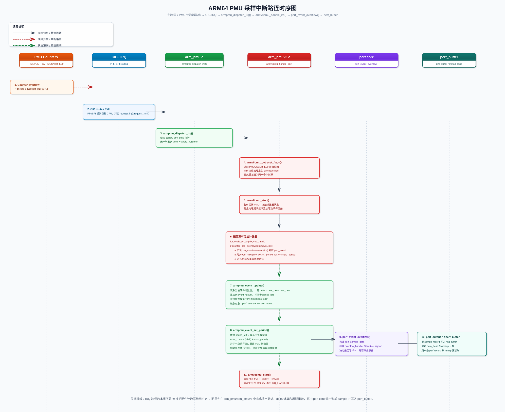
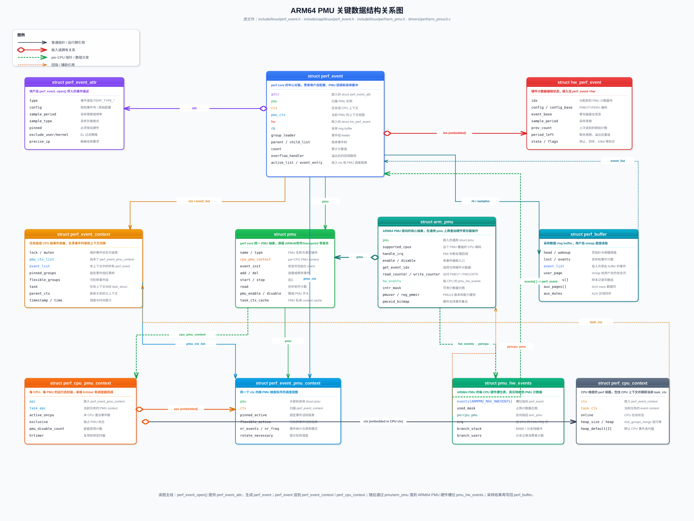
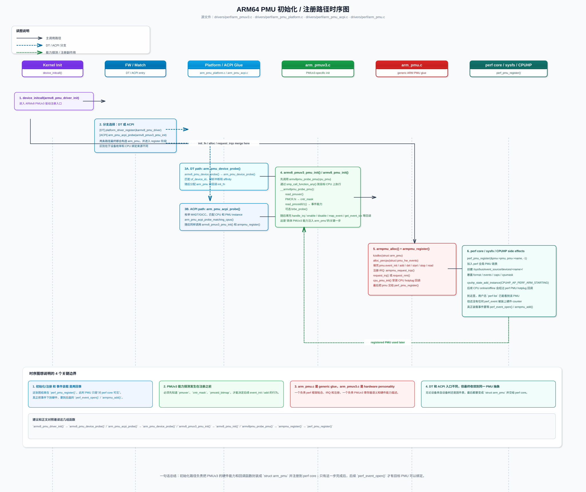
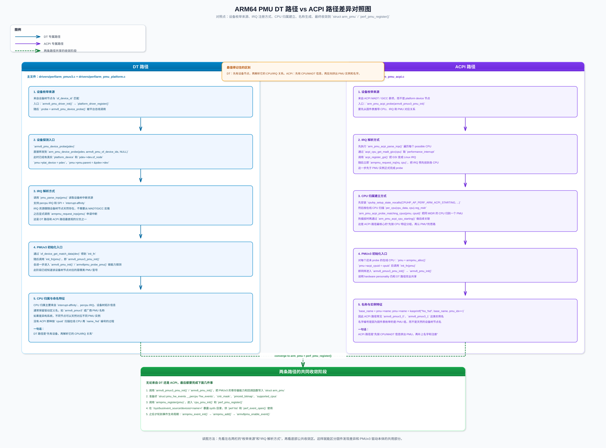
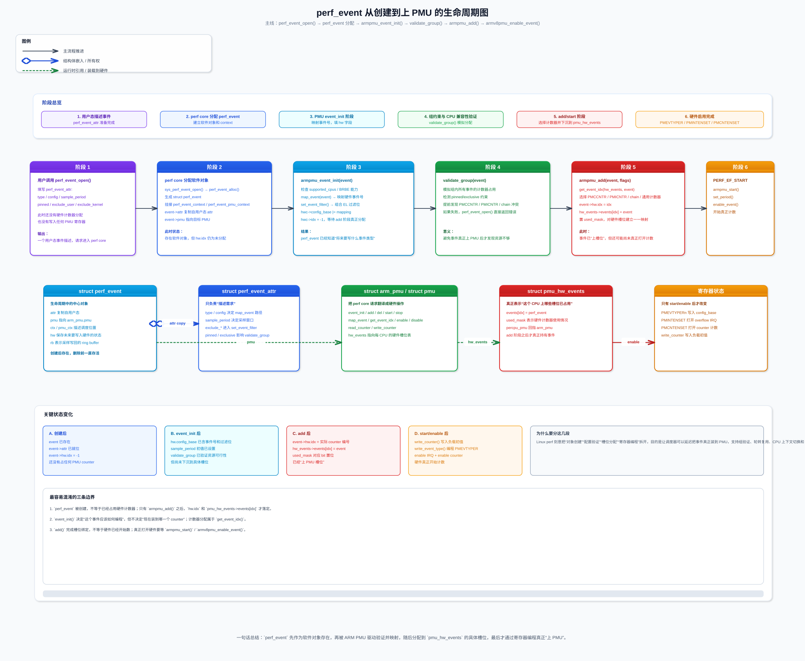
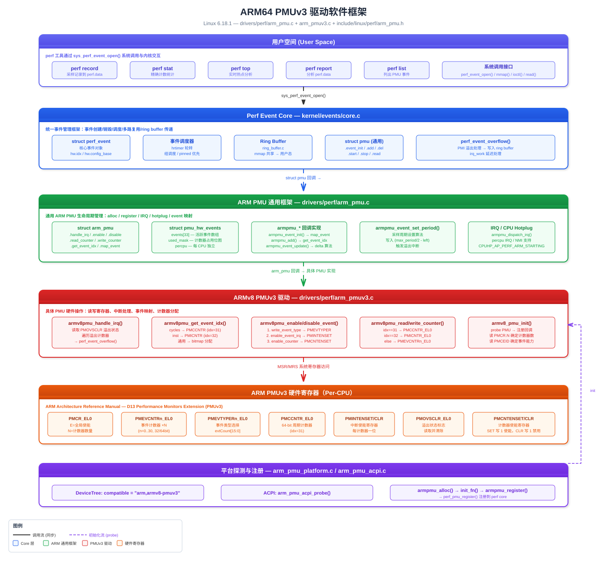
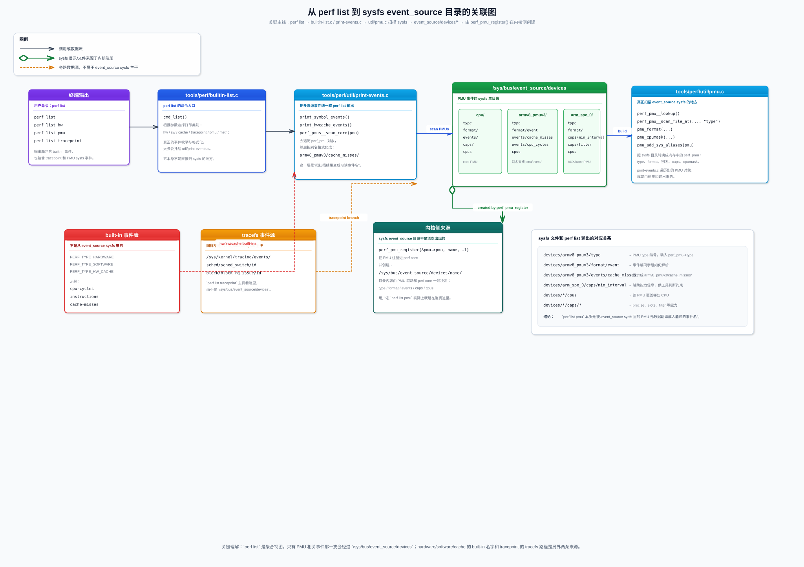

基于内核版本 Linux 6.18.1 (Baby Opossum Posse) 的 perf 工具源码分析与实践指南
Perf 是一个横跨内核态和用户态的性能分析框架，代码分布在以下几个核心区域：
tools/perf/)| 文件 | 说明 |
|---|---|
tools/perf/perf.c |
主入口，所有子命令的调度中心 |
tools/perf/Makefile |
顶层 Makefile 包装器，调用 Makefile.perf 并行编译 |
tools/perf/Makefile.perf |
核心构建系统，支持交叉编译、特性检测 |
tools/perf/Makefile.config |
编译配置选项检测 |
tools/perf/builtin.h |
所有 builtin 命令的声明 |
tools/perf/perf.h |
perf 全局头文件 |
tools/perf/perf-sys.h |
系统调用封装 |
性能剖析类：
| 文件 | 命令 | 功能 |
|---|---|---|
builtin-record.c |
perf record |
采样记录，将 CPU/进程的性能数据写入 perf.data |
builtin-report.c |
perf report |
分析 perf.data，以直方图形式展示热点函数 |
builtin-annotate.c |
perf annotate |
将采样数据标注到源码/汇编级别 |
builtin-top.c |
perf top |
实时持续显示系统热点（类似 top） |
builtin-stat.c |
perf stat |
精确的性能计数器统计概览 |
追踪调试类：
| 文件 | 命令 | 功能 |
|---|---|---|
builtin-trace.c |
perf trace |
持续系统调用追踪（类似 strace，依赖 libtraceevent） |
builtin-probe.c |
perf probe |
设置动态探测点（kprobe/uprobe），依赖 libelf |
builtin-ftrace.c |
perf ftrace |
内核 ftrace 子系统的前端 |
builtin-script.c |
perf script |
用脚本解析 trace event 数据 |
专项分析类：
| 文件 | 命令 | 功能 |
|---|---|---|
builtin-c2c.c |
perf c2c |
Cache-to-Cache 通信分析（伪共享检测） |
builtin-mem.c |
perf mem |
内存访问模式分析 |
builtin-lock.c |
perf lock |
锁竞争分析（依赖 libtraceevent） |
builtin-sched.c |
perf sched |
调度器追踪分析（依赖 libtraceevent） |
builtin-kmem.c |
perf kmem |
内核内存分配分析（依赖 libtraceevent） |
builtin-kvm.c |
perf kvm |
KVM 虚拟化追踪 |
builtin-kwork.c |
perf kwork |
内核 work 分析（依赖 libtraceevent） |
builtin-timechart.c |
perf timechart |
生成 SVG 时间图（依赖 libtraceevent） |
builtin-bench.c |
perf bench |
内核性能基准测试 |
builtin-diff.c |
perf diff |
比较两个 perf.data 文件的差异 |
工具类：
| 文件 | 命令 | 功能 |
|---|---|---|
builtin-list.c |
perf list |
列出所有可用事件类型 |
builtin-evlist.c |
perf evlist |
列出 perf.data 中的事件 |
builtin-buildid-cache.c |
perf buildid-cache |
管理 build-id 缓存 |
builtin-buildid-list.c |
perf buildid-list |
列出 perf.data 中的 build ID |
builtin-config.c |
perf config |
管理 perf 配置 |
builtin-daemon.c |
perf daemon |
守护进程模式 |
builtin-data.c |
perf data |
数据文件操作 |
builtin-inject.c |
perf inject |
向 perf.data 注入事件 |
builtin-kallsyms.c |
perf kallsyms |
符号查找 |
builtin-check.c |
perf check |
系统环境检查 |
builtin-version.c |
perf version |
版本信息 |
tools/perf/util/)100+ 个文件，核心模块包括：
数据结构与会话管理：
| 文件 | 功能 |
|---|---|
evlist.c / evsel.c |
事件列表/事件选择器管理 |
session.c |
perf 会话管理（打开/关闭 perf.data） |
machine.c |
机器级别抽象（内核/用户空间信息） |
map.c / maps.c |
内存映射管理 |
dso.c |
共享对象（DSO）管理 |
symbol.c |
符号表解析 |
thread.c |
线程抽象 |
hist.c |
直方图生成 |
sample.c |
采样数据结构 |
事件解析与 PMU：
| 文件 | 功能 |
|---|---|
parse-events.l / .y |
事件表达式解析器（flex/bison 语法） |
pmu.l / .y |
PMU 事件解析器 |
expr.l / .y |
通用表达式解析器 |
pmu.c |
PMU 检测与管理 |
trace-event.c |
trace event 处理 |
tracepoint.c |
tracepoint 处理 |
符号与调试信息：
| 文件 | 功能 |
|---|---|
debuginfo.c |
调试信息处理 |
dwarf-aux.c |
DWARF 辅助工具 |
annotate.c |
源码标注 |
callchain.c |
调用链分析 |
unwind-libdw.c |
libdw 栈回溯 |
unwind-libunwind.c |
libunwind 栈回溯 |
BPF 支持：
| 文件 | 功能 |
|---|---|
bpf_counter.c |
BPF 计数器 |
bpf_filter.l / .y |
BPF 过滤表达式 |
bpf-event.c |
BPF 事件处理 |
bpf_skel/ |
BPF skeleton 模板 |
AUX trace 支持（架构特定）：
| 文件 | 功能 |
|---|---|
auxtrace.c |
AUX trace 框架 |
arm-spe.c |
ARM SPE (Statistical Profiling Extension) 解码 |
cs-etm.c |
ARM CoreSight ETM 解码 |
intel-pt.c |
Intel Processor Trace 解码 |
intel-bts.c |
Intel Branch Trace Store |
tools/perf/arch/arm64/)| 文件 | 功能 |
|---|---|
util/arm-spe.c |
ARM SPE 支持 |
util/header.c |
perf.data 头部处理 |
util/hisi-ptt.c |
华为海思 PTT 设备支持 |
util/kvm-stat.c |
KVM 统计 |
util/machine.c |
ARM64 机器初始化 |
util/mem-events.c |
内存事件 |
util/perf_regs.c |
寄存器定义 |
util/pmu.c |
PMU 设置 |
util/tsc.c |
时钟管理 |
util/unwind-libdw.c |
libdw 栈回溯 |
util/unwind-libunwind.c |
libunwind 栈回溯 |
annotate/ |
ARM64 指令标注 |
kernel/events/)| 文件 | 功能 |
|---|---|
core.c |
perf event 核心，~14000 行，包含 sys_perf_event_open 系统调用、事件调度、采样、计数 |
ring_buffer.c |
环形缓冲区实现，内核→用户态数据传递 |
callchain.c |
调用链遍历 |
hw_breakpoint.c |
硬件断点支持 |
uprobes.c |
用户空间探测点 |
internal.h |
内部数据结构定义 |
Makefile 条件编译：
obj-y += core.o ring_buffer.o callchain.o # 始终编译
obj-$(CONFIG_HAVE_HW_BREAKPOINT) += hw_breakpoint.o
obj-$(CONFIG_UPROBES) += uprobes.o| 文件 | 功能 |
|---|---|
arch/arm64/kernel/perf_callchain.c |
ARM64 调用链遍历 |
arch/arm64/kernel/perf_regs.c |
ARM64 寄存器访问 |
arch/arm64/kernel/hw_breakpoint.c |
ARM64 硬件断点 |
arch/arm64/kernel/watchdog_hld.c |
PMU NMI 看门狗 |
Makefile：
obj-$(CONFIG_PERF_EVENTS) += perf_regs.o perf_callchain.o
obj-$(CONFIG_HARDLOCKUP_DETECTOR_PERF) += watchdog_hld.odrivers/perf/)| 文件 | 功能 |
|---|---|
arm_pmu.c |
ARM PMU 通用框架 |
arm_pmuv3.c |
ARMv8 PMUv3 驱动（ARM64 主力 PMU） |
arm_brbe.c |
ARM Branch Record Buffer Extension |
arm_spe_pmu.c |
ARM Statistical Profiling Extension |
arm_pmu_platform.c |
平台设备绑定 |
arm_pmu_acpi.c |
ACPI 绑定 |
arm_dsu_pmu.c |
DynamIQ Shared Unit PMU |
arm_dmc620_pmu.c |
DMC-620 内存控制器 PMU |
arm_smmuv3_pmu.c |
SMMUv3 PMU |
arm-cmn.c |
CMN (Coherent Mesh Network) PMU |
arm-ccn.c |
CCN (Cache Coherent Network) PMU |
arm-cci.c |
CCI (Cache Coherent Interconnect) PMU |
arm-ni.c |
NI (Network-on-chip Interconnect) PMU |
| 文件 | 功能 |
|---|---|
include/uapi/linux/perf_event.h |
用户空间 ABI：perf_event_attr、事件类型枚举、采样格式 |
include/linux/perf_event.h |
内核内部：struct pmu、struct perf_event、回调接口 |
include/linux/perf/arm_pmu.h |
ARM PMU 框架头文件 |
include/linux/perf/arm_pmuv3.h |
ARMv8 PMUv3 寄存器定义 |
include/linux/hw_breakpoint.h |
硬件断点定义 |
include/linux/perf_regs.h |
寄存器定义（栈回溯用） |
include/uapi/linux/bpf_perf_event.h |
BPF perf event 集成 |
# init/Kconfig
config HAVE_PERF_EVENTS # 架构声明支持 perf events（ARM64 自动 select）
bool
config PERF_EVENTS # 启用 perf event 子系统（核心开关）
bool "Kernel performance events and counters"
default y if PROFILING
depends on HAVE_PERF_EVENTS
select IRQ_WORK
help
Enable kernel support for various performance events provided
by software and hardware.PERF_EVENTS是所有 perf 功能的总开关。ARM64 架构通过select HAVE_PERF_EVENTS自动满足依赖。
# arch/arm64/Kconfig
# ARM64 自动选择的 perf 相关能力
select HAVE_PERF_EVENTS # 支持 perf events
select HAVE_PERF_EVENTS_NMI if ARM64_PSEUDO_NMI # 支持 NMI 级采样
select HAVE_PERF_REGS # 支持寄存器转储
select HAVE_PERF_USER_STACK_DUMP # 支持用户栈转储
select HAVE_HW_BREAKPOINT if PERF_EVENTS # 硬件断点
# 硬件性能计数器
config HW_PERF_EVENTS
def_bool y
depends on ARM_PMU # 依赖 ARM PMU 驱动框架
# PMU NMI 看门狗
select HAVE_HARDLOCKUP_DETECTOR_PERF if PERF_EVENTS && \
HW_PERF_EVENTS && HAVE_PERF_EVENTS_NMI| 配置选项 | 说明 |
|---|---|
CONFIG_PERF_EVENTS=y |
必须，perf 核心 |
CONFIG_HW_PERF_EVENTS=y |
硬件性能计数器（ARM64 默认开启） |
CONFIG_TRACEPOINTS=y |
tracepoint 事件支持 |
CONFIG_FTRACE=y |
ftrace 框架，perf ftrace 需要 |
CONFIG_KPROBES=y |
kprobe 动态探测，perf probe 需要 |
CONFIG_UPROBES=y |
uprobe 用户空间探测 |
CONFIG_KALLSYMS=y |
内核符号表 |
CONFIG_KALLSYMS_ALL=y |
所有符号（不仅是函数） |
CONFIG_DEBUG_INFO=y |
DWARF 调试信息（源码级标注） |
CONFIG_DEBUG_INFO_DWARF5=y |
DWARF5 格式（推荐） |
CONFIG_FRAME_POINTER=y |
帧指针（更精确的调用链） |
CONFIG_STACKTRACE=y |
栈回溯支持 |
CONFIG_BPF_SYSCALL=y |
BPF 系统调用支持 |
CONFIG_CGROUP_PERF=y |
cgroup perf 支持 |
CONFIG_PROFILING=y |
通用 profiling 基础设施 |
CONFIG_GUEST_PERF_EVENTS=y |
KVM 客户机 perf |
config DEBUG_PERF_USE_VMALLOC # 使用 vmalloc 后端 perf mmap 缓冲区
bool "Debug: use vmalloc to back perf mmap() buffers"
depends on PERF_EVENTS && DEBUG_KERNEL && !PPC| 参数 | 说明 |
|---|---|
/proc/sys/kernel/perf_event_paranoid |
访问控制级别：-1=无限制, 0=允许所有用户, 1=仅自身进程, 2=仅软件事件（默认） |
/proc/sys/kernel/perf_event_max_sample_rate |
最大采样频率 |
/proc/sys/kernel/perf_event_mlock_kb |
perf mmap 缓冲区锁定内存上限 |
/proc/sys/kernel/perf_event_max_stack |
调用链最大深度 |
/proc/sys/kernel/kptr_restrict |
内核指针暴露级别（设为 0 解除符号地址限制） |
| 库 | 用途 | 缺失影响 |
|---|---|---|
| libelf / elfutils | ELF 二进制解析 | 无法解析符号、perf probe 不可用 |
| 库 | 用途 | 编译选项 |
|---|---|---|
| libdw (elfutils) | DWARF 调试信息解析 | NO_LIBDW=1 禁用 |
| libunwind | 用户态栈回溯 | LIBUNWIND=1 启用 |
| libtraceevent | trace event 解析 | NO_LIBTRACEEVENT=1 禁用。禁用后 perf trace/sched/lock/kmem/kwork/timechart 全部不可用 |
| zlib | 压缩内核模块支持 | NO_ZLIB=1 禁用 |
| libzstd | Zstandard 压缩 | NO_LIBZSTD=1 禁用 |
| 库 | 用途 | 编译选项 |
|---|---|---|
| libbpf | BPF 程序支持 | NO_LIBBPF=1 禁用 |
| libcap | 进程 capabilities | NO_LIBCAP=1 禁用 |
| libslang | TUI 界面 | NO_SLANG=1 禁用 |
| GTK2 | GUI 界面 | GTK2=1 启用 |
| Python | Python 脚本扩展 | NO_LIBPYTHON=1 禁用 |
| Perl | Perl 脚本扩展 | 通过 LIBPERL 启用 |
| libbabeltrace | CTF 数据格式 | NO_LIBBABELTRACE=1 禁用 |
| libcapstone | 反汇编引擎 | NO_CAPSTONE=1 禁用 |
| libpfm4 | PMU 事件扩展 | NO_LIBPFM4=1 禁用 |
| libdebuginfod | 远程 debuginfo 获取 | NO_LIBDEBUGINFOD=1 禁用 |
| libnuma | NUMA 基准测试 | NO_LIBNUMA=1 禁用 |
┌─────────────────────────────────────────────────────────────────────┐
│ 用户空间 (User Space) │
│ │
│ ┌──────────────┐ ┌──────────────┐ ┌──────────────────────┐ │
│ │ perf record │ │ perf stat │ │ perf top / report │ │
│ │ perf trace │ │ perf list │ │ perf annotate │ │
│ └──────┬───────┘ └──────┬───────┘ └──────────┬───────────┘ │
│ │ │ │ │
│ ▼ ▼ ▼ │
│ ┌─────────────────────────────────────────────────────────────┐ │
│ │ tools/perf/ 用户态工具 │ │
│ │ perf.c → builtin-xxx.c → util/{evsel,evlist,session,...} │ │
│ └─────────────────────────┬───────────────────────────────────┘ │
│ │ sys_perf_event_open() │
│ │ mmap() / read() / ioctl() │
├─────────────────────────────┼───────────────────────────────────────┤
│ 内核空间 (Kernel Space) │
│ ▼ │
│ ┌─────────────────────────────────────────────────────────────┐ │
│ │ kernel/events/core.c │ │
│ │ perf_event_open() → perf_event_alloc() → pmu->event_init │ │
│ │ perf_event_enable/disable/read/start/stop │ │
│ └──────────┬────────────────────────────┬─────────────────────┘ │
│ │ │ │
│ ▼ ▼ │
│ ┌──────────────────┐ ┌──────────────────────────────┐ │
│ │ ring_buffer.c │ │ PMU 驱动层 (struct pmu) │ │
│ │ 环形缓冲区 │ │ ┌─────────────────────────┐ │ │
│ │ 内核→用户态传递 │ │ │ 硬件 PMU: arm_pmuv3 │ │ │
│ └──────────────────┘ │ │ 软件 PMU: sw events │ │ │
│ │ │ Tracepoint PMU │ │ │
│ │ │ kprobe/uprobe PMU │ │ │
│ │ └─────────────────────────┘ │ │
│ └────────────┬─────────────────┘ │
│ │ │
│ ▼ │
│ ┌──────────────────────────┐ │
│ │ 硬件 (Hardware) │ │
│ │ PMU 计数器寄存器 │ │
│ │ PMCCNTR, PMEVCNTRn │ │
│ │ PMCR, PMSELR, etc. │ │
│ └──────────────────────────┘ │
└─────────────────────────────────────────────────────────────────────┘perf_event_open()perf 的一切始于一个系统调用（定义于 kernel/events/core.c:13387）：
SYSCALL_DEFINE5(perf_event_open,
struct perf_event_attr __user *, attr_uptr, // 事件属性配置
pid_t, pid, // 目标进程：0=当前, >0=指定进程, -1=所有进程
int, cpu, // 目标CPU：>=0 指定CPU, -1=所有CPU
int, group_fd, // 事件组：-1=新组, >=0=加入已有组
unsigned long, flags) // 标志位返回值：文件描述符（fd），通过标准 VFS 接口操作：
read() — 读取计数器当前值mmap() — 映射环形缓冲区接收采样数据ioctl() — 控制事件（启用/禁用/重置）poll() — 等待事件就绪close() — 关闭并释放事件perf_event_attr.type 决定事件来源（定义于 include/uapi/linux/perf_event.h）：
enum perf_type_id {
PERF_TYPE_HARDWARE = 0, // 硬件事件（CPU cycles, cache miss 等）
PERF_TYPE_SOFTWARE = 1, // 软件事件（page fault, context switch 等）
PERF_TYPE_TRACEPOINT = 2, // tracepoint 事件（ftrace 静态探测点）
PERF_TYPE_HW_CACHE = 3, // 硬件缓存事件（L1/L2/LLC/TLB/BPU）
PERF_TYPE_RAW = 4, // 原始 PMU 事件（直接指定硬件计数器编码）
PERF_TYPE_BREAKPOINT = 5, // 硬件断点事件
};硬件事件（通用化）：
enum perf_hw_id {
PERF_COUNT_HW_CPU_CYCLES = 0, // CPU 周期数
PERF_COUNT_HW_INSTRUCTIONS = 1, // 指令数
PERF_COUNT_HW_CACHE_REFERENCES = 2, // 缓存引用
PERF_COUNT_HW_CACHE_MISSES = 3, // 缓存未命中
PERF_COUNT_HW_BRANCH_INSTRUCTIONS = 4, // 分支指令
PERF_COUNT_HW_BRANCH_MISSES = 5, // 分支预测失败
PERF_COUNT_HW_BUS_CYCLES = 6, // 总线周期
PERF_COUNT_HW_STALLED_CYCLES_FRONTEND = 7, // 前端停顿周期
PERF_COUNT_HW_STALLED_CYCLES_BACKEND = 8, // 后端停顿周期
PERF_COUNT_HW_REF_CPU_CYCLES = 9, // 参考 CPU 周期
};软件事件（纯内核软件实现）：
enum perf_sw_ids {
PERF_COUNT_SW_CPU_CLOCK = 0, // CPU 时钟
PERF_COUNT_SW_TASK_CLOCK = 1, // 任务时钟
PERF_COUNT_SW_PAGE_FAULTS = 2, // 缺页异常
PERF_COUNT_SW_CONTEXT_SWITCHES = 3, // 上下文切换
PERF_COUNT_SW_CPU_MIGRATIONS = 4, // CPU 迁移
PERF_COUNT_SW_PAGE_FAULTS_MIN = 5, // 次缺页
PERF_COUNT_SW_PAGE_FAULTS_MAJ = 6, // 主缺页
PERF_COUNT_SW_ALIGNMENT_FAULTS = 7, // 对齐错误
PERF_COUNT_SW_EMULATION_FAULTS = 8, // 模拟错误
PERF_COUNT_SW_DUMMY = 9, // 哑事件
PERF_COUNT_SW_BPF_OUTPUT = 10, // BPF 输出
PERF_COUNT_SW_CGROUP_SWITCHES = 11, // cgroup 切换
};perf stat -e cycles,instructions ./programperf_event_attr.sample_period = 0read(fd) 读取精确计数数据流：
CPU PMU 计数器 → perf_event.count → read(fd) → perf stat 展示perf record -e cycles -c 100000 ./programperf_event_attr.sample_period > 0（或 freq=1 + sample_freq）mmap() 读取环形缓冲区数据流：
PMU 计数器溢出 → PMI 中断 → perf_event_overflow()
→ 写入 ring_buffer → mmap 共享内存 → 用户态 perf record 读取
→ 写入 perf.data 文件struct pmu)每种事件源由一个 struct pmu 实例驱动（定义于 include/linux/perf_event.h:329）：
struct pmu {
const char *name; // PMU 名称
int type; // 对应 perf_type_id
// 核心回调
int (*event_init)(struct perf_event *event); // 初始化事件
int (*add)(struct perf_event *event, int flags); // 安装到 CPU
void (*del)(struct perf_event *event, int flags); // 从 CPU 移除
void (*start)(struct perf_event *event, int flags); // 启动计数
void (*stop)(struct perf_event *event, int flags); // 停止计数
void (*read)(struct perf_event *event); // 读取当前值
// PMU 全局启停
void (*pmu_enable)(struct pmu *pmu); // 启用整个 PMU
void (*pmu_disable)(struct pmu *pmu); // 禁用整个 PMU
// 事务支持（事件组原子调度）
void (*start_txn)(struct pmu *pmu, unsigned int txn_flags);
int (*commit_txn)(struct pmu *pmu);
void (*cancel_txn)(struct pmu *pmu);
...
};ARM64 PMUv3 驱动 (drivers/perf/arm_pmuv3.c) 实现了这些回调，操作 ARM PMU 寄存器：
| 寄存器 | 功能 |
|---|---|
PMCR_EL0 |
PMU 控制寄存器 |
PMSELR_EL0 |
计数器选择 |
PMCCNTR_EL0 |
周期计数器 |
PMEVCNTRn_EL0 |
事件计数器 (n=0..30) |
PMEVTYPERn_EL0 |
事件类型寄存器 |
PMINTENSET_EL1 |
中断使能 |
PMOVSCLR_EL0 |
溢出状态清除 |
采样数据通过 mmap() 共享的环形缓冲区从内核传递到用户态：
mmap 布局：1 + 2^n 页
┌────────────────────────┐ 页 0
│ perf_event_mmap_page │ 元数据页
│ - data_head │ 写指针（内核更新）
│ - data_tail │ 读指针（用户态更新）
│ - lock (seqlock) │ 同步锁
│ - index, offset │ 用户态直读 PMU
├────────────────────────┤ 页 1 ~ 2^n
│ │
│ Ring Buffer Data │ 事件记录（采样数据）
│ │
│ ┌──────────────────┐ │
│ │ perf_event_header │ │ 每条记录头部
│ │ type, misc, size │ │
│ ├──────────────────┤ │
│ │ payload data │ │ IP, TID, 调用链等
│ └──────────────────┘ │
│ │
└────────────────────────┘关键流程：
perf_output_begin() → perf_output_put() → perf_output_end()data_head（写指针）data_head，读取新数据data_tail（读指针）通知内核已消费当 PMU 硬件计数器数量有限时（ARM64 PMUv3 典型为 6 个），内核需要调度事件：
事件调度流程：
1. 事件组优先调度（group_fd 指定的事件组）
- 组内事件必须同时上 CPU，否则整组不调度
- pinned 事件优先保证
2. 轮转调度（Round-Robin）
- hrtimer 定期触发上下文切换
- 被切出的事件记录 time_enabled / time_running
- 用户态可通过比率修正统计值
3. 多路复用
- 计数器值虚拟化为 64 位（硬件可能只有 32/48 位）
- 溢出时自动扩展perf record 工作流：main() → cmd_record()
→ perf_evlist__new() # 创建事件列表
→ parse_events() # 解析 -e 参数
→ perf_evsel__open() # 对每个事件调 sys_perf_event_open()
→ perf_evlist__mmap() # mmap 环形缓冲区
→ enable_counters() # ioctl(PERF_EVENT_IOC_ENABLE)
→ __cmd_record()
└→ loop:
perf_mmap__read() # 从 ring buffer 读取采样
perf_session__write() # 写入 perf.data
→ disable_counters() # ioctl(PERF_EVENT_IOC_DISABLE)perf report 工作流：main() → cmd_report()
→ perf_session__new() # 打开 perf.data
→ perf_session__process_events() # 逐条处理事件
→ process_sample_event() # 处理采样记录
→ hist_entry__add() # 构建直方图
→ symbol__resolve() # 符号解析 (IP → 函数名)
→ hists__fprintf() # 输出报告perf_event_attr 关键字段struct perf_event_attr {
__u32 type; // 事件大类 (HARDWARE/SOFTWARE/TRACEPOINT/...)
__u64 config; // 具体事件 ID
__u64 sample_period; // 采样周期（每 N 个事件采样一次）
__u64 sample_freq; // 采样频率（每秒 N 次，与 period 二选一）
__u64 sample_type; // 采样内容位图（IP/TID/TIME/CALLCHAIN/...）
__u64 read_format; // 读取格式
// 行为控制位域
disabled : 1, // 创建后默认禁用
inherit : 1, // 子进程继承
pinned : 1, // 必须绑定 PMU（组 leader 有效）
exclusive : 1, // 独占 PMU
exclude_user : 1, // 不计用户态
exclude_kernel : 1, // 不计内核态
exclude_hv : 1, // 不计 hypervisor
freq : 1, // 使用频率模式（而非周期）
mmap : 1, // 记录 PROT_EXEC mmap
comm : 1, // 记录进程 comm 变化
task : 1, // 记录 fork/exit
...
};# 安装 aarch64 交叉编译工具链
# Ubuntu/Debian
sudo apt-get install gcc-aarch64-linux-gnu g++-aarch64-linux-gnu
# 或使用 Linaro / ARM 官方工具链
# 确认工具链可用
aarch64-linux-gnu-gcc --version# Ubuntu/Debian 安装 aarch64 交叉编译依赖
sudo dpkg --add-architecture arm64
sudo apt-get update
# 必需
sudo apt-get install libelf-dev:arm64
# 强烈推荐
sudo apt-get install libdw-dev:arm64
sudo apt-get install libunwind-dev:arm64
sudo apt-get install libslang2-dev:arm64
sudo apt-get install libzstd-dev:arm64
sudo apt-get install zlib1g-dev:arm64
# 可选
sudo apt-get install libbpf-dev:arm64
sudo apt-get install libcap-dev:arm64
sudo apt-get install libnuma-dev:arm64
sudo apt-get install python3-dev:arm64
sudo apt-get install libbabeltrace-dev:arm64注意：如果无法安装 arm64 的库包，可以选择禁用对应功能来编译最小化版本。
cd /path/to/linux-6.18.1
# 方法一：从顶层 Makefile 编译
make ARCH=arm64 CROSS_COMPILE=aarch64-linux-gnu- tools/perf
# 方法二：进入 tools/perf 目录编译（推荐，更灵活）
cd tools/perf
make ARCH=arm64 CROSS_COMPILE=aarch64-linux-gnu-适合交叉编译环境缺少目标架构库的情况：
cd tools/perf
make ARCH=arm64 CROSS_COMPILE=aarch64-linux-gnu- \
NO_LIBPYTHON=1 \
NO_LIBTRACEEVENT=1 \
NO_LIBDW=1 \
NO_DEMANGLE=1 \
NO_LIBELF=1 \
NO_LIBNUMA=1 \
NO_LIBBPF=1 \
NO_LIBCAP=1 \
NO_BACKTRACE=1 \
NO_SLANG=1 \
NO_AUXTRACE=1 \
NO_CAPSTONE=1 \
NO_LIBZSTD=1 \
NO_ZLIB=1 \
WERROR=0注意：最小化编译将缺失大量功能（符号解析、trace、BPF 等），仅适合基础计数。
cd tools/perf
make ARCH=arm64 CROSS_COMPILE=aarch64-linux-gnu- \
NO_LIBPYTHON=1 \
NO_LIBBABELTRACE=1 \
NO_CAPSTONE=1 \
NO_LIBPFM4=1 \
NO_SDT=1 \
WERROR=0make ARCH=arm64 CROSS_COMPILE=aarch64-linux-gnu- \
O=/tmp/perf-arm64-buildmake ARCH=arm64 CROSS_COMPILE=aarch64-linux-gnu- \
LDFLAGS=-static# 安装到指定目录（默认 /usr/local）
make ARCH=arm64 CROSS_COMPILE=aarch64-linux-gnu- \
DESTDIR=/tmp/perf-install \
install
# 部署到目标板
scp /tmp/perf-install/usr/local/bin/perf root@target:/usr/local/bin/
# 或者直接复制编译产物
scp tools/perf/perf root@target:/usr/local/bin/编译过程中 Makefile.config 会自动检测可用的库和特性，输出类似：
Auto-detecting system features:
... dwarf: [ on ]
... dwarf_getlocations: [ on ]
... glibc: [ on ]
... libelf: [ on ]
... libnuma: [ OFF ]
... numa_num_possible_cpus: [ OFF ]
... libperl: [ OFF ]
... libpython: [ OFF ]
... libslang: [ on ]
... libcrypto: [ on ]
... libunwind: [ on ]
... libdw-dwarf-unwind: [ on ]
... zlib: [ on ]
... lzma: [ on ]
... get_cpuid: [ OFF ]
... bpf: [ on ]
... libbpf: [ on ]使用 V=1 查看详细编译命令，VF=1 查看特性检测细节：
make ARCH=arm64 CROSS_COMPILE=aarch64-linux-gnu- VF=1# 确认是 ARM64 二进制
file tools/perf/perf
# 预期输出：ELF 64-bit LSB executable, ARM aarch64, ...
# 在目标板上验证
perf version
perf list # 列出可用事件
perf stat ls # 基础功能测试| 问题 | 原因 | 解决方案 |
|---|---|---|
fatal error: elf.h: No such file |
缺少 libelf 开发包 | 安装 libelf-dev:arm64 或 NO_LIBELF=1 |
cannot find -lunwind |
缺少 libunwind 交叉编译库 | 安装或指定 LIBUNWIND_DIR= |
No rule to make target 'libtraceevent' |
libtraceevent 未安装 | NO_LIBTRACEEVENT=1 |
multiple definition of ... |
工具链版本兼容 | 添加 EXTRA_CFLAGS=-fcommon |
flex/bison not found |
缺少解析器生成器 | apt install flex bison |
| 编译警告当作错误 | 默认 WERROR=1 | 添加 WERROR=0 |
# ========== 系统级分析 ==========
perf top # 实时热点函数
perf top -e cache-misses # 实时 cache miss 热点
perf stat -a sleep 5 # 系统级 5 秒统计
# ========== 进程级分析 ==========
perf stat ./program # 进程性能统计
perf record ./program # 采样记录
perf record -g ./program # 带调用链采样
perf report # 分析 perf.data
perf annotate # 源码级标注
# ========== 事件选择 ==========
perf list # 列出所有可用事件
perf stat -e cycles,instructions,cache-misses ./prog
perf record -e 'armv8_pmuv3/event=0x11/' ./prog # ARM64 原始事件
# ========== 追踪类 ==========
perf trace ls # 系统调用追踪
perf ftrace -T function_name # 函数追踪
perf probe -a 'do_sys_open' # 添加动态探测点
# ========== 专项分析 ==========
perf c2c record ./program # cache-to-cache（伪共享）
perf c2c report
perf mem record ./program # 内存访问分析
perf lock record ./program # 锁竞争
# ========== 调整权限 ==========
echo -1 > /proc/sys/kernel/perf_event_paranoid # 开放所有权限
echo 0 > /proc/sys/kernel/kptr_restrict # 暴露内核符号地址linux-6.18.1/
├── include/
│ ├── uapi/linux/perf_event.h ← 用户空间 ABI（perf_event_attr 等）
│ └── linux/
│ ├── perf_event.h ← 内核内部（struct pmu, perf_event）
│ └── perf/arm_pmu.h ← ARM PMU 框架
├── kernel/events/
│ ├── core.c ← perf event 核心 (sys_perf_event_open)
│ ├── ring_buffer.c ← 环形缓冲区
│ ├── callchain.c ← 调用链遍历
│ └── uprobes.c ← 用户空间探测
├── arch/arm64/kernel/
│ ├── perf_callchain.c ← ARM64 调用链
│ ├── perf_regs.c ← ARM64 寄存器
│ └── hw_breakpoint.c ← ARM64 硬件断点
├── drivers/perf/
│ ├── arm_pmu.c ← ARM PMU 通用框架
│ ├── arm_pmuv3.c ← ARMv8 PMUv3 驱动
│ ├── arm_spe_pmu.c ← ARM SPE 驱动
│ └── arm_brbe.c ← ARM BRBE 驱动
└── tools/perf/
├── perf.c ← 用户态主入口
├── builtin-record.c ← perf record
├── builtin-report.c ← perf report
├── builtin-top.c ← perf top
├── builtin-stat.c ← perf stat
├── builtin-trace.c ← perf trace
├── util/ ← 工具库（100+ 文件）
│ ├── evsel.c / evlist.c ← 事件管理
│ ├── session.c ← 会话管理
│ ├── symbol.c ← 符号解析
│ ├── callchain.c ← 调用链分析
│ ├── parse-events.l/.y ← 事件表达式解析器
│ └── arm-spe.c ← ARM SPE 解码
├── arch/arm64/util/ ← ARM64 特定工具代码
├── Documentation/ ← man page 源文件
└── design.txt ← 设计文档ARMv8 Performance Monitors Extension（PMUv3）定义于 ARM Architecture Reference Manual D13 章节，是 ARM64 平台性能分析的硬件基础。自 ARMv8.1 起持续增强，目前演进到 PMUv3p9（ARMv8.9/ARMv9.4）。
PMUv3 硬件组成：
┌─────────────────────────── Per-CPU PMU 硬件 ───────────────────────────┐
│ │
│ ┌──────────────┐ ┌──────────────────────────────────────────────┐ │
│ │ PMCR_EL0 │ │ 通用事件计数器 (Event Counters) │ │
│ │ 控制寄存器 │ │ │ │
│ │ E: 全局使能 │ │ PMEVCNTRn_EL0 (n = 0 .. N-1) │ │
│ │ P: 重置计数器 │ │ ┌───────┬───────┬───────┬─── ┬───────┐ │ │
│ │ C: 重置CCNT │ │ │ CNT0 │ CNT1 │ CNT2 │... │ CNT30 │ │ │
│ │ N: 计数器数 │ │ └───┬───┴───┬───┴───┬───┴─── ┴───┬───┘ │ │
│ │ LC: 64位CCNT │ │ │ │ │ │ │ │
│ │ LP: 64位CNT │ │ PMEVTYPERn_EL0 (事件类型选择寄存器) │ │
│ └──────────────┘ │ ┌───────┬───────┬───────┬─── ┬───────┐ │ │
│ │ │ TYPE0 │ TYPE1 │ TYPE2 │... │TYPE30 │ │ │
│ ┌──────────────┐ │ └───────┴───────┴───────┴─── ┴───────┘ │ │
│ │ PMCCNTR_EL0 │ └──────────────────────────────────────────────┘ │
│ │ 64位周期计数器 │ │
│ │ (idx = 31) │ ┌──────────────────────────────────────────────┐ │
│ └──────────────┘ │ 中断控制 │ │
│ │ PMINTENSET_EL1 — 写 1 使能中断 │ │
│ ┌──────────────┐ │ PMINTENCLR_EL1 — 写 1 禁用中断 │ │
│ │ PMICNTR_EL0 │ │ PMOVSSET_EL0 — 写 1 设置溢出标志 │ │
│ │ 指令计数器 │ │ PMOVSCLR_EL0 — 读取并清除溢出标志 │ │
│ │ (idx=32,v8.9) │ └──────────────────────────────────────────────┘ │
│ └──────────────┘ │
│ ┌──────────────────────────────────────────────┐ │
│ ┌──────────────┐ │ 使能控制 │ │
│ │ PMCEID0/1 │ │ PMCNTENSET_EL0 — 写 1 使能计数器 │ │
│ │ 事件能力 ID │ │ PMCNTENCLR_EL0 — 写 1 禁用计数器 │ │
│ │ 硬件支持事件 │ │ PMUSERENR_EL0 — 用户态访问控制 │ │
│ └──────────────┘ └──────────────────────────────────────────────┘ │
│ │
│ ┌────────────────────────────────────────────────────────────────┐ │
│ │ PMCCFILTR_EL0 — 周期计数器过滤 (EL0/EL1/EL2 排除) │ │
│ │ PMMIR_EL1 — 微架构信息 (slots/bus_width, v8.4+) │ │
│ │ PMSELR_EL0 — 计数器选择 (用于间接访问) │ │
│ └────────────────────────────────────────────────────────────────┘ │
└────────────────────────────────────────────────────────────────────────┘Bits 名称 描述
────────────────────────────────────────────────────
[0] E 全局使能位。1=所有计数器开始计数，0=全部停止
[1] P 事件计数器重置。写 1 将所有 PMEVCNTRn 清零（自清除位）
[2] C 周期计数器重置。写 1 将 PMCCNTR 清零（自清除位）
[3] D 时钟分频。1=PMCCNTR 每 64 个周期递增一次
[4] X 导出使能。1=将事件导出到 ETM 外部调试接口
[5] DP 禁用 CCNT（非侵入式调试模式下）
[6] LC 长周期计数器。1=PMCCNTR 为 64 位，0=32 位溢出
[7] LP 长事件计数器。1=PMEVCNTRn 为 64 位（v8.5+）
[15:11] N 只读。实现的通用事件计数器数量（典型值：4-8）Linux 内核操作：armv8pmu_pmcr_write()写入时用ARMV8_PMU_PMCR_MASK屏蔽保留位，并在写入前执行isb()指令序列化。
Bits 名称 描述
────────────────────────────────────────────────────
[15:0] evtCount 事件编号（0x0000-0xFFFF）
[25:0] ARMv8 基本事件空间
[26] EL3 排除 1=不计 EL3 执行（Secure Monitor）
[27] EL2 包含 1=计 EL2 执行（Hypervisor）
[28] NSH Exclude Non-secure EL0
[29] NSK Exclude Non-secure EL1
[30] P 1=排除 EL0（用户态）
[31] U 1=排除 EL1（内核态）
[43:32] TH 阈值计数（v8.8+，Threshold Counting）
[63:61] TC 阈值比较类型（v8.8+）PMUv3 定义了超过 100 个架构事件（include/linux/perf/arm_pmuv3.h）：
| 事件范围 | 类别 | 示例 |
|---|---|---|
0x0000-0x003F |
架构通用事件 | 0x0011=CPU_CYCLES, 0x0008=INST_RETIRED |
0x0040-0x00FF |
推荐微架构事件 | 0x0040=L1D_CACHE_RD, 0x0070=LD_SPEC |
0x4000-0x403F |
扩展架构事件 | 0x4000=SPE_SAMPLE_POP, 0x4004=AMU_CNT_CYCLES |
0xC000-0xFFFF |
厂商自定义事件 | A53: 0xC2=PREF_LINEFILL |
事件能力检测：硬件通过 PMCEID0_EL0 和 PMCEID1_EL0 寄存器声明支持哪些事件，内核在探测阶段读取并存入 arm_pmu->pmceid_bitmap / pmceid_ext_bitmap。
| 版本 | ARM 架构 | 关键特性 |
|---|---|---|
| PMUv3 | ARMv8.0 | 基础 PMU：最多 31 个通用计数器 + 1 个周期计数器 |
| PMUv3p1 | ARMv8.1 | 增加 16-bit 事件编号空间 |
| PMUv3p4 | ARMv8.4 | 增加 PMMIR 微架构信息寄存器 |
| PMUv3p5 | ARMv8.5 | 64 位事件计数器（PMCR.LP） |
| PMUv3p7 | ARMv8.7 | 过滤增强 |
| PMUv3p8 | ARMv8.8 | 阈值计数（Threshold Counting）、BRBE 分支记录 |
| PMUv3p9 | ARMv8.9/v9.4 | 第 33 个计数器（PMICNTR 指令计数器 idx=32）、细粒度用户态访问 |
32 位计数器（默认）:
┌────────────────────────────────┐
│ 31 0 │ 范围：0 ~ 0xFFFFFFFF
└────────────────────────────────┘
溢出点：0xFFFFFFFF → 0x00000000，触发 PMI
64 位计数器（PMCR.LP=1, v8.5+）:
┌────────────────────────────────────────────────────────────────┐
│ 63 0 │
└────────────────────────────────────────────────────────────────┘
内核通过 "bias" 技术实现 32 位溢出语义（见 5.5 节）
PMCCNTR_EL0（周期计数器，始终 64 位）:
当 PMCR.LC=1 时为 64 位计数
当 PMCR.LC=0 时仅低 32 位有效当硬件支持 64 位计数器（PMCR.LP=1）但用户请求的是 32 位事件时，内核使用 bias 技术 让 64 位计数器在低 32 位溢出时触发中断：
写入时 (armv8pmu_bias_long_counter):
value |= 0xFFFFFFFF_00000000 ← 高 32 位全填 1
实际写入硬件的值: 0xFFFFFFFF_XXXX_XXXX
当低 32 位从 0xFFFFFFFF 递增到 0x00000000 时
高 32 位从 0xFFFFFFFF 变为 0x1_00000000
触发 64 位溢出 → PMI 中断
读取时 (armv8pmu_unbias_long_counter):
value &= 0x00000000_FFFFFFFF ← 清除高 32 位 bias
返回真实的低 32 位计数值对于 32 位计数器，可以将两个相邻计数器链接成一个 64 位计数器：
┌──────────────────┐ ┌──────────────────┐
│ CNT[n] (偶数) │───→│ CNT[n+1] (奇数) │
│ 低 32 位 │ │ 高 32 位 │
│ 实际事件计数 │ │ CHAIN 事件 (0x1E) │
└──────────────────┘ └──────────────────┘
- 低计数器编程为目标事件
- 高计数器编程为 CHAIN 事件（0x1E），在低计数器溢出时递增
- 内核通过 armv8pmu_get_chain_idx() 分配连续偶奇对PMU 计数器溢出
│
▼
产生 PMI（SPI 或 PPI 中断）
│
▼
GIC 路由到目标 CPU
│
▼
armpmu_dispatch_irq() ← drivers/perf/arm_pmu.c
│ 解引用 percpu arm_pmu 指针
▼
armv8pmu_handle_irq() ← drivers/perf/arm_pmuv3.c
│
├─ armv8pmu_getreset_flags() ← 读取 PMOVSCLR 获取溢出状态并清除
│
├─ armv8pmu_stop() ← 关闭 PMU 防止采样偏差
│
├─ for_each_set_bit(idx, cntr_mask)
│ │
│ ├─ 检查 counter_has_overflowed(pmovsr, idx)
│ ├─ armpmu_event_update() ← 读取计数器差值
│ ├─ armpmu_event_set_period() ← 重装采样周期
│ └─ perf_event_overflow() ← 通知 perf core，写入 ring buffer
│
└─ armv8pmu_start() ← 重新启动 PMU
SVG 文件路径：image/arm64_pmu_sampling_irq_sequence.svg
这张图把硬件溢出和软件处理拆成 6 条泳道：PMU counter、GIC/IRQ、armpmu_dispatch_irq()、armv8pmu_handle_irq()、perf_event_overflow() 和 perf_buffer。读的时候重点看三段：先用 PMOVSCLR_EL0 确认并清除溢出源，再通过 armpmu_event_update() / armpmu_event_set_period() 完成 delta 计算与周期重装，最后才由 perf core 把 sample 写入 ring buffer。
struct arm_pmu（核心 PMU 抽象）定义于 include/linux/perf/arm_pmu.h，是 ARM PMU 驱动的核心数据结构，封装了通用 struct pmu 并添加 ARM 特有的回调和状态：
struct arm_pmu {
/* ========== 继承通用 PMU 框架 ========== */
struct pmu pmu; // 嵌入通用 pmu，通过 to_arm_pmu() 反向获取
/* ========== CPU 亲和性 ========== */
cpumask_t supported_cpus; // 此 PMU 支持的 CPU 掩码（big.LITTLE 区分）
/* ========== 标识 ========== */
char *name; // PMU 名称，如 "armv8_cortex_a76"
/* ========== 硬件操作回调（由具体驱动填充） ========== */
irqreturn_t (*handle_irq)(struct arm_pmu *pmu); // 中断处理
void (*enable)(struct perf_event *event); // 使能单个事件
void (*disable)(struct perf_event *event); // 禁用单个事件
int (*get_event_idx)(struct pmu_hw_events *hw, // 分配硬件计数器
struct perf_event *event);
void (*clear_event_idx)(struct pmu_hw_events *hw, // 释放硬件计数器
struct perf_event *event);
int (*set_event_filter)(struct hw_perf_event *evt,// 设置 EL 过滤
struct perf_event_attr *attr);
u64 (*read_counter)(struct perf_event *event); // 读取计数器值
void (*write_counter)(struct perf_event *event, // 写入计数器值
u64 val);
void (*start)(struct arm_pmu *); // 全局启动 PMU
void (*stop)(struct arm_pmu *); // 全局停止 PMU
void (*reset)(void *); // 重置 PMU
int (*map_event)(struct perf_event *event); // 事件映射
/* ========== 计数器掩码 ========== */
DECLARE_BITMAP(cntr_mask, ARMPMU_MAX_HWEVENTS); // 可用计数器位图（最多 33 位）
/* ========== 硬件事件 per-CPU ========== */
struct pmu_hw_events __percpu *hw_events; // 每 CPU 的硬件事件状态
struct platform_device *plat_device; // 平台设备
/* ========== PMUv3 特有 ========== */
int pmuver; // PMU 版本号
u64 reg_pmmir; // PMMIR 寄存器缓存
u64 reg_brbidr; // BRBE ID 寄存器缓存
DECLARE_BITMAP(pmceid_bitmap, 64); // PMCEID0 事件能力位图
DECLARE_BITMAP(pmceid_ext_bitmap, 64); // PMCEID1 扩展事件能力位图
/* ========== sysfs 属性组 ========== */
const struct attribute_group *attr_groups[ARMPMU_NR_ATTR_GROUPS + 1];
/* ========== 其他 ========== */
struct hlist_node node; // 全局 PMU 链表
struct notifier_block cpu_pm_nb; // CPU 电源管理通知
unsigned long acpi_cpuid; // ACPI 探测用
};
分段讲解（6.1 聚焦）：这一段只看图中struct arm_pmu、struct pmu和struct pmu_hw_events三块。要点是arm_pmu通过嵌入pmu把自己挂进 perf core，再通过hw_events把每 CPU 的硬件槽位表串起来，所以它既是 perf 的 PMU 接口实现，又是 ARM64 硬件能力和寄存器操作的总入口。
struct pmu_hw_events（每 CPU 硬件事件状态）struct pmu_hw_events {
/*
* 活跃事件数组：events[idx] 指向占用第 idx 号计数器的 perf_event
* 最多 33 个槽位（31 通用 + PMCCNTR + PMICNTR）
*/
struct perf_event *events[ARMPMU_MAX_HWEVENTS]; // [33]
/*
* 计数器占用位图：bit N = 1 表示第 N 号计数器正在使用
* 用于 get_event_idx() 分配算法
*/
DECLARE_BITMAP(used_mask, ARMPMU_MAX_HWEVENTS); // [33 bits]
/*
* percpu IRQ 关联
*/
struct arm_pmu *percpu_pmu; // 反向指针
int irq; // 本 CPU 的 PMU 中断号
/*
* BRBE 分支记录
*/
struct perf_branch_stack *branch_stack; // 分支记录缓冲区
unsigned int branch_users; // 请求分支记录的活跃事件数
};分段讲解（6.2 聚焦）：这一段主要看图右下侧struct pmu_hw_events与中心struct perf_event的连线。events[idx] = event表示某个硬件计数器槽位当前被哪个事件占用，used_mask则是分配算法扫描的位图；它是“事件真正上 CPU 硬件槽位”的第一现场。
struct hw_perf_event（通用 perf 硬件事件状态）嵌入在 struct perf_event 中（event->hw），保存每个事件的硬件层状态：
struct hw_perf_event {
/* ========== 计数器管理 ========== */
int idx; // 分配的硬件计数器索引（-1=未分配）
unsigned long config_base; // 事件类型编码（写入 PMEVTYPERn）
unsigned long config; // 额外配置
unsigned long event_base; // 事件基地址
/* ========== 采样与计数 ========== */
u64 sample_period; // 采样周期（非采样模式 = max_period/2）
u64 last_period; // 上次设定的周期
local64_t prev_count; // 上次读取的原始计数值
local64_t period_left; // 剩余周期数
/* ========== 状态标志 ========== */
int state; // PERF_HES_STOPPED | PERF_HES_UPTODATE
/* ========== 架构扩展标志 ========== */
int flags; // ARMPMU_EVT_64BIT / 47BIT / 63BIT
};分段讲解（6.3 聚焦）：这里重点看图中央struct perf_event到右上struct hw_perf_event的嵌入关系。hw_perf_event不是独立分配的对象，而是perf_event内部那块“面向 PMU 寄存器编程”的状态区，里面的idx、config_base、prev_count、period_left会直接被armpmu_add()、armpmu_event_update()和armpmu_event_set_period()读写。
前面 6.1 到 6.3 已经按 arm_pmu、pmu_hw_events、hw_perf_event 三个观察点分段看过同一张图；把这三段拼起来后，就能得到完整主线：用户态 perf_event_attr 先生成 perf_event，perf_event 再通过 pmu / arm_pmu 找到 ARM64 PMU 驱动，最终在每 CPU 的 pmu_hw_events 中占据具体槽位，并把硬件运行态保存在 event->hw 里。
如果你想从代码路径去对应这张图，可以直接沿着下面 3 个入口读源码：
armpmu_event_init()：填 event->hw.config_base，建立“事件语义”armpmu_add()：写 event->hw.idx，建立“槽位绑定”armv8pmu_enable_event()：把 event->hw 内容真正编程到 PMU 寄存器内核启动
│
▼
device_initcall(armv8_pmu_driver_init) ← arm_pmuv3.c 末尾
│
├─ [ACPI 系统] arm_pmu_acpi_probe(armv8_pmuv3_pmu_init)
│
└─ [DT 系统] platform_driver_register(&armv8_pmu_driver)
│
▼
armv8_pmu_device_probe() ← 匹配 DT compatible
│
▼
arm_pmu_device_probe(pdev, armv8_pmu_of_device_ids, NULL)
│ ← arm_pmu_platform.c
│
├─ (1) armpmu_alloc() ← 分配 arm_pmu + percpu hw_events
│ │
│ ├─ kzalloc(struct arm_pmu)
│ ├─ alloc_percpu(struct pmu_hw_events)
│ └─ 填充 pmu 通用回调:
│ pmu.event_init = armpmu_event_init
│ pmu.add = armpmu_add
│ pmu.del = armpmu_del
│ pmu.start = armpmu_start
│ pmu.stop = armpmu_stop
│ pmu.read = armpmu_read
│
├─ (2) pmu_parse_irqs() ← 解析 DT 中断信息
│ ├─ percpu IRQ: irq_is_percpu_devid()
│ └─ SPI IRQ: interrupt-affinity 属性映射 CPU
│
├─ (3) init_fn(pmu) = armv8_pmuv3_pmu_init()
│ │
│ └─ armv8_pmu_init(cpu_pmu, "armv8_pmuv3", armv8_pmuv3_map_event)
│ │
│ ├─ armv8pmu_probe_pmu()
│ │ │
│ │ └─ smp_call_function_any() → __armv8pmu_probe_pmu()
│ │ │ 在目标 CPU 上执行:
│ │ ├─ read_pmuver() ← 读 PMU 版本
│ │ ├─ PMCR.N → bitmap_set(cntr_mask) ← 确定计数器数量
│ │ ├─ set_bit(CYCLE_IDX=31) ← 添加周期计数器
│ │ ├─ set_bit(INSTR_IDX=32) ← 添加指令计数器(v8.9+)
│ │ ├─ read_pmceid0/1() ← 读取事件能力
│ │ └─ brbe_probe() ← 探测 BRBE 支持
│ │
│ └─ 填充 arm_pmu 硬件回调:
│ handle_irq = armv8pmu_handle_irq
│ enable = armv8pmu_enable_event
│ disable = armv8pmu_disable_event
│ read_counter = armv8pmu_read_counter
│ write_counter = armv8pmu_write_counter
│ get_event_idx = armv8pmu_get_event_idx
│ start = armv8pmu_start
│ stop = armv8pmu_stop
│ reset = armv8pmu_reset
│ map_event = armv8_pmuv3_map_event
│
├─ (4) armpmu_request_irqs() ← 注册中断处理函数
│ └─ armpmu_request_irq(irq, cpu)
│ ├─ NMI 模式: request_nmi() + percpu_nmi_ops
│ └─ IRQ 模式: request_irq(armpmu_dispatch_irq)
│
└─ (5) armpmu_register()
│
├─ cpu_pmu_init() ← CPU 热插拔回调注册
│ └─ cpuhp_state_add_instance(CPUHP_AP_PERF_ARM_STARTING)
│
└─ perf_pmu_register(&pmu->pmu, name, -1)
└─ 注册到 perf core 全局 PMU 列表
→ /sys/bus/event_source/devices/<name>/
SVG 文件路径：image/arm64_pmu_init_registration_sequence.svg
这张图把 device_initcall() 到 perf_pmu_register() 之间的路径拆成 6 条泳道：内核初始化入口、DT/ACPI 枚举入口、平台/固件 glue 层、arm_pmuv3.c 的 PMUv3 特定初始化、arm_pmu.c 的通用 PMU glue，以及最终的 perf core / sysfs / CPU hotplug 注册结果。读的时候重点抓 4 个边界：
struct arm_pmuarmv8pmu_probe_pmu() 的能力探测发生在 perf_pmu_register() 之前arm_pmu.c 负责 generic glue，arm_pmuv3.c 负责 hardware personalityperf_pmu_register() 时，PMU 只是完成“注册可见”，还没有任何 perf_event 上硬件计数器

SVG 文件路径：image/arm64_pmu_dt_vs_acpi_comparison.svg
这张图不是再讲一遍公共初始化主线，而是专门把两条发现路径的分叉点拆开对照。最重要的区别有 4 个：
platform_device / 设备树节点，再解析 CPU 和 IRQ 关系”name_%d 形式的实例名armv8_pmuv3_pmu_init()、armpmu_register() 和 perf_pmu_register()armpmu_event_init()用户调用 perf_event_open()
│
▼
perf core → pmu.event_init()
│
▼
armpmu_event_init(event) ← arm_pmu.c
│
├─ 检查 CPU 亲和性: cpumask_test_cpu()
├─ 检查 BRBE 支持: has_branch_stack()
│
└─ __hw_perf_event_init(event)
│
├─ armpmu->map_event(event) ← 事件映射（见 7.3 节）
│ 返回硬件事件编号
│
├─ hwc->idx = -1 ← 暂不分配计数器
├─ hwc->config_base = 0
│
├─ armpmu->set_event_filter(hwc, attr)
│ ← 设置 EL0/EL1/EL2 过滤位到 config_base
│
├─ hwc->config_base |= mapping ← 合并事件编号
│
├─ [非采样模式] hwc->sample_period = max_period >> 1
│
└─ validate_group(event) ← 模拟分配验证组事件armpmu_add()perf core 调度事件到 CPU
│
▼
armpmu_add(event, flags) ← arm_pmu.c
│
├─ cpumask_test_cpu() 检查 CPU 兼容性
│
├─ armpmu->get_event_idx(hw_events, event)
│ │ ← armv8pmu_get_event_idx()
│ ├─ cycles 事件 → 尝试 PMCCNTR (idx=31)
│ ├─ inst 事件 → 尝试 PMICNTR (idx=32)
│ ├─ 链式事件 → armv8pmu_get_chain_idx() 分配偶奇对
│ └─ 通用事件 → armv8pmu_get_single_idx() 位图扫描
│
├─ event->hw.idx = idx
├─ hw_events->events[idx] = event
│
└─ [PERF_EF_START] armpmu_start(event)
│
├─ armpmu_event_set_period() ← 设置采样周期
└─ armpmu->enable(event) ← armv8pmu_enable_event()
├─ armv8pmu_write_event_type() ← 写 PMEVTYPERn
├─ armv8pmu_enable_event_irq() ← 写 PMINTENSET
└─ armv8pmu_enable_event_counter()← 写 PMCNTENSETarmpmu_del()armpmu_del(event, flags)
│
├─ armpmu_stop(event)
│ ├─ armpmu->disable(event) ← armv8pmu_disable_event()
│ │ ├─ armv8pmu_disable_event_counter()← 写 PMCNTENCLR
│ │ └─ armv8pmu_disable_event_irq() ← 写 PMINTENCLR + PMOVSCLR
│ └─ armpmu_event_update() ← 最终读取计数值
│
├─ hw_events->events[idx] = NULL
├─ armpmu->clear_event_idx() ← 清除 used_mask 位图
└─ hwc->idx = -1

SVG 文件路径：image/perf_event_to_pmu_lifecycle.svg
这张图重点解释 4 个经常混淆的状态边界：
perf_event 被创建，不等于已经占用 PMU 计数器armpmu_event_init() 完成事件映射，不等于已经选定具体 idxarmpmu_add() 绑定了 hw_events->events[idx]，这才叫“上 PMU 槽位”armpmu_start() / armv8pmu_enable_event() 之后，硬件寄存器才真正开始计数事件映射将 perf 通用事件 ID 转换为硬件 PMU 事件编号：
// arm_pmu.c — armpmu_map_event()
switch (event->attr.type) {
case PERF_TYPE_HARDWARE:
// 查 perf_map 数组：PERF_COUNT_HW_CPU_CYCLES → 0x0011
return armpmu_map_hw_event(event_map, config);
case PERF_TYPE_HW_CACHE:
// 查 cache_map 三维数组：[cache][op][result] → 事件编号
return armpmu_map_cache_event(cache_map, config);
case PERF_TYPE_RAW:
// 直接使用原始事件编号 & 掩码
return armpmu_map_raw_event(raw_event_mask, config);
case PMU_TYPE (动态类型):
// 同 RAW 模式
return armpmu_map_raw_event(raw_event_mask, config);
}映射表示例 (arm_pmuv3.c):
static const unsigned armv8_pmuv3_perf_map[PERF_COUNT_HW_MAX] = {
[PERF_COUNT_HW_CPU_CYCLES] = 0x0011, // CPU_CYCLES
[PERF_COUNT_HW_INSTRUCTIONS] = 0x0008, // INST_RETIRED
[PERF_COUNT_HW_CACHE_REFERENCES] = 0x0004, // L1D_CACHE
[PERF_COUNT_HW_CACHE_MISSES] = 0x0003, // L1D_CACHE_REFILL
[PERF_COUNT_HW_BRANCH_MISSES] = 0x0010, // BR_MIS_PRED
[PERF_COUNT_HW_BUS_CYCLES] = 0x001D, // BUS_CYCLES
[PERF_COUNT_HW_STALLED_CYCLES_FRONTEND] = 0x0023, // STALL_FRONTEND
[PERF_COUNT_HW_STALLED_CYCLES_BACKEND] = 0x0024, // STALL_BACKEND
};armv8pmu_get_event_idx）计数器分配策略遵循专用优先、通用兜底原则：
输入：事件 event，当前 CPU 的 pmu_hw_events
算法：
┌─────────────────────────────────────────────────────────────────┐
│ 1. 检查是否为 CPU_CYCLES 事件 │
│ └─ YES → 尝试分配 PMCCNTR (idx=31) │
│ └─ test_and_set_bit(31, used_mask) │
│ ├─ 成功 → return 31 │
│ └─ 失败（已被占用）→ 继续步骤 3 │
│ │
│ 2. 检查是否为 INST_RETIRED 事件 且 v8.9+ │
│ └─ YES → 尝试分配 PMICNTR (idx=32) │
│ └─ test_and_set_bit(32, used_mask) │
│ ├─ 成功 → return 32 │
│ └─ 失败 → 继续步骤 3 │
│ │
│ 3. 检查是否需要链式计数器（64 位事件 + 无 LP 支持） │
│ └─ YES → armv8pmu_get_chain_idx() │
│ for_each_set_bit(idx, cntr_mask, 31): │
│ if idx 是奇数: │
│ if test_and_set_bit(idx, used_mask) 成功: │
│ if test_and_set_bit(idx-1, used_mask) 成功: │
│ return idx ← 成功分配偶奇对 │
│ else: │
│ clear_bit(idx) ← 释放奇数，继续找 │
│ return -EAGAIN ← 无可用连续对 │
│ │
│ 4. 普通单计数器分配 │
│ └─ armv8pmu_get_single_idx() │
│ for_each_set_bit(idx, cntr_mask, 31): │
│ if test_and_set_bit(idx, used_mask) 成功: │
│ return idx │
│ return -EAGAIN ← 所有计数器已满 │
└─────────────────────────────────────────────────────────────────┘armpmu_event_set_period）此算法将"还需要多少事件才溢出"转换为硬件计数器的初始值：
输入：
left = period_left（剩余周期数）
period = sample_period（采样周期）
max = arm_pmu_event_max_period()（32位=0xFFFFFFFF, 64位=0xFFFFFFFFFFFFFFFF）
算法：
┌─────────────────────────────────────────────────────────────────┐
│ 1. 边界修正 │
│ if (left <= -period): left = period │
│ if (left <= 0): left += period │
│ │
│ 2. 防止超过半周期（防止延迟导致错过溢出） │
│ if (left > max/2): left = max/2 │
│ │
│ 3. 设置计数器初始值为负的 left │
│ prev_count = (u64)(-left) │
│ write_counter( (-left) & max ) │
│ │
│ 原理： │
│ 计数器从 (-left) 开始递增 │
│ 经过 left 个事件后达到 0（或 max+1） │
│ 触发溢出中断 │
│ │
│ 例：period=10000, max=0xFFFFFFFF │
│ left=10000 │
│ write_counter(0xFFFFD8F0) ← 距离溢出还有 10000 次 │
│ 经过 10000 个事件 → 0x00000000 → 溢出 → PMI │
└─────────────────────────────────────────────────────────────────┘armpmu_event_update）无锁原子更新，处理硬件计数器的环绕（wrap-around）：
u64 armpmu_event_update(struct perf_event *event)
{
u64 delta, prev_raw_count, new_raw_count;
u64 max_period = arm_pmu_event_max_period(event);
again:
prev_raw_count = local64_read(&hwc->prev_count); // 上次读取值
new_raw_count = armpmu->read_counter(event); // 当前硬件值
// CAS 原子更新 prev_count，失败则重试
if (local64_cmpxchg(&hwc->prev_count, prev_raw_count,
new_raw_count) != prev_raw_count)
goto again;
// 计算差值（自动处理溢出环绕）
delta = (new_raw_count - prev_raw_count) & max_period;
local64_add(delta, &event->count); // 累加到事件总计数
local64_sub(delta, &hwc->period_left); // 减少剩余周期
return new_raw_count;
}环绕处理示例（32 位计数器）：
prev_raw_count = 0xFFFFF000 (上次读取)
new_raw_count = 0x00001000 (当前，已溢出)
delta = (0x00001000 - 0xFFFFF000) & 0xFFFFFFFF
= 0x00002000 ← 正确！跨越溢出点计算了 8192 个事件validate_group）验证一组事件能否同时放入有限的硬件计数器：
validate_group(new_event):
┌─────────────────────────────────────────────────────────────────┐
│ 1. 创建 fake_pmu: 清零 used_mask │
│ │
│ 2. 模拟分配 group_leader │
│ └─ get_event_idx(&fake_pmu, leader) │
│ ├─ 成功 → 标记 fake_pmu.used_mask │
│ └─ 失败 → return -EINVAL（组不可行） │
│ │
│ 3. 模拟分配所有 sibling 事件 │
│ for_each_sibling: │
│ └─ get_event_idx(&fake_pmu, sibling) │
│ ├─ 成功 → 继续 │
│ └─ 失败 → return -EINVAL │
│ │
│ 4. 模拟分配 new_event 本身 │
│ └─ get_event_idx(&fake_pmu, new_event) │
│ ├─ 成功 → return 0（组有效） │
│ └─ 失败 → return -EINVAL │
└─────────────────────────────────────────────────────────────────┘
注意：这是"试装"算法，不修改真实硬件状态。
使用 fake_pmu 模拟计数器占用，验证所有事件能否同时就绪。armv8pmu_handle_irq）armv8pmu_handle_irq(cpu_pmu):
┌─────────────────────────────────────────────────────────────────┐
│ 1. 读取并清除溢出标志 │
│ pmovsr = read_pmovsclr() │
│ write_pmovsclr(pmovsr & OVERFLOWED_MASK) │
│ │
│ 2. 检查是否有溢出 │
│ if !has_overflowed(pmovsr) → return IRQ_NONE │
│ │
│ 3. 暂停 PMU（防止组事件采样偏差） │
│ armv8pmu_stop() ← PMCR.E = 0 │
│ │
│ 4. 遍历所有可用计数器 │
│ for_each_set_bit(idx, cntr_mask): │
│ event = hw_events->events[idx] │
│ if !event → skip │
│ if !counter_has_overflowed(pmovsr, idx) → skip │
│ │
│ // 处理溢出的计数器 │
│ armpmu_event_update(event) ← 更新计数值 │
│ armpmu_event_set_period(event) ← 重装采样周期 │
│ [BRBE] read_branch_records() ← 读取分支记录 │
│ perf_event_overflow(event, &data, regs) ← 通知 core │
│ │
│ 5. 重新启动 PMU │
│ armv8pmu_start() ← PMCR.E = 1 │
│ │
│ return IRQ_HANDLED │
└─────────────────────────────────────────────────────────────────┘

SVG 文件路径：image/arm64_pmu_driver_framework.svg
框架从上到下分为 5 层：
| 层级 | 代码位置 | 核心职责 |
|---|---|---|
| 用户空间 | tools/perf/ |
perf 命令行工具，通过系统调用与内核交互 |
| Perf Event Core | kernel/events/core.c |
事件生命周期管理、调度、ring buffer |
| ARM PMU 通用框架 | drivers/perf/arm_pmu.c |
通用回调实现、事件映射、IRQ 分发、CPU 热插拔 |
| PMUv3 驱动 | drivers/perf/arm_pmuv3.c |
具体寄存器操作、中断处理、计数器分配 |
| 硬件寄存器 | ARM PMUv3 规范 | PMCR、PMEVCNTRn、PMINTENSET 等系统寄存器 |
调用链路径：
perf_event_open() → armpmu_event_init() → armv8_pmuv3_map_event()
→ armv8pmu_set_event_filter()
armpmu_add() → armv8pmu_get_event_idx() → test_and_set_bit(used_mask)
→ armpmu_start()
→ armpmu_event_set_period() → armv8pmu_write_counter()
→ armv8pmu_enable_event()
→ write PMEVTYPERn / PMINTENSET / PMCNTENSET
PMI 中断 → armpmu_dispatch_irq()
→ armv8pmu_handle_irq()
→ armpmu_event_update() → armv8pmu_read_counter()
→ perf_event_overflow() → ring_buffer 写入以下是 drivers/perf/arm_pmuv3.c 中最核心的函数，附详细中文注释。
/*
* armv8_pmu_init — PMUv3 驱动初始化入口
*
* 由平台探测（DT/ACPI）调用，完成以下工作：
* 1. 探测硬件 PMU 能力
* 2. 注册所有硬件操作回调
* 3. 设置 sysfs 属性组
*
* @cpu_pmu: 已分配的 arm_pmu 结构体
* @name: PMU 名称，如 "armv8_pmuv3"
* @map_event: 事件映射函数（通用或厂商特定）
*/
static int armv8_pmu_init(struct arm_pmu *cpu_pmu, char *name,
int (*map_event)(struct perf_event *event))
{
/* 步骤 1: 在目标 CPU 上探测 PMU 硬件 */
int ret = armv8pmu_probe_pmu(cpu_pmu);
if (ret)
return ret;
/* 步骤 2: 填充硬件操作回调函数表 */
cpu_pmu->handle_irq = armv8pmu_handle_irq; // PMI 中断处理
cpu_pmu->enable = armv8pmu_enable_event; // 使能事件：写 TYPE+INTEN+CNTEN
cpu_pmu->disable = armv8pmu_disable_event; // 禁用事件：清 CNTEN+INTEN
cpu_pmu->read_counter = armv8pmu_read_counter; // 读 PMEVCNTRn/PMCCNTR
cpu_pmu->write_counter = armv8pmu_write_counter; // 写 PMEVCNTRn/PMCCNTR (含 bias)
cpu_pmu->get_event_idx = armv8pmu_get_event_idx; // 分配硬件计数器
cpu_pmu->clear_event_idx = armv8pmu_clear_event_idx; // 释放硬件计数器
cpu_pmu->start = armv8pmu_start; // 全局启动: PMCR.E=1
cpu_pmu->stop = armv8pmu_stop; // 全局停止: PMCR.E=0
cpu_pmu->reset = armv8pmu_reset; // 重置所有计数器和中断
cpu_pmu->set_event_filter = armv8pmu_set_event_filter;// EL 过滤配置
/* 步骤 3: 设置名称和事件映射 */
cpu_pmu->name = name;
cpu_pmu->map_event = map_event;
/* 步骤 4: 注册 sysfs 属性组 */
cpu_pmu->attr_groups[ARMPMU_ATTR_GROUP_EVENTS] = &armv8_pmuv3_events_attr_group;
cpu_pmu->attr_groups[ARMPMU_ATTR_GROUP_FORMATS] = &armv8_pmuv3_format_attr_group;
cpu_pmu->attr_groups[ARMPMU_ATTR_GROUP_CAPS] = &armv8_pmuv3_caps_attr_group;
armv8_pmu_register_sysctl_table();
return 0;
}/*
* __armv8pmu_probe_pmu — 在目标 CPU 上探测 PMU 硬件参数
*
* 通过 smp_call_function_any() 在 supported_cpus 中的某个 CPU 上执行，
* 因为 PMU 寄存器是 per-CPU 的，只能本地读取。
*
* 探测内容：
* - PMU 版本号
* - 可用计数器数量
* - 支持的事件列表
* - BRBE 分支记录能力
*/
static void __armv8pmu_probe_pmu(void *info)
{
struct armv8pmu_probe_info *probe = info;
struct arm_pmu *cpu_pmu = probe->pmu;
u64 pmceid_raw[2];
u32 pmceid[2];
int pmuver;
/* 读取 PMU 版本: ID_AA64DFR0_EL1.PMUVer 字段 */
pmuver = read_pmuver();
if (!pmuv3_implemented(pmuver))
return; /* 此 CPU 不支持 PMUv3 */
cpu_pmu->pmuver = pmuver;
probe->present = true;
/*
* 从 PMCR_EL0.N 字段读取通用计数器数量
* N 的值范围: 0-31，典型值 4-8
* 对应 cntr_mask 的 bit 0 .. N-1
*/
bitmap_set(cpu_pmu->cntr_mask,
0, FIELD_GET(ARMV8_PMU_PMCR_N, armv8pmu_pmcr_read()));
/* 始终存在的周期计数器 PMCCNTR (idx=31) */
set_bit(ARMV8_PMU_CYCLE_IDX, cpu_pmu->cntr_mask);
/* v8.9+: 指令计数器 PMICNTR (idx=32) */
if (pmuv3_has_icntr())
set_bit(ARMV8_PMU_INSTR_IDX, cpu_pmu->cntr_mask);
/*
* 读取 PMCEID0/PMCEID1: 事件能力 ID 寄存器
* 每一位对应一个架构事件是否被硬件支持
* 低 32 位: 标准事件 (0x00-0x1F)
* 高 32 位: 扩展事件 (0x4000-0x401F)
*/
pmceid[0] = pmceid_raw[0] = read_pmceid0();
pmceid[1] = pmceid_raw[1] = read_pmceid1();
/* 标准事件位图 */
bitmap_from_arr32(cpu_pmu->pmceid_bitmap,
pmceid, ARMV8_PMUV3_MAX_COMMON_EVENTS);
/* 扩展事件位图 (高 32 位) */
pmceid[0] = pmceid_raw[0] >> 32;
pmceid[1] = pmceid_raw[1] >> 32;
bitmap_from_arr32(cpu_pmu->pmceid_ext_bitmap,
pmceid, ARMV8_PMUV3_MAX_COMMON_EVENTS);
/* v8.4+: 读取微架构信息寄存器 (pipeline slots 等) */
if (is_pmuv3p4(pmuver))
cpu_pmu->reg_pmmir = read_pmmir();
/* 探测 BRBE (Branch Record Buffer Extension) */
brbe_probe(cpu_pmu);
}/*
* armv8pmu_handle_irq — PMUv3 溢出中断处理
*
* 当任何计数器从 max 溢出到 0 时触发。
* 中断类型可以是：
* - PPI (Per-Processor Interrupt, 典型中断号 23)
* - SPI (Shared Peripheral Interrupt, 平台相关)
* - NMI (需要 ARM64_PSEUDO_NMI 支持)
*
* 设计要点：
* 1. 先停止 PMU 再处理，防止组事件之间的采样偏差
* 2. 处理所有溢出的计数器（单个中断可能多个计数器同时溢出）
* 3. 处理完成后重新启动 PMU
*/
static irqreturn_t armv8pmu_handle_irq(struct arm_pmu *cpu_pmu)
{
u64 pmovsr;
struct perf_sample_data data;
struct pmu_hw_events *cpuc = this_cpu_ptr(cpu_pmu->hw_events);
struct pt_regs *regs;
int idx;
/*
* 步骤 1: 读取溢出状态并清除
* PMOVSCLR: 读取返回溢出标志，写入清除标志
* 每个计数器一位，bit 31 = PMCCNTR
*/
pmovsr = armv8pmu_getreset_flags();
/* 如果没有溢出，这不是我们的中断 */
if (!armv8pmu_has_overflowed(pmovsr))
return IRQ_NONE;
/* 获取中断时刻的寄存器快照（用于 IP 采样） */
regs = get_irq_regs();
/*
* 步骤 2: 暂停 PMU
* 关键：在处理过程中停止所有计数器
* 这确保了事件组内各计数器的值是一致的
*/
armv8pmu_stop(cpu_pmu);
/*
* 步骤 3: 遍历所有可用计数器，处理溢出
*/
for_each_set_bit(idx, cpu_pmu->cntr_mask, ARMPMU_MAX_HWEVENTS) {
struct perf_event *event = cpuc->events[idx];
struct hw_perf_event *hwc;
/* 没有事件占用这个计数器 */
if (!event)
continue;
/* 这个计数器没有溢出 */
if (!armv8pmu_counter_has_overflowed(pmovsr, idx))
continue;
hwc = &event->hw;
/*
* 步骤 3a: 更新事件计数值
* 读取当前硬件值，计算与上次读取的差值
*/
armpmu_event_update(event);
/*
* 步骤 3b: 重新设置采样周期
* 将计数器重新编程为 (max - period) 的初始值
*/
perf_sample_data_init(&data, 0, hwc->last_period);
if (!armpmu_event_set_period(event))
continue;
/* 步骤 3c: 如果有分支记录请求，读取 BRBE */
if (has_branch_stack(event))
read_branch_records(cpuc, event, &data);
/*
* 步骤 3d: 通知 perf core 发生溢出
* 这会将采样数据写入 ring buffer
* 如果 ring buffer 满了，会触发 irq_work 延迟处理
*/
perf_event_overflow(event, &data, regs);
}
/* 步骤 4: 重新启动 PMU */
armv8pmu_start(cpu_pmu);
return IRQ_HANDLED;
}/*
* armv8pmu_enable_event — 使能一个事件的硬件计数器
*
* 三步操作，顺序不能颠倒：
* 1. 编程事件类型（告诉硬件计什么）
* 2. 使能中断（溢出时产生 PMI）
* 3. 使能计数器（开始计数）
*
* 必须先配置类型和中断，最后才使能计数器，
* 否则可能在错误配置下开始计数。
*/
static void armv8pmu_enable_event(struct perf_event *event)
{
/*
* 写入 PMEVTYPERn_EL0：事件类型 + EL 过滤位
* 对于链式事件：低计数器写真实事件，高计数器写 CHAIN(0x1E)
* 对于 PMCCNTR：写入 PMCCFILTR_EL0
*/
armv8pmu_write_event_type(event);
/*
* 写入 PMINTENSET_EL1：使能溢出中断
* 写 1 到对应 bit 位使能该计数器的中断
*/
armv8pmu_enable_event_irq(event);
/*
* 写入 PMCNTENSET_EL0：使能计数器
* 写 1 到对应 bit 位开始计数
* 注意：在写入前有 isb() 确保类型配置可见
*/
armv8pmu_enable_event_counter(event);
}
/*
* armv8pmu_disable_event — 禁用一个事件的硬件计数器
*
* 两步操作，先停计数器，再关中断：
* 1. 禁用计数器（立即停止计数）
* 2. 禁用中断 + 清除挂起的溢出标志
*/
static void armv8pmu_disable_event(struct perf_event *event)
{
/*
* 写入 PMCNTENCLR_EL0：禁用计数器
* 写 1 到对应 bit 位停止计数
* 后续 isb() 确保计数器已停止
*/
armv8pmu_disable_event_counter(event);
/*
* 写入 PMINTENCLR_EL1：禁用中断
* 写入 PMOVSCLR_EL0：清除可能挂起的溢出标志
* 两者间有 isb() 确保顺序
*/
armv8pmu_disable_event_irq(event);
}/*
* armv8pmu_read_counter — 读取事件的硬件计数器值
*
* 根据计数器类型选择不同的读取路径：
* - idx=31: PMCCNTR_EL0 (周期计数器，始终 64 位)
* - idx=32: PMICNTR_EL0 (指令计数器，v8.9+)
* - 其他: PMEVCNTRn_EL0 (通用事件计数器)
*
* 对于链式计数器，合并偶奇两个 32 位值为一个 64 位值。
* 最后通过 unbias 去除 64 位长计数器的高 32 位偏移。
*/
static u64 armv8pmu_read_counter(struct perf_event *event)
{
struct hw_perf_event *hwc = &event->hw;
int idx = hwc->idx;
u64 value;
if (idx == ARMV8_PMU_CYCLE_IDX) /* 周期计数器 */
value = read_pmccntr();
else if (idx == ARMV8_PMU_INSTR_IDX) /* 指令计数器 */
value = read_pmicntr();
else
value = armv8pmu_read_hw_counter(event);
/*
* 对于链式事件:
* value = (read_evcntr(idx) << 32) | read_evcntr(idx-1)
* 对于普通事件:
* value = read_evcntr(idx)
*/
/* 去除 bias: 如果是 32 位事件使用 64 位计数器，清除高 32 位 */
return armv8pmu_unbias_long_counter(event, value);
}
/*
* armv8pmu_write_counter — 写入事件的硬件计数器值
*
* 用于设置采样周期的初始值。
* 写入前添加 bias（64 位模式下模拟 32 位溢出）。
*/
static void armv8pmu_write_counter(struct perf_event *event, u64 value)
{
struct hw_perf_event *hwc = &event->hw;
int idx = hwc->idx;
/* 添加 bias: 高 32 位填 1，使低 32 位溢出时触发 64 位溢出 */
value = armv8pmu_bias_long_counter(event, value);
if (idx == ARMV8_PMU_CYCLE_IDX)
write_pmccntr(value); /* MSR PMCCNTR_EL0, value */
else if (idx == ARMV8_PMU_INSTR_IDX)
write_pmicntr(value); /* MSR PMICNTR_EL0, value */
else
armv8pmu_write_hw_counter(event, value);
/*
* 对于链式事件:
* write_evcntr(idx, upper_32(value)) 高 32 位
* write_evcntr(idx-1, lower_32(value)) 低 32 位
* 对于普通事件:
* write_evcntr(idx, value)
*/
}/*
* armv8pmu_reset — 重置 PMU 到已知初始状态
*
* 在以下场景调用：
* - CPU 上线时 (cpu_pmu_starting_cpu)
* - 首次初始化时
*
* 重置操作确保所有计数器和中断处于可控状态。
*/
static void armv8pmu_reset(void *info)
{
struct arm_pmu *cpu_pmu = (struct arm_pmu *)info;
u64 pmcr, mask;
/* 将 cntr_mask 位图转换为 64 位掩码 */
bitmap_to_arr64(&mask, cpu_pmu->cntr_mask, ARMPMU_MAX_HWEVENTS);
/* 禁用所有计数器和中断（状态未知，必须先关闭） */
armv8pmu_disable_counter(mask); /* PMCNTENCLR = mask */
armv8pmu_disable_intens(mask); /* PMINTENCLR = mask + 清 PMOVSCLR */
/* 清除 KVM guest 可能设置的计数器状态 */
kvm_clr_pmu_events(mask);
/* 禁用并清空 BRBE */
if (brbe_num_branch_records(cpu_pmu)) {
brbe_disable();
brbe_invalidate();
}
/*
* 写入 PMCR:
* P = 1: 重置所有事件计数器为 0
* C = 1: 重置周期计数器为 0
* LC = 1: 64 位周期计数器模式
* LP = 1: 64 位事件计数器模式（如果硬件支持）
*
* 注意：不设置 E 位，PMU 保持停止状态
* 等待 armv8pmu_start() 时才全局使能
*/
pmcr = ARMV8_PMU_PMCR_P | ARMV8_PMU_PMCR_C | ARMV8_PMU_PMCR_LC;
if (armv8pmu_has_long_event(cpu_pmu))
pmcr |= ARMV8_PMU_PMCR_LP;
armv8pmu_pmcr_write(pmcr);
}/*
* DT 兼容性列表 — 匹配设备树中的 PMU 节点
*
* 设备树示例：
* pmu {
* compatible = "arm,cortex-a76-pmu";
* interrupts = <GIC_PPI 7 IRQ_TYPE_LEVEL_HIGH>;
* };
*
* .data 指向对应的初始化函数，由 arm_pmu_device_probe() 调用
*/
static const struct of_device_id armv8_pmu_of_device_ids[] = {
{.compatible = "arm,armv8-pmuv3", .data = armv8_pmuv3_pmu_init},
{.compatible = "arm,cortex-a53-pmu", .data = armv8_cortex_a53_pmu_init},
{.compatible = "arm,cortex-a55-pmu", .data = armv8_cortex_a55_pmu_init},
{.compatible = "arm,cortex-a76-pmu", .data = armv8_cortex_a76_pmu_init},
{.compatible = "arm,cortex-a78-pmu", .data = armv8_cortex_a78_pmu_init},
{.compatible = "arm,cortex-a520-pmu", .data = armv9_cortex_a520_pmu_init},
{.compatible = "arm,cortex-a720-pmu", .data = armv9_cortex_a720_pmu_init},
{.compatible = "arm,cortex-x4-pmu", .data = armv9_cortex_x4_pmu_init},
{.compatible = "arm,neoverse-n2-pmu", .data = armv9_neoverse_n2_pmu_init},
/* ... 40+ 更多处理器型号 ... */
{},
};
/*
* 平台驱动定义
*/
static struct platform_driver armv8_pmu_driver = {
.driver = {
.name = "armv8-pmu",
.of_match_table = armv8_pmu_of_device_ids,
.suppress_bind_attrs = true, /* 禁止通过 sysfs unbind */
},
.probe = armv8_pmu_device_probe,
};
/*
* 驱动初始化入口 — device_initcall 级别
*
* 根据系统固件类型选择探测方式：
* - ACPI 系统: 使用 arm_pmu_acpi_probe()
* - DT 系统: 使用 platform_driver_register()
*/
static int __init armv8_pmu_driver_init(void)
{
int ret;
if (acpi_disabled)
ret = platform_driver_register(&armv8_pmu_driver);
else
ret = arm_pmu_acpi_probe(armv8_pmuv3_pmu_init);
/*
* PMU 初始化成功后，重试硬锁检测器初始化
* 因为 hardlockup_detector 依赖 PMU NMI
*/
if (!ret)
lockup_detector_retry_init();
return ret;
}
device_initcall(armv8_pmu_driver_init)/*
* 大多数 ARM Cortex 处理器使用通用的 PMUv3 事件映射，
* 只需一行宏即可定义初始化函数：
*/
#define PMUV3_INIT_SIMPLE(name) \
static int name##_pmu_init(struct arm_pmu *cpu_pmu) \
{ \
return armv8_pmu_init(cpu_pmu, #name, \
armv8_pmuv3_map_event); \
}
/* 通用事件映射的处理器 */
PMUV3_INIT_SIMPLE(armv8_pmuv3) // 通用 PMUv3
PMUV3_INIT_SIMPLE(armv8_cortex_a76) // Cortex-A76
PMUV3_INIT_SIMPLE(armv9_cortex_a720) // Cortex-A720
PMUV3_INIT_SIMPLE(armv8_neoverse_n1) // Neoverse N1
/*
* 某些早期处理器有厂商自定义事件，
* 使用自己的 cache_map 来提供额外的缓存事件：
*/
#define PMUV3_INIT_MAP_EVENT(name, map_event) \
static int name##_pmu_init(struct arm_pmu *cpu_pmu) \
{ \
return armv8_pmu_init(cpu_pmu, #name, map_event); \
}
/* 使用自定义事件映射的处理器 */
PMUV3_INIT_MAP_EVENT(armv8_cortex_a53, armv8_a53_map_event)
PMUV3_INIT_MAP_EVENT(armv8_cortex_a57, armv8_a57_map_event)
PMUV3_INIT_MAP_EVENT(armv8_cortex_a73, armv8_a73_map_event)
PMUV3_INIT_MAP_EVENT(armv8_cavium_thunder, armv8_thunder_map_event)
/*
* armv8_a53_map_event 与通用 armv8_pmuv3_map_event 的区别：
* 额外查询 armv8_a53_perf_cache_map，提供：
* - L1D prefetch miss 事件 (0xC2)
* - NODE 级 bus access 事件 (0x0060/0x0061)
*/本章基于 Linux 6.18.1 源码tools/perf/目录中注册的所有子命令，面向 ARM64 (AArch64) 平台给出具体用法和实战案例。
所有命令均可通过perf help查看完整手册。
perf 共包含 34 个子命令（31 个 C builtin + 3 个 shell 脚本），按功能分为六大类：
| 类别 | 命令 |
|---|---|
| 性能剖析 | record, report, annotate, top, stat |
| 追踪调试 | trace, probe, ftrace, script |
| 专项分析 | c2c, mem, lock, sched, kmem, kvm, kwork, timechart, bench, diff |
| 数据管理 | evlist, data, inject, buildid-cache, buildid-list, archive |
| 系统工具 | list, kallsyms, config, check, version, help, daemon |
| 脚本命令 | iostat (shell) |
编译依赖提示：标有 ★ 的命令需要libtraceevent支持，标有 ◆ 的需要libelf支持。
perf stat — 精确性能计数器统计源文件：tools/perf/builtin-stat.c
功能：以计数模式运行硬件/软件性能计数器，输出精确的事件统计摘要。不产生 perf.data，开销最低。
基本语法：
perf stat [options] [<command>]
perf stat [options] -- <command> [<args>]常用选项：
| 选项 | 说明 |
|---|---|
-e |
指定事件（支持逗号分隔多个事件） |
-a |
系统全局（所有 CPU） |
-p |
绑定到进程 |
-t |
绑定到线程 |
-r |
重复运行 n 次，输出均值和标准差 |
-d / -dd / -ddd |
详细级别（递增更多事件） |
-I |
每隔 ms 毫秒打印一次中间结果 |
-G |
按 cgroup 过滤 |
-o |
输出到文件 |
--per-core |
按物理核汇总 |
--per-socket |
按 CPU socket 汇总 |
--topdown |
启用 Top-Down 微架构分析（需 PMU 支持） |
ARM64 实战案例：
# 案例 1：统计程序运行的基本性能指标
perf stat ./my_program
# 输出示例：
# Performance counter stats for './my_program':
# 1,234.56 msec task-clock # 0.987 CPUs utilized
# 128 context-switches # 103.653 /sec
# 3 cpu-migrations # 2.429 /sec
# 12,345 page-faults # 9.998 K/sec
# 4,567,890,123 cycles # 3.698 GHz
# 3,456,789,012 instructions # 0.76 insn per cycle
# 567,890,123 branches # 459.770 M/sec
# 12,345,678 branch-misses # 2.17% of all branches
# 案例 2：ARM64 PMU 硬件事件统计
perf stat -e cycles,instructions,cache-references,cache-misses,\
L1-dcache-loads,L1-dcache-load-misses,L1-icache-load-misses \
./my_program
# 案例 3：指定 ARM64 原始 PMU 事件（使用事件编号）
# 0x04 = L1D_CACHE (L1 数据缓存访问)
# 0x03 = L1D_CACHE_REFILL (L1 数据缓存未命中)
perf stat -e r04,r03,r14,r15 ./my_program
# 案例 4：系统全局统计，每 1000ms 刷新
perf stat -a -I 1000
# 案例 5：重复运行 5 次取平均值（减少运行间差异）
perf stat -r 5 -- ./my_program
# 案例 6：详细模式（三级详细度，输出尽可能多的硬件事件）
perf stat -ddd -- ./my_program
# 案例 7：监控指定进程（PID=1234）的 ARM64 PMU 事件
perf stat -e armv8_pmuv3/event=0x11/ -p 1234
# 案例 8：多核系统按 core 汇总
perf stat -a --per-core -e cycles,instructions -- sleep 5
# 案例 9：使用 ARM64 SPE 相关事件（如果硬件支持）
perf stat -e arm_spe_0/ts_enable=1/ -- ./my_programperf record — 采样记录源文件：tools/perf/builtin-record.c
功能：以采样模式收集性能数据，生成 perf.data 文件供 perf report / perf annotate 分析。
基本语法：
perf record [options] [<command>]
perf record [options] -- <command> [<args>]常用选项：
| 选项 | 说明 |
|---|---|
-e |
指定采样事件 |
-a |
系统全局采样 |
-p |
采样指定进程 |
-g |
记录调用栈（ARM64 默认使用 frame pointer） |
--call-graph |
调用栈模式：fp（帧指针）、dwarf（DWARF CFI）、lbr |
-F |
采样频率（Hz） |
-c |
每隔 count 个事件采样一次 |
-o |
指定输出文件（默认 perf.data） |
--filter |
BPF 过滤表达式 |
-d |
记录地址信息（用于 perf mem） |
--switch-output |
每 N 秒或 N 个采样分割输出文件 |
-m |
环形缓冲区大小（页数） |
ARM64 实战案例：
# 案例 1：基本采样（默认 cycles 事件，4000Hz）
perf record ./my_program
# 案例 2：带调用栈采样（ARM64 使用 frame pointer）
perf record -g ./my_program
# 案例 3：使用 DWARF 回溯（更精确，适合优化过的代码）
perf record --call-graph dwarf ./my_program
# 案例 4：系统全局采样 10 秒
perf record -a -g -- sleep 10
# 案例 5：高频采样特定函数热点
perf record -F 10000 -g ./my_program
# 案例 6：ARM64 PMU 原始事件采样
# 0x17 = INST_RETIRED（指令退休）
perf record -e r17 -c 100000 ./my_program
# 案例 7：使用命名 PMU 事件
perf record -e armv8_pmuv3/event=0x04,inv,cmask=0/ ./my_program
# 案例 8：ARM64 SPE 采样（Statistical Profiling Extension）
# 需要 CONFIG_ARM_SPE_PMU=y 和硬件支持
perf record -e arm_spe_0/ts_enable=1,pa_enable=1,pct_enable=1/ \
-a -- sleep 5
# 案例 9：同时采样多个事件
perf record -e cycles,instructions,cache-misses -g ./my_program
# 案例 10：采样到指定文件并控制缓冲区大小
perf record -o perf_output.data -m 512 -g ./my_program
# 案例 11：监控已运行的进程
perf record -p $(pidof my_daemon) -g -- sleep 30perf report — 采样数据分析源文件：tools/perf/builtin-report.c
功能：读取 perf.data 文件，按热点排序显示采样分布直方图，支持交互式浏览。
基本语法：
perf report [options]常用选项：
| 选项 | 说明 |
|---|---|
-i |
输入文件（默认 perf.data） |
--stdio |
文本模式输出（非交互） |
--tui |
TUI 交互模式（默认） |
-n |
显示采样数 |
-g |
调用图模式：graph（默认）、flat、fractal、folded |
--sort |
排序键：comm,dso,symbol,cpu,pid... |
--percent-limit |
只显示占比 ≥ n% 的条目 |
--header |
显示 perf.data 元信息 |
-F |
自定义输出字段 |
--no-children |
不累计子函数开销到父函数 |
--max-stack |
调用栈最大深度 |
-k |
指定 vmlinux 文件解析内核符号 |
ARM64 实战案例：
# 案例 1：交互式查看（TUI 模式）
perf report
# 案例 2：文本模式输出（适合管道/脚本处理）
perf report --stdio
# 案例 3：按热点百分比排序，只显示 > 1% 的条目
perf report --stdio --percent-limit 1
# 案例 4：显示调用图（火焰图模式数据准备）
perf report -g graph,0.5,caller --stdio
# 案例 5：指定 vmlinux 解析 ARM64 内核符号
perf report -k /path/to/vmlinux
# 案例 6：按 DSO（动态库/可执行文件）排序
perf report --sort dso --stdio
# 案例 7：按 CPU 排序，分析 NUMA 绑核效果
perf report --sort cpu,comm,symbol --stdio
# 案例 8：生成火焰图数据（配合 FlameGraph 工具）
perf script | stackcollapse-perf.pl | flamegraph.pl > flame.svg
# 案例 9：不累计子函数（只看当前函数自身开销）
perf report --no-children --stdio --percent-limit 0.5perf annotate — 源码/汇编级标注源文件：tools/perf/builtin-annotate.c
功能：将采样数据标注到源码行或汇编指令级别，精确定位热点指令。
基本语法：
perf annotate [options] [symbol_name]ARM64 实战案例：
# 案例 1：交互式标注热点函数
perf annotate
# 案例 2：直接标注指定函数
perf annotate my_hot_function
# 案例 3：文本模式输出某个函数的 ARM64 汇编标注
perf annotate --stdio my_hot_function
# 输出示例（ARM64 汇编）：
# Percent | Source code & Disassembly
# --------+--------------------------
# 45.23 | ldr x0, [x1, #8] // 热点：内存加载
# 3.12 | add x2, x0, x3
# 22.67 | str x2, [x4] // 热点：内存存储
# 0.50 | cbz x2, 0xffffa000
# 案例 4：同时显示源码和汇编
perf annotate -l --stdio my_function
# 案例 5：指定源码搜索路径（交叉编译时需要）
perf annotate --source --search-dir /path/to/source my_function
# 案例 6：标注指定 DSO 中的函数
perf annotate -d /usr/lib/libc.so.6 mallocperf top — 实时性能监视源文件：tools/perf/builtin-top.c
功能：类似 top 的实时性能视图，持续显示当前系统/进程的热点函数。
基本语法：
perf top [options]常用选项：
| 选项 | 说明 |
|---|---|
-e |
指定监控事件 |
-p |
监控指定进程 |
-g |
显示调用图 |
-F |
采样频率 |
-K |
隐藏内核符号 |
-U |
隐藏用户态符号 |
--sort |
排序键 |
-d |
刷新间隔（秒） |
--stdio |
文本输出模式 |
ARM64 实战案例：
# 案例 1：实时查看系统热点（需要 root）
perf top
# 案例 2：监控指定进程
perf top -p $(pidof my_daemon)
# 案例 3：带调用图的实时监控
perf top -g
# 案例 4：只看内核态热点
perf top -U
# 案例 5：只看用户态热点
perf top -K
# 案例 6：使用 ARM64 特定事件实时监控
perf top -e armv8_pmuv3/event=0x04/
# 案例 7：高频采样 + 2 秒刷新
perf top -F 10000 -d 2
# 案例 8：文本模式实时输出（适合远程 SSH 终端）
perf top --stdioperf trace — 系统调用追踪 ★源文件：tools/perf/builtin-trace.c
功能：类似 strace 的系统调用追踪，但基于 perf_events 内核机制，开销远低于 strace。
基本语法：
perf trace [options] [<command>]
perf trace [options] -- <command> [<args>]常用选项：
| 选项 | 说明 |
|---|---|
-e |
过滤特定系统调用（支持通配符） |
-p |
追踪指定进程 |
-a |
追踪全部 CPU |
-T |
显示系统调用耗时 |
-s |
汇总模式排序字段 |
--summary |
输出统计汇总 |
--duration |
只显示耗时 ≥ ms 的系统调用 |
--max-events |
最多追踪 n 个事件 |
--filter-pids |
排除指定 PID |
ARM64 实战案例：
# 案例 1：追踪程序的所有系统调用
perf trace ./my_program
# 案例 2：只追踪文件 IO 相关系统调用
perf trace -e open*,read,write,close ./my_program
# 案例 3：追踪运行中的进程，显示耗时
perf trace -p 1234 -T
# 案例 4：全系统追踪，只显示耗时 > 10ms 的调用（找延迟源）
perf trace -a --duration 10
# 案例 5：统计模式 —— 汇总每个系统调用的调用次数和耗时
perf trace --summary ./my_program
# 输出示例：
# syscall calls errors total(ms) min(us) avg(us) max(us)
# --------------- ------ ------- --------- -------- -------- --------
# read 245 0 12.345 1.234 50.387 234.567
# write 100 0 5.678 2.345 56.780 123.456
# mmap 15 0 0.890 8.900 59.333 156.789
# 案例 6：追踪内存相关系统调用
perf trace -e mmap,munmap,mprotect,brk,madvise ./my_program
# 案例 7：同时追踪系统调用 + perf 事件
perf trace -e syscalls:sys_enter_write -e page-faults ./my_programperf probe — 动态探测点 ◆源文件：tools/perf/builtin-probe.c
功能：在内核函数或用户态函数上设置动态探测点（kprobe/uprobe），无需重新编译即可追踪。
基本语法：
perf probe [options] --add <probe_definition>
perf probe [options] --del <probe_event>
perf probe [options] --listARM64 实战案例：
# 案例 1：在内核函数入口添加探测点
perf probe --add do_sys_open
# 案例 2：探测函数的特定参数（查看文件名）
perf probe --add 'do_sys_open filename:string'
# 案例 3：在函数特定行添加探测点
perf probe --add 'schedule_timeout:25 timeout'
# 案例 4：探测函数返回值
perf probe --add 'do_sys_open%return $retval'
# 案例 5：列出所有已设置的探测点
perf probe --list
# 案例 6：删除探测点
perf probe --del probe:do_sys_open
# 案例 7：用户态探测点（uprobe）
perf probe -x /usr/lib/libc.so.6 --add malloc
# 案例 8：使用探测点进行采样
perf probe --add tcp_sendmsg
perf record -e probe:tcp_sendmsg -aR -- sleep 10
perf report
# 案例 9：查看可探测的函数行号
perf probe --line schedule_timeout
# 案例 10：查看可用的局部变量
perf probe --vars schedule_timeoutperf ftrace — 内核 ftrace 前端源文件：tools/perf/builtin-ftrace.c
功能：通过 perf 接口控制内核 ftrace 子系统，支持函数追踪和延迟追踪。
基本语法：
perf ftrace [options] [<command>]
perf ftrace [options] -- <command> [<args>]ARM64 实战案例：
# 案例 1：追踪内核函数调用（function tracer）
perf ftrace trace -T schedule -a -- sleep 5
# 案例 2：追踪特定函数调用图
perf ftrace trace -G do_page_fault -- sleep 2
# 案例 3：追踪指定进程的内核函数调用
perf ftrace trace -p $(pidof my_daemon) -T '*alloc*' -- sleep 10
# 案例 4：延迟追踪（irqsoff tracer）
perf ftrace latency -T irqsoff -a -- sleep 5
# 案例 5：函数过滤 —— 只追踪调度相关函数
perf ftrace trace -T 'sched*' -a -- sleep 5perf script — 脚本化事件输出源文件：tools/perf/builtin-script.c
功能：将 perf.data 中的事件逐条输出为文本，支持 Python/Perl 脚本处理，是生成火焰图等可视化的关键步骤。
基本语法：
perf script [options]ARM64 实战案例：
# 案例 1：基本文本输出
perf script
# 案例 2：输出指定字段
perf script -F comm,pid,tid,cpu,time,event,ip,sym,dso
# 案例 3：生成火焰图 (FlameGraph)
perf record -a -g -- sleep 30
perf script | stackcollapse-perf.pl | flamegraph.pl > flamegraph.svg
# 案例 4：过滤特定进程的事件
perf script --comm my_program
# 案例 5：过滤特定 CPU 的事件
perf script --cpu 0,1
# 案例 6：输出为 Chrome Trace Viewer 格式
perf script --to-ctf output_dir/
# 案例 7：使用 Python 脚本处理事件
perf script -s my_analysis_script.py
# 案例 8：生成 ARM64 SPE 的详细分析输出
perf record -e arm_spe_0// -a -- sleep 5
perf script -F +addr,+phys_addrperf c2c — 缓存伪共享检测源文件：tools/perf/builtin-c2c.c
功能：分析 Cache-to-Cache (C2C) 通信模式，检测多核之间的缓存行伪共享 (false sharing) 问题。
ARM64 实战案例：
# 案例 1：记录内存访问数据
perf c2c record -a -- sleep 10
# 案例 2：分析 C2C 数据
perf c2c report
# 案例 3：文本模式输出
perf c2c report --stdio
# 案例 4：完整流程 —— 检测伪共享
perf c2c record -a -g -- ./my_multithreaded_program
perf c2c report --stdio --sort dso,symbol
# 输出关键字段：
# HITM（命中修改态缓存行）数据高的行即为伪共享热点
# 案例 5：按缓存行地址分析
perf c2c report --stdio --coalesce tid,pidperf mem — 内存访问分析源文件：tools/perf/builtin-mem.c
功能：分析内存访问模式，包括加载/存储延迟和数据缓存命中情况。
ARM64 实战案例：
# 案例 1：记录内存访问事件
perf mem record -- ./my_program
# 案例 2：分析内存访问数据
perf mem report
# 案例 3：只记录内存加载
perf mem record -t load -- ./my_program
# 案例 4：只记录内存存储
perf mem record -t store -- ./my_program
# 案例 5：使用 ARM64 SPE 进行精确内存剖析
perf mem record -e arm_spe_0// -- ./my_program
perf mem report --sort mem,sym,dso --stdio
# 案例 6：查看内存访问的 NUMA 分布
perf mem report --sort mem,node --stdioperf lock — 锁竞争分析 ★源文件：tools/perf/builtin-lock.c
功能：分析内核态和用户态锁的竞争情况，找出锁等待热点。
ARM64 实战案例：
# 案例 1：记录锁竞争事件
perf lock record -- ./my_program
# 案例 2：分析锁竞争
perf lock report
# 案例 3：使用 contention 子命令（基于 BPF，不需要 libtraceevent）
perf lock contention -a -- sleep 10
# 输出示例：
# contended total wait max wait avg wait type caller
# 12345 5678.90 ms 123.45 ms 0.46 ms mutex schedule+0x1c
# 6789 2345.67 ms 56.78 ms 0.35 ms rwlock do_page_fault+0x40
# 案例 4：显示调用栈
perf lock contention -a -g -- sleep 10
# 案例 5：按锁类型过滤
perf lock contention -a -Y mutex -- sleep 10
# 案例 6：分析用户态 pthread 锁竞争
perf lock contention -a --lock-filter user -- sleep 10perf sched — 调度器分析 ★源文件：tools/perf/builtin-sched.c
功能：追踪和分析内核调度器行为，包括上下文切换、调度延迟、CPU 空闲等。
ARM64 实战案例：
# 案例 1：记录调度事件
perf sched record -- sleep 10
# 案例 2：显示调度延迟统计
perf sched latency
# 输出示例：
# Task | Runtime ms | Switches | Avg delay ms | Max delay ms |
# my_program:1234 | 1234.567 | 567 | 0.123 | 12.345 |
# 案例 3：显示调度时间线（ASCII 图）
perf sched map
# 案例 4：显示上下文切换详情
perf sched script
# 案例 5：调度器重放（模拟调度行为）
perf sched replay
# 案例 6：统计每个 CPU 和进程的调度数据
perf sched timehist
# 输出每次切换的时间线，包括：
# - 等待时间（sleep/block）
# - 调度延迟（runnable but not running）
# - 运行时间
# 案例 7：调度时间线 + 调用栈
perf sched timehist -g
# 案例 8：查看特定 CPU 的调度情况
perf sched timehist --cpu 0,1perf kmem — 内核内存分配分析 ★源文件：tools/perf/builtin-kmem.c
功能：追踪内核 slab/page 分配器行为，定位内存分配热点和碎片化问题。
ARM64 实战案例：
# 案例 1：记录 slab 分配事件
perf kmem record --slab -- sleep 10
# 案例 2：分析 slab 分配统计
perf kmem stat --slab
# 输出示例：
# Callsite | Total_alloc/Per | Total_req/Per | Hit | Ping-pong | Frag
# kmalloc-128 | 12345 / 128 | 10000 / 102 | 567 | 12 | 20%
# 案例 3：记录 page 分配事件
perf kmem record --page -- sleep 10
# 案例 4：分析 page 分配统计
perf kmem stat --page
# 案例 5：同时记录 slab 和 page
perf kmem record --slab --page -- sleep 10
# 案例 6：按调用路径排序
perf kmem stat --caller --slabperf kvm — KVM 虚拟化分析源文件：tools/perf/builtin-kvm.c
功能：分析 KVM 虚拟化性能，追踪 VM-Exit/VM-Entry 事件。
ARM64 实战案例：
# 案例 1：记录 KVM 事件
perf kvm stat record -a -- sleep 10
# 案例 2：分析 VM-Exit 统计
perf kvm stat report
# 输出示例（ARM64 KVM trap 类型）：
# Event | Samples | %time | Min | Max | Mean
# HVC_EL2 | 5678 | 45.2% | 0.5us | 123.4us | 2.3us
# DATA_ABORT | 2345 | 22.1% | 1.2us | 456.7us | 5.6us
# IRQ | 1234 | 15.3% | 0.1us | 50.2us | 1.1us
# 案例 3：实时显示 KVM 事件
perf kvm stat live
# 案例 4：追踪特定虚拟机
perf kvm --guest stat record -a -- sleep 10perf kwork — 内核 work 分析 ★源文件：tools/perf/builtin-kwork.c
功能：分析内核 workqueue、IRQ handler、softirq 等工作项的执行情况。
ARM64 实战案例：
# 案例 1：记录内核工作项事件
perf kwork record -a -- sleep 10
# 案例 2：分析工作项延迟
perf kwork latency
# 输出示例：
# Kwork Name | Avg delay | Max delay | Count
# rcu_gp_kthread | 0.123 ms | 12.34 ms | 5678
# kworker/0:1-events | 0.045 ms | 5.67 ms | 2345
# 案例 3：分析工作项运行时间
perf kwork report
# 案例 4：分析 IRQ handler
perf kwork record --irq -a -- sleep 10
perf kwork report --irq
# 案例 5：分析 softirq
perf kwork record --softirq -a -- sleep 10
perf kwork report --softirq
# 案例 6：显示工作项时间线
perf kwork timehistperf timechart — SVG 时间图 ★源文件：tools/perf/builtin-timechart.c
功能：生成 SVG 格式的系统活动时间图，直观展示 CPU 使用、进程调度、IO 等时间线。
ARM64 实战案例：
# 案例 1：记录数据
perf timechart record -- sleep 10
# 案例 2：生成 SVG 时间图
perf timechart
# 生成 output.svg
# 案例 3：包含 IO 信息
perf timechart record -I -- sleep 10
perf timechart -I
# 案例 4：只显示特定进程
perf timechart --process my_program
# 案例 5：指定输出文件
perf timechart -o my_timechart.svg
# 案例 6：调整时间图宽度
perf timechart -w 2000perf bench — 性能基准测试源文件：tools/perf/builtin-bench.c
功能：内置多种微基准测试，用于评估内核子系统和硬件性能。
ARM64 实战案例：
# 案例 1：列出所有可用的基准测试
perf bench all
# 案例 2：调度器性能测试 —— pipe 乒乓
perf bench sched pipe
# 输出：ops/sec 反映进程切换开销
# 案例 3：调度器消息传递测试
perf bench sched messaging -g 20 -l 1000
# 案例 4：内存性能测试 —— memcpy
perf bench mem memcpy -s 64MB -l 100
# 在 ARM64 上可以对比不同内存操作的性能
# 案例 5：内存性能测试 —— memset
perf bench mem memset -s 64MB -l 100
# 案例 6：futex 性能测试（锁相关）
perf bench futex hash
perf bench futex wake
perf bench futex wake-parallel
perf bench futex requeue
perf bench futex lock-pi
# 案例 7：syscall 基准测试
perf bench syscall basic
# 案例 8：NUMA 内存访问基准测试
perf bench numa mem -p 4 -t 4 -P 1024 -C 0 -M 1 -s 100 -z
# 案例 9：epoll 基准测试
perf bench epoll wait
# 案例 10：内部数据结构基准测试
perf bench internals synthesize
# 案例 11：breakpoint（ARM64 硬件断点测试）
perf bench breakpoint thread
perf bench breakpoint enableperf diff — 对比分析源文件：tools/perf/builtin-diff.c
功能：对比两个 perf.data 文件的采样分布差异，用于前后对比优化效果。
ARM64 实战案例：
# 案例 1：基本对比
# 先采样优化前
perf record -o before.data ./my_program_v1
# 再采样优化后
perf record -o after.data ./my_program_v2
# 对比
perf diff before.data after.data
# 输出：每个符号的百分比变化 (+/-%)
# 案例 2：文本模式输出
perf diff --stdio before.data after.data
# 案例 3：使用比例模式（显示倍数变化）
perf diff --compute ratio before.data after.data
# 案例 4：使用加权差异模式
perf diff --compute wdiff:5,2 before.data after.data
# 案例 5：按函数名排序
perf diff --sort symbol --stdio before.data after.data
# 案例 6：对比不同内核配置的效果
perf record -o config_a.data -a -- sleep 30 # 配置 A 下全局采样
perf record -o config_b.data -a -- sleep 30 # 配置 B 下全局采样
perf diff config_a.data config_b.dataperf evlist — 事件列表查看源文件：tools/perf/builtin-evlist.c
功能：显示 perf.data 文件中记录的所有事件选择器。
ARM64 实战案例：
# 案例 1：查看 perf.data 中的事件
perf evlist
# 输出示例：
# cycles:ppp
# instructions:ppp
# cache-misses
# 案例 2：显示详细属性
perf evlist -v
# 案例 3：显示事件频率/周期
perf evlist -F
# 案例 4：指定输入文件
perf evlist -i my_record.dataperf data — 数据格式转换源文件：tools/perf/builtin-data.c
功能：在不同 perf 数据格式之间转换（perf.data ↔ JSON ↔ CTF）。
ARM64 实战案例：
# 案例 1：转换为 CTF 格式（用于 Trace Compass 等工具）
perf data convert --to-ctf output_dir/
# 案例 2：转换为 JSON 格式
perf data convert --to-json output.json
# 案例 3：指定输入文件转换
perf data convert -i my_record.data --to-json output.jsonperf inject — 事件注入源文件：tools/perf/builtin-inject.c
功能：读取 perf 事件流并修改/注入事件后重新输出，常用于添加 JIT 符号映射等。
ARM64 实战案例：
# 案例 1：注入 build-id 信息
perf inject -b -i perf.data -o perf.data.fixed
# 案例 2：注入 JIT 符号映射（Java/Node.js 等 JIT 运行时）
perf inject --jit -i perf.data -o perf.data.jit
# 案例 3：ARM64 SPE 数据注入合成事件
perf record -e arm_spe_0// -a -- sleep 5
perf inject --itrace -i perf.data -o perf.data.spe
perf report -i perf.data.speperf buildid-cache — Build-ID 缓存管理源文件：tools/perf/builtin-buildid-cache.c
功能：管理 ~/.debug 下的 build-id 缓存，用于符号解析。
ARM64 实战案例：
# 案例 1：添加 DSO 到缓存
perf buildid-cache -a /path/to/vmlinux
# 案例 2：添加运行中内核的 vmlinux
perf buildid-cache -a /proc/kcore
# 案例 3：列出缓存内容
perf buildid-cache -l
# 案例 4：删除过期缓存
perf buildid-cache -p
# 案例 5：更新缓存
perf buildid-cache -u /path/to/updated_binaryperf buildid-list — Build-ID 查询源文件：tools/perf/builtin-buildid-list.c
功能：列出 perf.data 文件或 ELF 文件中的 build-id。
ARM64 实战案例：
# 案例 1：列出 perf.data 中所有 DSO 的 build-id
perf buildid-list
# 案例 2：列出运行中内核的 build-id
perf buildid-list --kernel
# 案例 3：显示详细信息（含 DSO 路径）
perf buildid-list -v
# 案例 4：查看特定 ELF 文件的 build-id
perf buildid-list -i /path/to/binaryperf archive — 归档符号文件类型：Shell 脚本（perf-archive.sh）
功能：打包 perf.data 中引用的所有 DSO 的调试信息，便于离线分析。
ARM64 实战案例：
# 案例 1：归档当前目录的 perf.data 符号文件
perf archive
# 生成 perf.data.tar.bz2
# 案例 2：在分析机器上解压
mkdir -p ~/.debug
tar xf perf.data.tar.bz2 -C ~/.debug
# 案例 3：完整的交叉分析流程
# 在 ARM64 目标板上：
perf record -g -a -- sleep 30
perf archive
scp perf.data perf.data.tar.bz2 host:~/analysis/
# 在 x86 主机上：
cd ~/analysis && tar xf perf.data.tar.bz2 -C ~/.debug
perf report -i perf.dataperf list — 事件列表源文件：tools/perf/builtin-list.c
功能：列出当前系统支持的所有 perf 事件类型，包括硬件、软件、tracepoint 和 PMU 事件。
ARM64 实战案例：
# 案例 1：列出所有事件
perf list
# 案例 2：列出硬件事件
perf list hw
# ARM64 典型输出：
# cpu-cycles OR cycles [Hardware event]
# instructions [Hardware event]
# cache-references [Hardware event]
# cache-misses [Hardware event]
# branch-instructions OR branches [Hardware event]
# branch-misses [Hardware event]
# bus-cycles [Hardware event]
# 案例 3：列出硬件缓存事件
perf list cache
# ARM64 典型输出：
# L1-dcache-loads [Hardware cache event]
# L1-dcache-load-misses [Hardware cache event]
# L1-icache-load-misses [Hardware cache event]
# dTLB-loads [Hardware cache event]
# dTLB-load-misses [Hardware cache event]
# iTLB-loads [Hardware cache event]
# iTLB-load-misses [Hardware cache event]
# 案例 4：列出软件事件
perf list sw
# 案例 5：列出 tracepoint 事件
perf list tracepoint
# 案例 6：列出 ARM64 PMU 特定事件
perf list pmu
# 输出示例：
# armv8_pmuv3/br_mis_pred/ [Kernel PMU event]
# armv8_pmuv3/bus_access/ [Kernel PMU event]
# armv8_pmuv3/bus_cycles/ [Kernel PMU event]
# armv8_pmuv3/cache_misses/ [Kernel PMU event]
# armv8_pmuv3/cpu_cycles/ [Kernel PMU event]
# armv8_pmuv3/inst_retired/ [Kernel PMU event]
# armv8_pmuv3/l1d_cache/ [Kernel PMU event]
# armv8_pmuv3/l1i_cache/ [Kernel PMU event]
# armv8_pmuv3/mem_access/ [Kernel PMU event]
# 案例 7：搜索特定关键词的事件
perf list '*cache*'
# 案例 8：列出 ARM SPE 事件（如果硬件支持）
perf list | grep arm_spe
# 案例 9：列出预定义指标（metrics）
perf list metric
这张图要说明的关键点只有一个：perf list 是一个聚合视图，但 PMU 事件 这一支，确实是从 /sys/bus/event_source/devices/ 下面的目录和属性文件“翻译”出来的。
tools/perf/builtin-list.c 负责命令入口和类别分发。tools/perf/util/print-events.c 负责把不同来源的事件整理成统一输出，并在 PMU 分支里遍历 perf_pmu 对象。tools/perf/util/pmu.c 才是真正读取 sysfs 的地方，它会扫描 type、format/、events/、caps/、cpus 等文件，把目录内容装配成用户态的 struct perf_pmu。perf_pmu_register() 创建 event_source 设备目录，所以 perf list pmu 看到的名字，本质上就是内核 PMU 注册信息的用户态投影。也因此，看到诸如 armv8_pmuv3/cache_misses/、armv8_pmuv3/cpu_cycles/、arm_spe_0/... 这类名字时，可以直接反查 /sys/bus/event_source/devices/ 和 /sys/bus/event_source/devices/ 来理解它们的来源和编码含义。另一方面，perf list hw / perf list sw 的很多传统事件名，以及 perf list tracepoint 的事件，并不走这条 event_source sysfs 主干。
perf kallsyms — 内核符号查找源文件：tools/perf/builtin-kallsyms.c
功能：在运行中的内核及其模块中查找符号地址。
ARM64 实战案例：
# 案例 1：查找内核函数地址
perf kallsyms schedule
# 输出：ffffffc010123456 T schedule
# 案例 2：查找多个符号
perf kallsyms schedule do_page_fault __arm64_sys_openat
# 案例 3：使用通配符搜索
perf kallsyms '*pmu*'perf config — 配置管理源文件：tools/perf/builtin-config.c
功能：查看和修改 perf 的持久化配置（存储在 ~/.perfconfig）。
ARM64 实战案例：
# 案例 1：查看所有配置
perf config --list
# 案例 2：设置默认调用图模式为 DWARF
perf config call-graph.record-mode=dwarf
# 案例 3：设置 report 默认排序方式
perf config report.sort_order=overhead,symbol
# 案例 4：设置默认 buildid 目录
perf config buildid.dir=/opt/debug-cache
# 案例 5：查看特定配置项
perf config report.sort_order
# 案例 6：配置颜色输出
perf config colors.top=red
perf config ui.show-headers=falseperf check — 功能检测源文件：tools/perf/builtin-check.c
功能：检测当前 perf 二进制的编译特性支持状态。
ARM64 实战案例：
# 案例 1：检查所有特性支持
perf check feature --all
# 输出示例（ARM64 平台）：
# aio: [ on ]
# bpf: [ on ]
# dwarf: [ on ]
# dwarf_getlocations: [ on ]
# libelf: [ on ]
# libtraceevent: [ on ]
# libcrypto: [ on ]
# libunwind: [ on ]
# libdw-dwarf-unwind: [ on ]
# zlib: [ on ]
# lzma: [ OFF ]
# libpfm4: [ OFF ]
# 案例 2：检查特定特性
perf check feature dwarf libelf bpfperf daemon — 守护进程模式源文件：tools/perf/builtin-daemon.c
功能：以守护进程方式运行 perf，支持后台长期采样和多会话管理。
ARM64 实战案例：
# 案例 1：创建守护进程配置文件
cat > ~/.perfconfig.daemon <<EOF
[daemon]
base=/tmp/perf-daemon
[session-cpu]
run = -a -e cycles -m 4 --overwrite -- sleep infinity
[session-sched]
run = -a -e sched:sched_switch -m 4 --overwrite -- sleep infinity
EOF
# 案例 2：启动守护进程
perf daemon start --config ~/.perfconfig.daemon
# 案例 3：查看守护进程状态
perf daemon signal # 触发快照
perf daemon stop # 停止守护进程
# 案例 4：列出会话
perf daemon listperf version — 版本信息源文件：tools/perf/builtin-version.c
ARM64 实战案例：
# 案例 1：显示版本
perf version
# 输出：perf version 6.18.1
# 案例 2：显示编译特性
perf version --build-options
# 输出示例：
# perf version 6.18.1
# dwarf: [ on ] # DWARF 调试信息
# dwarf_getlocations: [ on ]
# glibc: [ on ]
# libelf: [ on ]
# libtraceevent: [ on ]
# libcrypto: [ on ]
# libunwind: [ on ]
# libdw-dwarf-unwind: [ on ]
# zlib: [ on ]
# lzma: [ OFF ]
# libpfm4: [ OFF ]
# libtraceevent: [ on ]
# libcap: [ on ]
# bpf: [ on ]
# aio: [ on ]perf iostat — IO 统计类型：Shell 脚本（perf-iostat.sh）
功能：类似 iostat 的 IO 统计，基于 perf 事件。
ARM64 实战案例：
# 案例 1：基本 IO 统计
perf iostat -- sleep 10
# 案例 2：指定设备
perf iostat -d sda -- sleep 10ARM64 PMUv3 的事件可以通过原始编号访问，格式为 rXX（十六进制）或 armv8_pmuv3/event=0xXX/：
# 常用 ARMv8 PMUv3 事件编号
# 0x00 = SW_INCR 软件增量
# 0x01 = L1I_CACHE_REFILL L1 指令缓存重填
# 0x02 = L1I_TLB_REFILL L1 指令 TLB 重填
# 0x03 = L1D_CACHE_REFILL L1 数据缓存重填
# 0x04 = L1D_CACHE L1 数据缓存访问
# 0x05 = L1D_TLB_REFILL L1 数据 TLB 重填
# 0x08 = INST_RETIRED 指令退休
# 0x09 = EXC_TAKEN 异常发生
# 0x0A = EXC_RETURN 异常返回
# 0x0B = CID_WRITE_RETIRED 上下文 ID 写入
# 0x11 = CPU_CYCLES CPU 周期
# 0x12 = BR_PRED 预测分支
# 0x13 = MEM_ACCESS 内存访问（数据）
# 0x14 = L1I_CACHE L1 指令缓存访问
# 0x15 = L1D_CACHE_WB L1 数据缓存写回
# 0x16 = L2D_CACHE L2 数据缓存访问
# 0x17 = L2D_CACHE_REFILL L2 数据缓存重填
# 0x18 = L2D_CACHE_WB L2 数据缓存写回
# 0x19 = BUS_ACCESS 总线访问
# 0x1B = INST_SPEC 推测执行指令
# 0x1D = BUS_CYCLES 总线周期
# 使用方法：
perf stat -e r04,r03,r16,r17 ./my_program # 原始编号
perf stat -e armv8_pmuv3/event=0x04/ ./my_program # PMU 名称格式SPE 是 ARMv8.2 引入的硬件统计采样扩展，提供比 PMU 中断采样更精确的微架构信息：
# 检查 SPE 是否可用
ls /sys/bus/event_source/devices/arm_spe_0/
perf list | grep arm_spe
# 基本 SPE 采样
perf record -e arm_spe_0// -a -- sleep 10
# 带过滤器的 SPE 采样
perf record -e arm_spe_0/ts_enable=1,pa_enable=1,load_filter=1,min_latency=50/ \
-a -- sleep 10
# SPE 数据分析（需要 inject 合成事件）
perf inject --itrace -i perf.data -o perf.data.spe
perf report -i perf.data.spe
# SPE 内存分析
perf mem record -e arm_spe_0// -a -- sleep 10
perf mem report --sort mem --stdio
# SPE 参数说明：
# ts_enable=1 记录时间戳
# pa_enable=1 记录物理地址
# pct_enable=1 记录周期计数
# load_filter=1 只采样 load 操作
# store_filter=1 只采样 store 操作
# branch_filter=1 只采样分支操作
# min_latency=N 只采样延迟 ≥ N 周期的操作在 ARM64 目标板采集数据，在 x86 主机上分析：
# === 在 ARM64 目标板上 ===
# 1. 采集数据
perf record -a -g -o /tmp/perf.data -- sleep 30
# 2. 打包符号文件
perf archive /tmp/perf.data
# 3. 传输到主机
scp /tmp/perf.data /tmp/perf.data.tar.bz2 host:~/arm64-analysis/
# === 在 x86 分析主机上 ===
# 4. 解压符号缓存
cd ~/arm64-analysis
mkdir -p ~/.debug
tar xf perf.data.tar.bz2 -C ~/.debug
# 5. 使用 ARM64 交叉编译版 perf 分析（或原生 perf + vmlinux）
perf report -i perf.data -k /path/to/arm64-vmlinux
# 6. 生成火焰图
perf script -i perf.data | stackcollapse-perf.pl | flamegraph.pl > arm64_flame.svgARM64 上 Cache 性能分析是最常见的调优场景，涵盖 L1/L2/LLC/TLB 各级缓存。以下按「计数统计 → 采样定位 → 伪共享检测 → TLB 分析 → 高级追踪」分层讲解。
perf 提供三种方式引用 cache 事件（效果等价，精度递增）：
# 方式 A：通用名称（跨架构移植性好）
perf list cache
# L1-dcache-loads [Hardware cache event]
# L1-dcache-load-misses [Hardware cache event]
# L1-dcache-stores [Hardware cache event]
# L1-icache-load-misses [Hardware cache event]
# LLC-loads [Hardware cache event]
# LLC-load-misses [Hardware cache event]
# dTLB-loads [Hardware cache event]
# dTLB-load-misses [Hardware cache event]
# iTLB-loads [Hardware cache event]
# iTLB-load-misses [Hardware cache event]
# node-loads [Hardware cache event]
# node-load-misses [Hardware cache event]
# 方式 B：armv8_pmuv3 PMU 命名（精确到 ARM64 PMU 驱动）
perf list pmu | grep -i cache
# armv8_pmuv3/l1d_cache/ = L1 数据缓存访问 (0x04)
# armv8_pmuv3/l1d_cache_refill/ = L1 数据缓存未命中 (0x03)
# armv8_pmuv3/l1d_cache_wb/ = L1 数据缓存写回 (0x15)
# armv8_pmuv3/l1i_cache/ = L1 指令缓存访问 (0x14)
# armv8_pmuv3/l1i_cache_refill/ = L1 指令缓存未命中 (0x01)
# armv8_pmuv3/l2d_cache/ = L2 缓存访问 (0x16)
# armv8_pmuv3/l2d_cache_refill/ = L2 缓存未命中 (0x17)
# armv8_pmuv3/l2d_cache_wb/ = L2 缓存写回 (0x18)
# 方式 C：原始事件编号（最底层，不受名称映射限制）
# rXX 形式，XX 为十六进制事件号
perf stat -e r04,r03,r15,r14,r01,r16,r17,r18 ./my_program# ---- L1 数据缓存分析 ----
perf stat -e L1-dcache-loads,L1-dcache-load-misses,\
L1-dcache-stores \
-- ./my_program
# 关键指标：L1-dcache-load-misses / L1-dcache-loads = L1D 未命中率
# ARM64 典型 ≤ 5% 为优；> 10% 需要优化数据局部性
# ---- L1 指令缓存分析 ----
perf stat -e L1-icache-load-misses,\
armv8_pmuv3/l1i_cache/ \
-- ./my_program
# L1I miss 高说明代码体积大或跳转分散，需优化指令局部性
# ---- L2 缓存分析 ----
perf stat -e armv8_pmuv3/l2d_cache/,\
armv8_pmuv3/l2d_cache_refill/,\
armv8_pmuv3/l2d_cache_wb/ \
-- ./my_program
# L2 refill / L2 access = L2 未命中率
# ---- LLC（Last Level Cache）分析 ----
perf stat -e LLC-loads,LLC-load-misses \
-- ./my_program
# LLC miss = 数据需从内存取回，延迟巨大（~100ns）
# ---- TLB 分析 ----
perf stat -e dTLB-loads,dTLB-load-misses,\
iTLB-loads,iTLB-load-misses \
-- ./my_program
# dTLB miss 高 → 考虑使用大页 (hugetlb)
# iTLB miss 高 → 代码段过大或分散
# ---- 全层级 Cache 一次性画像 ----
perf stat -e \
L1-dcache-loads,L1-dcache-load-misses,\
L1-dcache-stores,\
L1-icache-load-misses,\
armv8_pmuv3/l2d_cache/,armv8_pmuv3/l2d_cache_refill/,\
LLC-loads,LLC-load-misses,\
dTLB-loads,dTLB-load-misses,\
iTLB-loads,iTLB-load-misses,\
armv8_pmuv3/bus_access/ \
-- ./my_program
# ---- 每秒输出 Cache 指标（持续监控）----
perf stat -e L1-dcache-loads,L1-dcache-load-misses,\
LLC-loads,LLC-load-misses \
-I 1000 -a
# 按 Ctrl-C 停止，适合长时间跑测观察缓存压力变化
# ---- 按 CPU 核分别统计（检查 NUMA/绑核效果）----
perf stat -e L1-dcache-load-misses,LLC-load-misses \
--per-core -a -- sleep 10# 按 L1 数据缓存未命中采样 → 定位到具体函数
perf record -e L1-dcache-load-misses -g -- ./my_program
perf report --stdio --percent-limit 1
# 输出：哪些函数产生了最多的 L1D miss
# 按 LLC miss 采样（定位需要从主存取数据的热点）
perf record -e LLC-load-misses -g -- ./my_program
perf report --stdio
# 按 L2 未命中采样
perf record -e armv8_pmuv3/l2d_cache_refill/ -g -- ./my_program
perf report --stdio
# 按 dTLB miss 采样（定位大内存跨页访问热点）
perf record -e dTLB-load-misses -g -- ./my_program
perf report --stdio
# 标注到汇编级别 —— 精确到哪条 ARM64 指令引起 cache miss
perf record -e L1-dcache-load-misses -- ./my_program
perf annotate --stdio my_hot_function
# 输出示例：
# Percent | Disassembly
# 42.30 | ldr x0, [x1, #64] ← 这条 load 引起大量 L1D miss
# 0.12 | add x2, x0, x3
# 28.90 | ldr x4, [x5, #128] ← 跨缓存行访问
# 生成 Cache Miss 火焰图
perf record -e LLC-load-misses -a -g -- sleep 30
perf script | stackcollapse-perf.pl | flamegraph.pl \
--title "LLC Miss Flame Graph" --colors mem > llc_miss_flame.svg# 记录 cache-to-cache 传输数据（多核伪共享核心工具）
perf c2c record -a -g -- ./my_multi_thread_app
# 分析 —— 关注 HITM（Hit In Modified）列
perf c2c report --stdio
# 输出关键列：
# Shared Data Cache Line Table (按缓存行地址排序)
# ┌─ Rmt HITM ── 远程 HITM（跨 NUMA 节点，延迟极高 ~200ns）
# ├─ Lcl HITM ── 本地 HITM（同 socket，延迟 ~30-70ns）
# └─ 每个热点缓存行：展开可看到访问该行的函数和源码行号
# 按线程 ID 聚合分析
perf c2c report --stdio --coalesce tid,pid,dso,symbol
# 完整伪共享诊断流程：
# 1. 记录
perf c2c record -a -g -- ./my_multi_thread_app
# 2. 查看热点缓存行
perf c2c report --stdio | head -80
# 3. 对照源码，将共享数据加 __cacheline_aligned 或 padding
# 4. 优化后重新测量验证SPE（Statistical Profiling Extension，ARMv8.2+）可以记录每次采样操作的精确缓存层级命中信息，比 PMU 中断采样更准确：
# 检查 SPE 是否可用
ls /sys/bus/event_source/devices/arm_spe_0/ 2>/dev/null && echo "SPE 可用"
# 只采样 load 操作，最小延迟 50 周期（过滤掉 L1 命中的快速访问）
perf record -e arm_spe_0/load_filter=1,min_latency=50/ \
-a -- sleep 10
# 注入合成事件后分析
perf inject --itrace -i perf.data -o perf.data.spe
perf report -i perf.data.spe --stdio --sort symbol,mem
# mem 列会显示命中了哪级缓存：L1/L2/LLC/LFB/Local RAM/Remote RAM
# SPE 内存层级分析（perf mem 集成）
perf mem record -e arm_spe_0/load_filter=1,min_latency=10/ -- ./my_program
perf mem report --sort mem,sym --stdio
# 输出按内存层级分组：
# Samples Memory access Symbol
# 5678 L1 hit fast_path()
# 1234 L2 hit hash_lookup()
# 345 LLC hit tree_walk()
# 56 Local RAM cold_data_scan()
# 只采样 store 操作
perf record -e arm_spe_0/store_filter=1/ -a -- sleep 10
# 带物理地址的 SPE 采样（用于 NUMA 分析）
perf record -e arm_spe_0/pa_enable=1,load_filter=1,min_latency=50/ \
-a -- sleep 10
perf script -F +phys_addr | head -20内核还提供了 tracepoint 级别的缓存相关事件：
# 查看所有缓存相关 tracepoint
perf list tracepoint | grep -i 'cache\|tlb\|page'
# 常见输出：
# filemap:mm_filemap_add_to_page_cache
# filemap:mm_filemap_delete_from_page_cache
# tlb:tlb_flush
# huge_memory:mm_collapse_huge_page
# huge_memory:mm_khugepaged_scan_pmd
# 追踪 TLB flush 事件
perf record -e tlb:tlb_flush -a -- sleep 10
perf script
# 输出每次 TLB flush 的原因、范围、调用栈
# 追踪页缓存（page cache）操作
perf record -e filemap:mm_filemap_add_to_page_cache,\
filemap:mm_filemap_delete_from_page_cache \
-a -- sleep 10
perf script
# 追踪大页（hugepage）合并
perf record -e huge_memory:mm_collapse_huge_page -a -g -- sleep 30
perf report --stdio# === 第一步：全局画像，确认瓶颈在 Cache ===
perf stat -ddd -- ./my_program
# 观察：instructions per cycle (IPC) < 1 + cache-misses 占比高
# → 确认是 cache-bound
# === 第二步：定位是哪级 Cache 的问题 ===
perf stat -e \
L1-dcache-loads,L1-dcache-load-misses,\
armv8_pmuv3/l2d_cache/,armv8_pmuv3/l2d_cache_refill/,\
LLC-loads,LLC-load-misses \
-- ./my_program
# 计算各级未命中率，定位瓶颈层级
# === 第三步：采样定位热点函数 ===
perf record -e L1-dcache-load-misses -g -- ./my_program
perf report --stdio --percent-limit 1
# === 第四步：标注到 ARM64 指令级别 ===
perf annotate --stdio hot_function_name
# 找到具体的 ldr/str 指令
# === 第五步：如果是多线程，检查伪共享 ===
perf c2c record -a -g -- ./my_multi_thread_app
perf c2c report --stdio
# === 第六步：优化后对比验证 ===
perf record -o before.data -e L1-dcache-load-misses -- ./my_program_old
perf record -o after.data -e L1-dcache-load-misses -- ./my_program_new
perf diff before.data after.data
# 看 cache miss 热点函数的百分比变化
# === 第七步：持续监控 ===
perf stat -e L1-dcache-load-misses,LLC-load-misses -I 1000 -a# 场景 1：定位 CPU 热点函数
perf record -a -g -- sleep 30
perf report --stdio --percent-limit 1
# 场景 2：检测缓存伪共享
perf c2c record -a -- ./my_multi_thread_app
perf c2c report --stdio
# 场景 3：分析调度延迟
perf sched record -- sleep 10
perf sched latency --sort max
# 场景 4：追踪内核内存分配
perf kmem record --slab -- sleep 10
perf kmem stat --slab --caller
# 场景 5：对比优化前后效果
perf record -o before.data -- ./old_version
perf record -o after.data -- ./new_version
perf diff before.data after.data
# 场景 6：查找系统调用瓶颈
perf trace --summary -- ./my_program
# 场景 7：实时监控生产系统
perf top -a -g -F 1000
# 场景 8：锁竞争诊断
perf lock contention -a -g -- sleep 10
# 场景 9：ARM64 PMU 全面画像
perf stat -e cycles,instructions,cache-references,cache-misses,\
branch-instructions,branch-misses,bus-cycles,\
L1-dcache-loads,L1-dcache-load-misses,\
L1-icache-load-misses,dTLB-load-misses,\
iTLB-load-misses \
-ddd -- ./my_program
# 场景 10：内核函数动态追踪
perf probe --add 'do_page_fault address'
perf record -e probe:do_page_fault -aR -- sleep 10
perf script
perf probe --del probe:do_page_fault当 /proc/softirqs 或 top 中 %si（softirq）占比异常偏高时，说明某类软中断处理函数消耗了大量 CPU。以下是使用 perf 逐步定位的完整方法。
# 查看各 CPU 上各类软中断的累计次数（每秒刷新对比增量）
watch -n 1 cat /proc/softirqs
# 关注增长最快的行：NET_RX / NET_TX / TIMER / TASKLET / SCHED / RCU 等
# 用 mpstat 查看每个 CPU 的 %soft 占比
mpstat -P ALL 1
# 如果某个 CPU 的 %soft 远高于其他 → 可能是网络队列绑核不均# 实时查看内核态热点（软中断处理函数会出现在列表中）
perf top -a -U
# -U：隐藏用户态符号，只看内核
# 典型软中断热点函数示例：
# net_rx_action ← NET_RX 软中断入口
# __napi_poll ← 网络 NAPI 轮询
# netif_receive_skb ← 收包路径
# tcp_v4_rcv ← TCP 收包处理
# run_timer_softirq ← TIMER 软中断入口
# run_rebalance_domains ← SCHED 软中断（负载均衡）
# rcu_core ← RCU 软中断内核提供了 irq:softirq_entry / irq:softirq_exit 两个 tracepoint，可以精确追踪每次软中断的类型和耗时：
# 记录软中断进入/退出事件（带调用栈）
perf record -e irq:softirq_entry,irq:softirq_exit -a -g -- sleep 10
# 查看逐条事件文本
perf script
# 输出示例：
# swapper 0 [003] 12345.678: irq:softirq_entry: vec=3 [action=NET_RX]
# swapper 0 [003] 12345.789: irq:softirq_exit: vec=3 [action=NET_RX]
# vec 编号含义：
# 0=HI, 1=TIMER, 2=NET_TX, 3=NET_RX, 4=BLOCK, 5=IRQ_POLL,
# 6=TASKLET, 7=SCHED, 8=HRTIMER, 9=RCU
# 统计每种软中断的触发次数和时间分布
perf script | awk '/softirq_entry/{type=$NF; t=$4}
/softirq_exit/{print type, $4-t}' | sort | uniq -c | sort -rn
# 只追踪 NET_RX 软中断（vec=3）
perf record -e irq:softirq_entry --filter 'vec == 3' -a -g -- sleep 10
perf report --stdio
# 只追踪 TIMER 软中断（vec=1）
perf record -e irq:softirq_entry --filter 'vec == 1' -a -g -- sleep 10
perf report --stdio# ---- NET_RX 软中断过高 ----
# 采样网络收包路径的 CPU 热点
perf record -a -g -e cycles -- sleep 10
perf report --stdio --percent-limit 0.5
# 关注：net_rx_action, __napi_poll, napi_gro_receive, netif_receive_skb
# 下钻到具体网卡驱动：如 xxx_napi_poll
# 追踪网络相关 tracepoint
perf record -e net:netif_receive_skb,net:net_dev_xmit -a -- sleep 10
perf script | head -50
# ---- TIMER 软中断过高 ----
# 追踪定时器到期事件
perf record -e timer:timer_expire_entry -a -g -- sleep 10
perf report --stdio
# 输出：哪些函数注册了高频定时器
# 追踪高精度定时器
perf record -e timer:hrtimer_expire_entry -a -g -- sleep 10
perf report --stdio
# ---- RCU 软中断过高 ----
# 追踪 RCU 回调执行
perf record -e rcu:rcu_callback,rcu:rcu_invoke_callback -a -g -- sleep 10
perf script
# ---- SCHED 软中断过高 ----
# 追踪调度器负载均衡
perf record -e sched:sched_migrate_task -a -g -- sleep 10
perf report --stdio
# ---- TASKLET 软中断过高 ----
perf record -e irq:softirq_entry --filter 'vec == 6' -a -g -- sleep 10
perf report --stdio# kwork 可以直接分析 softirq 的执行时间和延迟
perf kwork record --softirq -a -- sleep 10
# 查看每种 softirq 的延迟统计
perf kwork latency --softirq
# 输出示例：
# Kwork Name | Avg delay | Max delay | Count
# NET_RX:3 | 0.045 ms | 2.34 ms | 12345
# TIMER:1 | 0.012 ms | 0.89 ms | 6789
# RCU:9 | 0.008 ms | 0.45 ms | 5678
# 查看每种 softirq 的运行时间
perf kwork report --softirq
# 输出：哪种软中断占用的 CPU 时间最多
# 时间线视图
perf kwork timehist --softirq# 硬中断 → 软中断 → 处理函数 完整链路追踪
perf record -e irq:irq_handler_entry,irq:irq_handler_exit,\
irq:softirq_entry,irq:softirq_exit,irq:softirq_raise \
-a -g -- sleep 10
perf script
# 可以看到：硬中断触发(irq_handler_entry) → 软中断被 raise(softirq_raise)
# → 软中断执行(softirq_entry/exit) 的完整时间线
# 使用 kwork 一次性分析 irq + softirq
perf kwork record --irq --softirq -a -- sleep 10
perf kwork report --irq --softirq
perf kwork latency --irq --softirq# 第一步：确认 NET_RX 增长最快
watch -d -n 1 'cat /proc/softirqs | head -5'
# 第二步：查看哪个 CPU 软中断最高
mpstat -P ALL 1 3
# 第三步：perf 采样定位热点函数
perf record -a -g -e cycles -C 3 -- sleep 10 # -C 3: 只采样 CPU3（软中断最高的核）
perf report --stdio --percent-limit 1
# 第四步：追踪网络收包路径
perf record -e net:netif_receive_skb -a -- sleep 10
perf script | awk '{print $1}' | sort | uniq -c | sort -rn | head -10
# 输出哪个进程/中断上下文收包最多
# 第五步：确认网卡中断绑核情况
cat /proc/interrupts | grep eth # 或网卡名
cat /proc/irq/<IRQ_NUM>/smp_affinity_list
# 第六步：优化 —— 启用 RPS/RFS 或调整 irq affinity
# echo 2 > /proc/irq/<IRQ_NUM>/smp_affinity # 绑定到 CPU1
# echo ff > /sys/class/net/eth0/queues/rx-0/rps_cpus # 开启 RPStop 中 System（%sys）负载过高问题当 top 命令显示 %sy（system/内核态 CPU 占用）异常偏高时，说明大量 CPU 时间花在了内核代码路径上。以下是使用 perf 系统化定位根因的完整方法。
# top 输出示例：
# %Cpu(s): 5.2 us, 45.3 sy, 0.0 ni, 48.1 id, 0.0 wa, 0.5 hi, 0.8 si, 0.0 st
# │ │ │ │ │ │ │ │
# │ │ │ │ │ │ │ └── steal (虚拟化偷取)
# │ │ │ │ │ │ └── softirq
# │ │ │ │ │ └── hardirq
# │ │ │ │ └── iowait
# │ │ │ └── idle
# │ │ └── nice
# │ └── system（内核态）← 本节重点
# └── user（用户态）
# %sy 高的常见原因：
# 1. 系统调用频繁（频繁的 read/write/open/mmap 等）
# 2. 锁竞争（spinlock/mutex 在内核态自旋或等待）
# 3. 内存管理（page fault、slab 分配、内存回收）
# 4. 文件系统操作（VFS 路径查找、page cache 刷写）
# 5. 网络协议栈处理（TCP/IP 收发包）
# 6. 进程调度（频繁上下文切换）
# 7. 驱动程序（设备 IO）# 只看内核态符号（-U 隐藏用户态）
perf top -a -U
# 观察占比最高的内核函数，常见热点模式：
# 高占比 _raw_spin_lock* → 锁竞争
# 高占比 copy_user* → 大量用户态/内核态数据拷贝（系统调用）
# 高占比 __alloc_pages* → 频繁内存分配
# 高占比 page_fault* → 频繁缺页
# 高占比 filemap_* → 频繁文件 IO
# 高占比 tcp_* → 网络处理
# 带调用栈看完整上下文
perf top -a -U -g# 全系统采样内核态调用栈
perf record -a -g -- sleep 30
perf report --stdio --percent-limit 0.5
# 只看内核态符号
perf report --stdio --percent-limit 0.5 --sort symbol --dso '[kernel.kallsyms]'
# 指定 vmlinux 获取精确符号
perf report -k /path/to/vmlinux --stdio --percent-limit 0.5
# 生成内核态火焰图（直观定位）
perf script | stackcollapse-perf.pl | flamegraph.pl \
--title "Kernel CPU Flame Graph" --colors kernel > kernel_flame.svg情况 A：系统调用过于频繁
# 用 perf trace 统计系统调用频率和耗时
perf trace --summary -p $(pidof my_program) -- sleep 10
# 输出每个系统调用的次数、总耗时、平均耗时
# 如果某个 syscall 次数巨大（百万级）→ 需要减少调用频率
# 追踪最慢的系统调用（只显示耗时 > 1ms）
perf trace -p $(pidof my_program) --duration 1
# 按系统调用类型采样
perf record -e 'syscalls:sys_enter_*' -a -- sleep 10
perf report --stdio --sort event
# 查看具体是哪些系统调用消耗 CPU
perf stat -e 'syscalls:sys_enter_read,syscalls:sys_enter_write,\
syscalls:sys_enter_futex,syscalls:sys_enter_mmap,\
syscalls:sys_enter_munmap,syscalls:sys_enter_openat,\
syscalls:sys_enter_close,syscalls:sys_enter_ioctl' \
-p $(pidof my_program) -- sleep 10情况 B：锁竞争导致内核态自旋
# perf top 看到 _raw_spin_lock / mutex_lock / rwlock 占比高
# 方法 1：perf lock contention（推荐，基于 BPF）
perf lock contention -a -g -- sleep 10
# 输出：哪些锁竞争最激烈、等待时间最长、调用栈
# 方法 2：tracepoint 追踪锁竞争事件
perf record -e lock:contention_begin,lock:contention_end -a -g -- sleep 10
perf script
# 方法 3：统计上下文切换和锁相关指标
perf stat -e context-switches,cpu-migrations,\
'syscalls:sys_enter_futex' \
-p $(pidof my_program) -- sleep 10情况 C：频繁缺页（page fault）
# 统计缺页数量
perf stat -e page-faults,minor-faults,major-faults \
-p $(pidof my_program) -- sleep 10
# minor-faults: 映射已在内存，仅需建页表（快）
# major-faults: 需要从磁盘读入（慢，引起 IO wait）
# 采样定位缺页热点函数
perf record -e page-faults -g -p $(pidof my_program) -- sleep 10
perf report --stdio
# 追踪 mmap 内存映射（可能引起大量 minor fault）
perf trace -e mmap,munmap,brk,mprotect -p $(pidof my_program) -- sleep 10
# 追踪内核内存分配热点
perf record -e kmem:kmalloc,kmem:kfree -a -g -- sleep 10
perf report --stdio情况 D：频繁上下文切换
# 统计上下文切换率
perf stat -e context-switches,cpu-migrations -a -- sleep 10
# 追踪每次上下文切换
perf record -e context-switches -a -g -- sleep 10
perf report --stdio
# 看哪些进程 / 内核路径触发了最多上下文切换
# 追踪调度事件
perf sched record -- sleep 10
perf sched latency --sort max
# 找到调度延迟最高的进程
# 使用 perf stat 分析特定进程
perf stat -e context-switches,cpu-clock -p $(pidof my_program) -- sleep 10
# context-switches / cpu-clock = 每秒切换率
# > 10000/s 说明切换过于频繁情况 E：文件系统 / IO 路径
# 追踪 VFS 层操作
perf record -e 'filemap:*' -a -g -- sleep 10
perf report --stdio
# 追踪块设备 IO
perf record -e block:block_rq_issue,block:block_rq_complete -a -g -- sleep 10
perf script
# writeback（脏页回刷）追踪
perf record -e writeback:writeback_dirty_page,\
writeback:writeback_pages_written -a -g -- sleep 10
perf script | head -50
# 统计 IO 等待
perf stat -e 'block:block_rq_issue,block:block_rq_complete' -a -- sleep 10情况 F：网络协议栈
# 采样网络处理路径
perf record -a -g -- sleep 10
perf report --stdio | grep -A2 'tcp_\|udp_\|ip_\|netif_\|napi_'
# 追踪 TCP 收发包
perf record -e 'tcp:*' -a -g -- sleep 10
perf script | head -50
# 追踪网络设备收发包
perf record -e net:netif_receive_skb,net:net_dev_xmit -a -- sleep 10
perf script | awk '{print $1}' | sort | uniq -c | sort -rn | head# perf stat 精确测量用户态/内核态 cycles 比例
perf stat -e cycles:u,cycles:k -p $(pidof my_program) -- sleep 10
# cycles:u = 用户态周期数
# cycles:k = 内核态周期数
# 两者的比值直接对应 top 中的 %us vs %sy
# 对内核态做细分：各子系统分别占多少
perf record -a -g -- sleep 30
perf report --stdio --sort dso --percent-limit 0.5
# [kernel.kallsyms] 下的百分比 = 内核态总占比
# 再按 symbol 展开看具体函数# ============ 第一步：确认问题 ============
top -bn1 | head -5
# 观察 %sy 是否 > 30%
# ============ 第二步：快速定位方向 ============
perf top -a -U -g # 30 秒内即可看到内核热点函数
# 根据热点函数判断属于哪个子系统
# ============ 第三步：量化采样 ============
perf record -a -g -- sleep 30
perf report --stdio --percent-limit 0.5
# ============ 第四步：按方向深入 ============
# 如果热点是 _raw_spin_lock → 走锁竞争路径
perf lock contention -a -g -- sleep 10
# 如果热点是 copy_user_* → 走系统调用路径
perf trace --summary -p $(pidof suspect_process) -- sleep 10
# 如果热点是 __alloc_pages / page_fault → 走内存路径
perf stat -e page-faults,minor-faults,major-faults \
-p $(pidof suspect_process) -- sleep 10
# 如果热点是 schedule / try_to_wake_up → 走调度路径
perf stat -e context-switches -p $(pidof suspect_process) -- sleep 10
# ============ 第五步：对比验证优化效果 ============
perf stat -e cycles:k -p $(pidof my_program) -- sleep 10 # 优化前
# ... 应用修复 ...
perf stat -e cycles:k -p $(pidof my_program) -- sleep 10 # 优化后
# 对比 cycles:k 的变化当 top 中 %us（user）偏高时，说明 CPU 时间主要消耗在应用程序代码中。本节讲解如何用 perf 定位用户态热点，以及编译选项 -g 的作用和替代方案。
-g 的作用与必要性核心问题：perf 需要应用程序用 -g 编译吗？
| 场景 | 是否必须 -g |
说明 |
|---|---|---|
perf stat 计数统计 |
不需要 | 只读硬件计数器，与二进制无关 |
perf top / perf report 查看函数名 |
不需要 | 只要二进制没有被 strip 掉符号表（.symtab）即可 |
perf report 查看调用栈（-g） |
看情况 | 见下方调用栈回溯方式 |
perf annotate 标注到源码行 |
需要 | 需要 DWARF 调试信息（-g 或 -g1） |
三种调用栈回溯方式对比：
┌─────────────────────────────────────────────────────────────────────────┐
│ 回溯方式 编译要求 精度 开销 推荐场景 │
├─────────────────────────────────────────────────────────────────────────┤
│ Frame Pointer -fno-omit-frame-pointer 高 极低 ARM64 首选 │
│ (fp) ARM64 默认开启 fp │
│ │
│ DWARF -g (生成调试信息) 最高 较高 优化后代码 │
│ (dwarf) 二进制体积显著增大 (拷贝栈) x86 常用 │
│ │
│ LBR 无要求 中 极低 Intel 专有 │
│ (lbr) ARM64 不支持 ARM64 不可用 │
└─────────────────────────────────────────────────────────────────────────┘ARM64 的好消息：ARM64 GCC 默认不省略帧指针（-fno-omit-frame-pointer 是默认行为），因此 大多数 ARM64 应用无需额外编译选项即可获得完整调用栈。
# 验证你的二进制是否保留了帧指针
readelf -s ./my_program | head -5 # 有符号表就能看函数名
objdump -d ./my_program | grep -c 'stp.*x29, x30' # ARM64 帧指针建立指令
# 如果 stp x29, x30 出现在大部分函数开头 → 帧指针完好
# 验证二进制是否包含调试信息
readelf --debug-dump=info ./my_program | head -5
# 有输出 → 含 DWARF 调试信息（-g 编译）
# 无输出 → 没有调试信息（但仍可用 fp 回溯调用栈）推荐编译选项组合：
# 最佳实践：保留帧指针 + 基本调试信息 + 正常优化
CFLAGS="-O2 -fno-omit-frame-pointer -g1"
# -O2：正常优化
# -fno-omit-frame-pointer：确保帧指针完整（ARM64 默认，显式指定更安全）
# -g1：最小调试信息（函数名+行号，不含局部变量，体积增加很少）
# 如果需要 perf annotate 标注到源码行
CFLAGS="-O2 -fno-omit-frame-pointer -g"
# -g：完整 DWARF 调试信息
# 生产环境（体积敏感）：只保留符号表，不要调试信息
CFLAGS="-O2 -fno-omit-frame-pointer"
# strip --strip-debug ./my_program # 去掉 DWARF 但保留符号表
# 这样 perf report 仍能显示函数名和调用栈# ===== 情况 A：完整调试信息（-g 编译，未 strip）=====
# perf 能力：函数名 ✓ 调用栈 ✓ 源码行标注 ✓ 内联函数展开 ✓
gcc -O2 -g -fno-omit-frame-pointer -o my_program my_program.c
perf record -g ./my_program
perf report # 函数名 + 调用栈
perf annotate my_func # 源码行级标注
# ===== 情况 B：有符号表，无调试信息（-g1 或默认编译）=====
# perf 能力：函数名 ✓ 调用栈 ✓ 源码行标注 ✗
gcc -O2 -fno-omit-frame-pointer -o my_program my_program.c
perf record -g ./my_program
perf report # 函数名 + 调用栈（通过 fp 回溯）
perf annotate my_func # 只能标注到汇编，无源码行号
# ===== 情况 C：已 strip（无符号表、无调试信息）=====
# perf 能力：函数名 ✗ 调用栈 ✗ 只能看到地址
strip ./my_program
perf record -g ./my_program
perf report
# 输出：只有十六进制地址，没有函数名
# 解决方法 1：使用未 strip 的二进制副本
perf report --symfs /path/to/unstripped/rootfs
# 解决方法 2：使用 debuginfod 服务器
export DEBUGINFOD_URLS="https://debuginfod.elfutils.org/"
# ===== 情况 D：有帧指针但用了 -O2（部分函数被内联）=====
# perf 能力：函数名 ✓ 调用栈大部分完整，内联函数可能缺失
gcc -O2 -fno-omit-frame-pointer -o my_program my_program.c
perf record -g ./my_program
perf report # 调用栈基本完整，但被 inline 的函数不会单独出现
# 如果需要看到被内联的函数，使用 DWARF 回溯
gcc -O2 -g -fno-omit-frame-pointer -o my_program my_program.c
perf record --call-graph dwarf ./my_program
perf report # DWARF 可以展开内联函数调用链# ============================================================
# 案例：一个 C 程序的 CPU 占用率在 top 中显示 95%+
# ============================================================
# --- 第一步：确认是用户态消耗 ---
perf stat -e cycles:u,cycles:k -p $(pidof my_program) -- sleep 10
# 输出：
# 8,234,567,890 cycles:u (用户态 cycles)
# 123,456,789 cycles:k (内核态 cycles)
# → 用户态占 98.5%，确认是应用自身代码消耗
# --- 第二步：perf top 实时查看热点 ---
perf top -p $(pidof my_program)
# 按百分比排序，观察占比最高的函数
# 示例输出：
# 45.23% my_program [.] calculate_hash
# 22.11% my_program [.] compare_entries
# 12.34% libc.so.6 [.] memcpy
# 8.56% my_program [.] sort_results
# → calculate_hash 是最大热点
# --- 第三步：采样并生成报告 ---
perf record -g -p $(pidof my_program) -- sleep 30
# 或者直接运行程序
perf record -g -- ./my_program <args>
perf report --stdio --percent-limit 1
# 输出示例：
# 45.23% my_program my_program [.] calculate_hash
# |
# ---calculate_hash
# process_batch
# main
# 22.11% my_program my_program [.] compare_entries
# |
# ---compare_entries
# sort_results
# process_batch
# main
# --- 第四步：标注到源码/汇编级别 ---
perf annotate calculate_hash --stdio
# 输出示例（ARM64 汇编 + 源码行号，需 -g 编译）：
# Source:calculate_hash() at hash.c:42
# Percent | Source code & Disassembly
# --------+--------------------------
# | for (int i = 0; i < len; i++) {
# 42.30% | ldr w3, [x1, x2, lsl #2] ← 数组访问（热点！）
# 3.10% | eor w0, w0, w3
# 22.80% | mul w0, w0, w4 ← 乘法运算
# 0.50% | add x2, x2, #1
# 1.20% | cmp x2, x5
# 0.10% | b.lt 0xaaaaaa001234
# --- 第五步：深入分析热点原因 ---
# 热点可能是：算法复杂度高 / 缓存不友好 / 分支预测失败
# 检查 cache miss
perf stat -e L1-dcache-loads,L1-dcache-load-misses \
-p $(pidof my_program) -- sleep 10
# 检查分支预测
perf stat -e branches,branch-misses \
-p $(pidof my_program) -- sleep 10
# 检查 IPC（Instructions Per Cycle）
perf stat -e cycles,instructions \
-p $(pidof my_program) -- sleep 10
# IPC > 2：计算密集型（正常）
# IPC < 0.5：可能被 cache miss / branch miss 拖慢# 查看多线程程序各线程的 CPU 使用
perf record -g -p $(pidof my_mt_app) --per-thread -- sleep 10
# 按线程 ID 排序分析
perf report --stdio --sort tid,symbol --percent-limit 1
# 查看线程间是否存在锁竞争
perf lock contention -p $(pidof my_mt_app) -g -- sleep 10
# 查看每个线程的 IPC
perf stat -e cycles,instructions --per-thread -p $(pidof my_mt_app) -- sleep 10# Java 程序：使用 perf-map-agent 生成符号映射
# 1. 启动 Java 时启用 perf 支持
java -XX:+PreserveFramePointer -XX:+UnlockDiagnosticVMOptions \
-XX:+DumpPerfMapAtExit -jar my_app.jar
# 2. 采样
perf record -g -p $(pidof java) -- sleep 30
# 3. 注入 JIT 符号
perf inject --jit -i perf.data -o perf.data.jit
# 4. 分析（现在能看到 Java 方法名）
perf report -i perf.data.jit
# Python 程序（CPython 3.12+ 支持 perf）
python3 -X perf ./my_script.py &
perf record -g -p $(pidof python3) -- sleep 10
perf report # 可以看到 Python 函数名
# Node.js 程序
node --perf-basic-prof ./my_app.js &
perf record -g -p $(pidof node) -- sleep 10
perf inject --jit -i perf.data -o perf.data.jit
perf report -i perf.data.jit# 即使没有源码，也可以分析到函数级（只要没 strip）
# 方法 1：汇编级标注
perf record -g -- ./closed_source_program
perf annotate --stdio hot_function
# 虽然没有源码行号，但 ARM64 汇编可以推断：
# ldr/str 密集 → 内存访问密集型
# mul/fmul 密集 → 计算密集型
# b.xx 密集 → 分支密集型（可能循环/条件判断多）
# 方法 2：配合 PMU 事件判断热点类型
perf stat -e cycles,instructions,cache-misses,branch-misses \
-- ./closed_source_program
# 根据计数器比值判断瓶颈类型
# 方法 3：对 stripped 二进制恢复符号
# 如果有同版本的 debug 包
perf report --symfs /usr/lib/debug
# 或使用 debuginfod
export DEBUGINFOD_URLS="https://debuginfod.elfutils.org/"
perf report火焰图是性能分析中最直观的可视化工具，能一目了然地展示 CPU 时间在整个调用栈中的分布。
┌──────────────────────────────────────────────────────────────────────┐
│ 火焰图阅读方法 │
├──────────────────────────────────────────────────────────────────────┤
│ │
│ ┌─────────────────────────────────────────────────────────┐ │
│ │ main (100%) │ ← 底部│
│ ├────────────────────────┬────────────────────────────────┤ │
│ │ process_data (60%) │ handle_io (40%) │ │
│ ├──────────┬─────────────┤──────────┬─────────────────────┤ │
│ │ sort(35%)│ hash(25%) │ read(25%)│ write(15%) │ ← 顶部│
│ └──────────┴─────────────┴──────────┴─────────────────────┘ │
│ │
│ X 轴：函数占用的 CPU 时间比例（宽度 = 百分比） │
│ Y 轴：调用栈深度（从底部 main 到顶部叶子函数） │
│ 颜色：随机分配，无特殊含义（仅用于区分相邻函数） │
│ │
│ 关键阅读技巧： │
│ 1. 从上往下看 → 找最宽的"平顶"函数 = CPU 时间真正消耗的地方 │
│ 2. 从下往上看 → 理解热点函数是从哪条调用路径到达的 │
│ 3. 宽度 > 5% 的函数值得关注 │
│ 4. "锯齿形"顶部 → 调用路径分散，无单一热点 │
│ 5. "平台形"顶部 → 单一函数占用大量 CPU，优化优先级最高 │
└──────────────────────────────────────────────────────────────────────┘# 下载 Brendan Gregg 的 FlameGraph 工具集
git clone https://github.com/brendangregg/FlameGraph.git
export PATH=$PATH:$(pwd)/FlameGraph
# 验证安装
which stackcollapse-perf.pl flamegraph.pl
# 两个文件都存在即可
# 如果无法联网，手动安装只需两个 Perl 脚本：
# stackcollapse-perf.pl —— 将 perf script 输出折叠为单行格式
# flamegraph.pl —— 将折叠格式转换为 SVG 火焰图# === 步骤 1：采样 ===
# 全系统采样（需要 root）
perf record -a -g -F 99 -- sleep 30
# -a：全系统 -g：记录调用栈 -F 99：99Hz 采样频率
# 99Hz 而非 100Hz：避免与系统定时器同频产生采样偏差
# 或采样指定进程
perf record -g -F 99 -p $(pidof my_program) -- sleep 30
# 或直接运行程序
perf record -g -F 99 -- ./my_program
# === 步骤 2：导出文本 ===
perf script > perf.out
# === 步骤 3：折叠调用栈 ===
stackcollapse-perf.pl perf.out > perf.folded
# === 步骤 4：生成 SVG ===
flamegraph.pl perf.folded > flamegraph.svg
# 一行命令完成（等价以上步骤 2-4）：
perf script | stackcollapse-perf.pl | flamegraph.pl > flamegraph.svg
# 用浏览器打开 SVG（支持交互：点击放大、搜索）
# 在远程服务器上可以 scp 到本地查看# ---- CPU 火焰图（On-CPU）----
# 展示 CPU 上正在运行的代码路径
perf record -a -g -F 99 -- sleep 30
perf script | stackcollapse-perf.pl | flamegraph.pl \
--title "On-CPU Flame Graph" --colors hot > oncpu.svg
# ---- Off-CPU 火焰图 ----
# 展示线程阻塞/睡眠时的调用栈（定位 IO 等待、锁等待）
perf record -e sched:sched_switch -a -g -- sleep 30
perf script | stackcollapse-perf.pl | flamegraph.pl \
--title "Off-CPU Flame Graph" --colors io > offcpu.svg
# ---- 内核态火焰图 ----
# 只包含内核态调用栈（定位 %sys 高）
perf record -a -g -F 99 -- sleep 30
perf script | stackcollapse-perf.pl | \
grep -v '^[^;]*;[^[]*\[unknown\]' | \
flamegraph.pl --title "Kernel Flame Graph" --colors kernel > kernel.svg
# ---- Cache Miss 火焰图 ----
# 按 L1 数据缓存未命中采样（定位缓存不友好的代码）
perf record -e L1-dcache-load-misses -a -g -- sleep 30
perf script | stackcollapse-perf.pl | flamegraph.pl \
--title "L1D Cache Miss Flame Graph" --colors mem > l1d_miss.svg
# ---- LLC Miss 火焰图 ----
# 按最后一级缓存未命中采样（定位频繁访问主存的代码）
perf record -e LLC-load-misses -a -g -- sleep 30
perf script | stackcollapse-perf.pl | flamegraph.pl \
--title "LLC Miss Flame Graph" --colors mem > llc_miss.svg
# ---- Page Fault 火焰图 ----
# 按缺页事件采样（定位频繁分配/映射内存的代码）
perf record -e page-faults -a -g -- sleep 30
perf script | stackcollapse-perf.pl | flamegraph.pl \
--title "Page Fault Flame Graph" --colors mem > pagefault.svg
# ---- Branch Miss 火焰图 ----
# 按分支预测失败采样
perf record -e branch-misses -a -g -F 99 -- sleep 30
perf script | stackcollapse-perf.pl | flamegraph.pl \
--title "Branch Miss Flame Graph" > branch_miss.svg
# ---- 上下文切换火焰图 ----
perf record -e context-switches -a -g -- sleep 30
perf script | stackcollapse-perf.pl | flamegraph.pl \
--title "Context Switch Flame Graph" --colors io > ctxsw.svg# flamegraph.pl 常用参数
flamegraph.pl \
--title "My Flame Graph" \ # 标题
--subtitle "ARM64 Server" \ # 副标题
--width 1600 \ # SVG 宽度（像素）
--height 16 \ # 每行高度（像素）
--minwidth 0.5 \ # 最小显示宽度（%），< 此值的函数不显示
--colors hot \ # 配色：hot(红黄)/mem(绿)/io(蓝)/kernel(橙)
--hash \ # 按函数名着色（同一函数始终同色）
--countname "samples" \ # 单位名称
--nametype "Function:" \ # 鼠标悬停前缀
--reverse \ # 反转（冰柱图，从顶部开始）
--inverted \ # 倒置火焰图
< perf.folded > output.svg
# 差分火焰图（对比优化前后）
# 红色 = 回归（变慢），蓝色 = 改善（变快）
difffolded.pl before.folded after.folded | flamegraph.pl \
--title "Diff Flame Graph (red=regression, blue=improvement)" \
--negate > diff.svg案例 A：用户态 CPU 占用过高
# 火焰图特征：
# ┌────────────────────────────────────────────────┐
# │ main │
# ├──────────────────────────┬─────────────────────┤
# │ process_data │ handle_request │
# ├──────────────────────────┤ │
# │ ██████ json_parse ██████│ │ ← 一个很宽的"平台"
# └──────────────────────────┴─────────────────────┘
# 分析结论：
# json_parse 函数占 CPU 约 45%，是一个明显的"平台形"热点
# 该函数位于 process_data → json_parse 调用路径
# 优化建议：
# 1. 检查 json_parse 是否使用了低效的 JSON 库，考虑换用 simdjson/yyjson
# 2. 是否可以缓存解析结果避免重复解析
# 3. 是否可以改用二进制协议（protobuf/msgpack）替代 JSON案例 B：内核态系统调用热点
# 火焰图特征：
# ┌─────────────────────────────────────────────────────┐
# │ main │
# ├───────────────────────┬─────────────────────────────┤
# │ business_logic │ log_write │
# │ ├─────────────────────────────┤
# │ │ ██ write → ksys_write ██ │ ← 内核态宽平台
# │ │ ██ → vfs_write → ext4 ██ │
# └───────────────────────┴─────────────────────────────┘
# 分析结论：
# log_write 路径中的 write() 系统调用深入到 ext4 文件系统
# 内核态 vfs_write → ext4_file_write_iter 占 CPU ~30%
# 优化建议：
# 1. 减少日志写入频率（批量写入/异步写入）
# 2. 使用 writev() 合并多次小写入
# 3. 考虑写入 tmpfs/内存缓冲后定期刷盘
# 4. 降低日志级别案例 C：锁竞争
# 火焰图特征：
# ┌────────────────────────────────────────────────────────────┐
# │ main │
# ├───────────┬──────────┬──────────┬──────────┬───────────────┤
# │ worker_1 │worker_2 │worker_3 │worker_4 │ │
# │ ┌───────┐ │┌───────┐ │┌───────┐ │┌───────┐ │ │
# │ │ lock │ ││ lock │ ││ lock │ ││ lock │ │ │
# │ │██spin█│ ││██spin█│ ││██spin█│ ││██spin█│ │ │ ← 多线程
# │ └───────┘ │└───────┘ │└───────┘ │└───────┘ │ │ 同一把锁
# └───────────┴──────────┴──────────┴──────────┴───────────────┘
# 分析结论：
# 多个 worker 线程在同一把锁上自旋
# _raw_spin_lock / pthread_mutex_lock 出现在多个调用栈中
# 优化建议：
# 1. 减小锁粒度（大锁拆小锁）
# 2. 使用无锁数据结构（lock-free queue）
# 3. 使用 RCU 替代读写锁
# 4. 检查是否可以用 per-CPU / per-thread 数据消除竞争案例 D：Cache Miss 火焰图分析
# Cache Miss 火焰图中宽平台函数 = 缓存不友好的代码
# 分析结论：
# 如果 hash_lookup 在 L1D miss 火焰图中占 40%
# → 哈希表访问导致大量缓存未命中
# 优化建议：
# 1. 减小数据结构体积（紧凑布局）
# 2. 使用 cache-friendly 的哈希表（开放寻址 > 链表法）
# 3. 热数据 / 冷数据分离（struct-of-arrays vs array-of-structs）
# 4. 预取（__builtin_prefetch）
# 5. 考虑 huge pages 减少 TLB miss根据火焰图形态快速判断问题类型：
┌────────────────────────────────────────────────────────────────────────┐
│ 火焰图形态 问题判断 下一步行动 │
├────────────────────────────────────────────────────────────────────────┤
│ 单一宽平台 单个函数 CPU 密集 优化该函数算法 │
│ (一个函数 >30%) 或数据结构 │
│ │
│ 多个等宽柱子 多个独立热点 逐个分析优化 │
│ (每个 ~15%) │
│ │
│ 很深的调用栈 调用链过长 减少函数调用层次 │
│ (>20 层) 或内联热路径 │
│ │
│ 内核态占大比例 系统调用/驱动热点 减少系统调用频率 │
│ ([kernel] >40%) 或批量化 IO │
│ │
│ _raw_spin_lock 平台 锁竞争严重 减小锁粒度/无锁 │
│ │
│ copy_user* 宽 用户态↔内核态拷贝频繁 使用 mmap/零拷贝 │
│ │
│ alloc/free 平台 频繁内存分配释放 对象池/slab 缓存 │
│ (malloc/kfree) │
│ │
│ 锯齿形顶部 无单一热点，均匀分布 算法整体优化或 │
│ (无明显平台) 并非 CPU-bound │
│ │
│ [unknown] 出现 符号缺失 添加 -g 编译/ │
│ 设置 --symfs │
└────────────────────────────────────────────────────────────────────────┘# ============ 第一步：确定问题类型 ============
# top/htop 观察 → 确认是 CPU-bound（%us 或 %sy 高）
# ============ 第二步：采样 ============
# 通用 CPU 火焰图
perf record -a -g -F 99 -- sleep 30
# ============ 第三步：生成火焰图 ============
perf script | stackcollapse-perf.pl | flamegraph.pl \
--title "CPU Flame Graph - $(hostname) - $(date +%Y%m%d)" \
--width 1600 --hash > cpu_flame_$(date +%Y%m%d_%H%M).svg
# ============ 第四步：阅读火焰图 ============
# 1. 用浏览器打开 SVG，使用 Ctrl+F 搜索可疑函数
# 2. 从顶部找最宽的"平台"函数
# 3. 点击平台函数放大，查看完整调用路径
# 4. 记录 Top 5 热点函数及其占比
# ============ 第五步：深入分析 ============
# 根据热点函数类型生成专项火焰图
# CPU 密集 → 默认火焰图已足够
# 缓存不友好 → Cache Miss 火焰图
perf record -e L1-dcache-load-misses -a -g -- sleep 30
perf script | stackcollapse-perf.pl | flamegraph.pl \
--title "L1D Miss" --colors mem > l1d.svg
# 内存分配密集 → Page Fault 火焰图
perf record -e page-faults -a -g -- sleep 30
perf script | stackcollapse-perf.pl | flamegraph.pl \
--title "Page Faults" --colors mem > pf.svg
# ============ 第六步：优化后对比 ============
# 优化前
perf record -g -F 99 -- ./my_program_old
perf script | stackcollapse-perf.pl > before.folded
# 优化后
perf record -g -F 99 -- ./my_program_new
perf script | stackcollapse-perf.pl > after.folded
# 生成差分火焰图
difffolded.pl before.folded after.folded | flamegraph.pl \
--title "Diff: before vs after (red=worse, blue=better)" \
--negate > diff.svg
# 红色区域 = 优化后变慢（回归）
# 蓝色区域 = 优化后变快（改善）
# 验证优化是否有效，是否引入了新的回归perf_event_paranoid 权限控制ARM64 系统中 perf 受 /proc/sys/kernel/perf_event_paranoid 控制：
# 查看当前设置
cat /proc/sys/kernel/perf_event_paranoid
# 值含义：
# -1 不限制（允许所有操作，包括原始 tracepoint 访问）
# 0 允许普通用户访问大部分功能（不包括 CPU 事件全局监控）
# 1 限制 CPU 事件全局监控（默认值，内核追踪需 root）
# 2 仅允许用户空间采样
# 3 完全禁止非 root 用户使用 perf（某些发行版默认）
# 临时放开限制（需要 root）
echo -1 > /proc/sys/kernel/perf_event_paranoid
# 永久设置（写入 sysctl.conf）
echo 'kernel.perf_event_paranoid = -1' >> /etc/sysctl.conf
sysctl -p
# 给特定用户 CAP_PERFMON 权限（推荐替代 paranoid=-1）
setcap cap_perfmon+ep /usr/bin/perf环境前提：使用 QEMU 模拟 ARM64 环境（-machine virt -cpu cortex-a72），内核编译时打开
CONFIG_PERF_EVENTS=y、CONFIG_HW_PERF_EVENTS=y、CONFIG_DEBUG_INFO=y、CONFIG_KALLSYMS_ALL=y。
QEMU 默认提供 PMU 模拟（-cpu host,pmu=on或-cpu cortex-a72），大部分 cycles/instructions 事件可用。
目标：演示如何用 perf 快速定位消耗 CPU 最多的函数
/* cpu_bindloop.c — 模拟 CPU 密集型热点 */
#include <stdio.h>
#include <stdlib.h>
#include <math.h>
/* 故意制造的热点函数 */
__attribute__((noinline))
double hot_function(int n) {
double sum = 0.0;
for (int i = 0; i < n; i++) {
sum += sin(i * 0.001) * cos(i * 0.002);
}
return sum;
}
/* 次热点 */
__attribute__((noinline))
double warm_function(int n) {
double sum = 0.0;
for (int i = 0; i < n; i++) {
sum += log(i + 1);
}
return sum;
}
/* 冷函数 */
__attribute__((noinline))
void cold_function(void) {
volatile int x = 0;
for (int i = 0; i < 1000; i++) x += i;
}
int main(void) {
for (int round = 0; round < 50; round++) {
hot_function(1000000); /* ~70% CPU */
warm_function(500000); /* ~25% CPU */
cold_function(); /* ~5% CPU */
}
printf("done\n");
return 0;
}aarch64-linux-gnu-gcc -O2 -g -fno-omit-frame-pointer \
-o cpu_bindloop cpu_bindloop.c -lm
# 拷贝到 QEMU rootfs
cp cpu_bindloop /path/to/rootfs/root/# 确认 PMU 可用
perf list hw | grep cycles
# 采样 — cycles 事件，带调用栈
perf record -g -F 999 -- ./cpu_bindloop
# 分析热点
perf report --stdio --sort comm,dso,sym
# 预期输出：
# Overhead Symbol
# ======== ====================
# ~70% hot_function
# ~25% warm_function
# ~5% cold_function + mainperf script | stackcollapse-perf.pl | flamegraph.pl \
--title "CPU Bindloop" > cpu_bindloop.svg
# 火焰图中 hot_function 是最宽的色块面试考点：为什么需要 -fno-omit-frame-pointer？ → 因为 ARM64 编译器高优化级别可能省略帧指针（x29/FP），导致 perf record -g（默认 fp unwinding）无法正确回溯调用栈。替代方案是用 --call-graph dwarf 但开销更大。
目标：演示行优先 vs 列优先遍历对 Cache Miss 的影响，用 perf 量化差异
/* cache_miss.c — Cache 友好 vs 不友好的内存访问 */
#include <stdio.h>
#include <stdlib.h>
#include <string.h>
#include <time.h>
#define ROWS 4096
#define COLS 4096
static int matrix[ROWS][COLS];
/* 行优先遍历（Cache 友好） */
__attribute__((noinline))
long sum_row_major(void) {
long sum = 0;
for (int r = 0; r < ROWS; r++)
for (int c = 0; c < COLS; c++)
sum += matrix[r][c];
return sum;
}
/* 列优先遍历（Cache 不友好） */
__attribute__((noinline))
long sum_col_major(void) {
long sum = 0;
for (int c = 0; c < COLS; c++)
for (int r = 0; r < ROWS; r++)
sum += matrix[r][c];
return sum;
}
int main(void) {
/* 初始化 */
for (int r = 0; r < ROWS; r++)
for (int c = 0; c < COLS; c++)
matrix[r][c] = r + c;
struct timespec t0, t1;
long s;
/* 行优先 */
clock_gettime(CLOCK_MONOTONIC, &t0);
for (int i = 0; i < 10; i++) s = sum_row_major();
clock_gettime(CLOCK_MONOTONIC, &t1);
printf("row_major: sum=%ld time=%ld ms\n", s,
(t1.tv_sec-t0.tv_sec)*1000 + (t1.tv_nsec-t0.tv_nsec)/1000000);
/* 列优先 */
clock_gettime(CLOCK_MONOTONIC, &t0);
for (int i = 0; i < 10; i++) s = sum_col_major();
clock_gettime(CLOCK_MONOTONIC, &t1);
printf("col_major: sum=%ld time=%ld ms\n", s,
(t1.tv_sec-t0.tv_sec)*1000 + (t1.tv_nsec-t0.tv_nsec)/1000000);
return 0;
}aarch64-linux-gnu-gcc -O2 -g -fno-omit-frame-pointer \
-o cache_miss cache_miss.c# 行优先
perf stat -e cycles,instructions,L1-dcache-loads,L1-dcache-load-misses,\
LLC-loads,LLC-load-misses -- ./cache_miss
# 预期结果对比（典型值）：
# ┌──────────────────────────┬─────────────────┬─────────────────┐
# │ 指标 │ 行优先 │ 列优先 │
# ├──────────────────────────┼─────────────────┼─────────────────┤
# │ L1-dcache-load-misses │ ~200K │ ~15M │
# │ LLC-load-misses │ ~10K │ ~2M │
# │ IPC (insn per cycle) │ ~2.5 │ ~0.3 │
# │ 执行时间 │ ~50ms │ ~500ms │
# └──────────────────────────┴─────────────────┴─────────────────┘perf record -e L1-dcache-load-misses -g -- ./cache_miss
perf report --stdio
# 输出中 sum_col_major 占据 ~95% 的 L1 Miss
# 生成 Cache Miss 火焰图
perf script | stackcollapse-perf.pl | flamegraph.pl \
--title "L1D Cache Miss" --colors mem > cache_miss.svg关键结论：列优先遍历每次访问跳跃 COLS * sizeof(int) = 16KB，远超 L1 Cache Line（64B），导致几乎每次访问都 miss。行优先遍历连续访问，一次 cache line fill 可覆盖 16 个 int。
目标：演示高锁竞争场景下大量上下文切换，用 perf 定位瓶颈
/* lock_contention.c — 模拟严重的锁竞争 */
#include <stdio.h>
#include <stdlib.h>
#include <pthread.h>
#define NUM_THREADS 8
#define ITERATIONS 5000000
static pthread_mutex_t global_lock = PTHREAD_MUTEX_INITIALIZER;
static volatile long shared_counter = 0;
void *worker(void *arg) {
(void)arg;
for (int i = 0; i < ITERATIONS; i++) {
pthread_mutex_lock(&global_lock);
shared_counter++;
pthread_mutex_unlock(&global_lock);
}
return NULL;
}
int main(void) {
pthread_t threads[NUM_THREADS];
for (int i = 0; i < NUM_THREADS; i++)
pthread_create(&threads[i], NULL, worker, NULL);
for (int i = 0; i < NUM_THREADS; i++)
pthread_join(threads[i], NULL);
printf("counter = %ld\n", shared_counter);
return 0;
}aarch64-linux-gnu-gcc -O2 -g -fno-omit-frame-pointer \
-o lock_contention lock_contention.c -lpthreadperf stat -e context-switches,cpu-migrations,cycles,instructions \
-- ./lock_contention
# 预期输出：
# context-switches: 500,000+ （远超正常值）
# cpu-migrations: 1,000+
# IPC: ~0.1 （严重低下）# 记录锁事件（需要内核支持 CONFIG_LOCK_STAT）
perf lock record -- ./lock_contention
perf lock report
# 预期输出：
# Name acquired contended avg wait
# &global_lock 40000000 39000000+ 1.2 us
# → 竞争率 >97%，说明锁成为严重瓶颈perf sched record -- ./lock_contention
perf sched latency --sort max
# 预期输出：
# Task max(ms) avg(ms) count
# lock_contention 15.2 0.8 500000+
# → 线程频繁被调度出去等锁，最大延迟 15ms/* 优化版本：用 __atomic 替代 mutex */
#include <stdatomic.h>
static atomic_long shared_counter = 0;
void *worker(void *arg) {
for (int i = 0; i < ITERATIONS; i++)
atomic_fetch_add(&shared_counter, 1);
return NULL;
}# 重新测试
perf stat -e context-switches,cycles,instructions -- ./lock_contention_v2
# context-switches: ~100 （下降 5000 倍）
# IPC: ~1.5 （提升 15 倍）目标：分析大量内存分配导致的 page fault 开销，用 perf 量化和定位
/* page_fault.c — 不同分配模式的 page fault 开销对比 */
#include <stdio.h>
#include <stdlib.h>
#include <string.h>
#include <sys/mman.h>
#define SIZE (256 * 1024 * 1024) /* 256MB */
/* 模式一：malloc + 逐页触碰（大量 minor fault） */
__attribute__((noinline))
void test_malloc_touch(void) {
char *p = malloc(SIZE);
if (!p) return;
/* 逐页写入，触发 minor page fault */
for (size_t i = 0; i < SIZE; i += 4096)
p[i] = 'A';
free(p);
}
/* 模式二：mmap MAP_POPULATE（预填充，减少 fault） */
__attribute__((noinline))
void test_mmap_populate(void) {
char *p = mmap(NULL, SIZE, PROT_READ|PROT_WRITE,
MAP_PRIVATE|MAP_ANONYMOUS|MAP_POPULATE, -1, 0);
if (p == MAP_FAILED) return;
for (size_t i = 0; i < SIZE; i += 4096)
p[i] = 'A';
munmap(p, SIZE);
}
/* 模式三：mmap + madvise MADV_HUGEPAGE（大页） */
__attribute__((noinline))
void test_mmap_hugepage(void) {
char *p = mmap(NULL, SIZE, PROT_READ|PROT_WRITE,
MAP_PRIVATE|MAP_ANONYMOUS, -1, 0);
if (p == MAP_FAILED) return;
madvise(p, SIZE, MADV_HUGEPAGE);
for (size_t i = 0; i < SIZE; i += 4096)
p[i] = 'A';
munmap(p, SIZE);
}
int main(int argc, char *argv[]) {
if (argc < 2) {
printf("Usage: %s <malloc|populate|hugepage>\n", argv[0]);
return 1;
}
for (int i = 0; i < 5; i++) {
if (strcmp(argv[1], "malloc") == 0) test_malloc_touch();
else if (strcmp(argv[1], "populate") == 0) test_mmap_populate();
else if (strcmp(argv[1], "hugepage") == 0) test_mmap_hugepage();
}
return 0;
}aarch64-linux-gnu-gcc -O2 -g -fno-omit-frame-pointer \
-o page_fault page_fault.c
# 模式一：malloc
perf stat -e page-faults,minor-faults,major-faults,cycles \
-- ./page_fault malloc
# 模式二：MAP_POPULATE
perf stat -e page-faults,minor-faults,major-faults,cycles \
-- ./page_fault populate
# 模式三：大页
perf stat -e page-faults,minor-faults,major-faults,cycles \
-- ./page_fault hugepage
# 预期结果对比（单次 256MB）：
# ┌──────────────────┬───────────────┬───────────────┬───────────────┐
# │ 指标 │ malloc │ MAP_POPULATE │ hugepage │
# ├──────────────────┼───────────────┼───────────────┼───────────────┤
# │ minor-faults │ 65536 │ ~100 │ ~128 │
# │ major-faults │ 0 │ 0 │ 0 │
# │ 额外 cycles │ ~50M │ ~5M │ ~2M │
# └──────────────────┴───────────────┴───────────────┴───────────────┘perf record -e page-faults -g -- ./page_fault malloc
perf report --stdio
# 热点内核路径：
# do_page_fault → handle_mm_fault → __handle_mm_fault
# → do_anonymous_page → alloc_pages_vma
# 可以看到内核为每一个 4KB 页单独分配关键结论：
malloc + 首次访问触发 65536 次 minor fault（256MB / 4KB）MAP_POPULATE 在 mmap 时预分配物理页，运行时几乎零 faultMADV_HUGEPAGE 让内核合并为 2MB 大页，fault 次数降至 128（256MB / 2MB）目标：用 perf 的 tracepoint 功能追踪内核调度和块 I/O 事件
# 查看调度相关 tracepoint
perf list tracepoint | grep sched
# sched:sched_switch — 上下文切换
# sched:sched_wakeup — 任务唤醒
# sched:sched_migrate_task — CPU 迁移
# sched:sched_process_exec — exec 系统调用
# sched:sched_process_fork — fork
# 查看块 I/O 相关
perf list tracepoint | grep block
# block:block_rq_issue — 请求下发
# block:block_rq_complete — 请求完成
# block:block_bio_queue — BIO 入队# 记录所有调度切换事件，持续 10 秒
perf record -e sched:sched_switch,sched:sched_wakeup -a -- sleep 10
# 用 perf sched 专项分析
perf sched record -- sleep 10
# 查看调度延迟
perf sched latency --sort max
# 输出示例：
# Task max(ms) avg(ms) count
# kworker/0:1 0.05 0.01 200
# my_app 5.20 0.80 50 ← 调度延迟异常高
# ksoftirqd/0 0.12 0.03 100
# 查看时间线
perf sched timehist
# time cpu task wait(ms) sch-delay(ms)
# 1000.100 0 my_app 2.5 5.2
# 1000.105 0 kworker 0.0 0.05# 创建 I/O 负载
dd if=/dev/zero of=/tmp/test bs=4k count=10000 &
# 追踪块 I/O 事件
perf record -e block:block_rq_issue,block:block_rq_complete -a -- sleep 5
perf script --header | head -50
# dd 1234 [000] 1000.100: block:block_rq_issue: \
# 8,0 W 0 + 8 [dd]
# dd 1234 [000] 1000.105: block:block_rq_complete: \
# 8,0 W 0 + 8 [0]
# → 可以看到每个 I/O 请求的发起时间、完成时间、大小
# 用 perf trace 替代 strace 追踪系统调用
perf trace -e write,read -- dd if=/dev/zero of=/tmp/test bs=4k count=100
# 0.000 write(fd=1, buf=0x..., count=4096) = 4096 (0.050 ms)
# 0.060 write(fd=1, buf=0x..., count=4096) = 4096 (0.045 ms)# 导出为 JSON 格式（方便脚本处理）
perf script -F comm,pid,tid,cpu,time,event,sym,ip --header > events.log
# 统计每种事件数量
awk '{print $5}' events.log | sort | uniq -c | sort -rn
# 输出：
# 15000 sched:sched_switch
# 8000 sched:sched_wakeup
# 2000 block:block_rq_issueQEMU 注意事项：
-cpu 参数需要加 pmu=on 才能使用硬件事件：-cpu cortex-a72,pmu=onpage-faults, context-switches）和 tracepoint 无需 PMU，始终可用-smp 4 启动 QEMU目标：演示多核访问同一 cache line 不同变量导致的性能下降
/* false_sharing.c — 演示 False Sharing 问题 */
#include <stdio.h>
#include <stdlib.h>
#include <pthread.h>
#include <time.h>
#define NUM_THREADS 4
#define ITERATIONS 100000000
/* ❌ 问题版本：两个变量在同一 cache line */
struct shared_bad {
volatile long counter_a; /* thread 0 写 */
volatile long counter_b; /* thread 1 写 */
/* 两者仅相距 8 字节，在同一 64B cache line 内 */
};
/* ✅ 修复版本：padding 隔离到不同 cache line */
struct shared_good {
volatile long counter_a;
char _pad[56]; /* 填充到 64 字节 */
volatile long counter_b;
};
static struct shared_bad bad = {0};
static struct shared_good good = {0};
void *worker_bad(void *arg) {
long id = (long)arg;
volatile long *p = (id == 0) ? &bad.counter_a : &bad.counter_b;
for (long i = 0; i < ITERATIONS; i++)
(*p)++;
return NULL;
}
void *worker_good(void *arg) {
long id = (long)arg;
volatile long *p = (id == 0) ? &good.counter_a : &good.counter_b;
for (long i = 0; i < ITERATIONS; i++)
(*p)++;
return NULL;
}
static double run_test(void *(*func)(void*)) {
struct timespec t0, t1;
pthread_t threads[2];
clock_gettime(CLOCK_MONOTONIC, &t0);
for (long i = 0; i < 2; i++)
pthread_create(&threads[i], NULL, func, (void*)i);
for (int i = 0; i < 2; i++)
pthread_join(threads[i], NULL);
clock_gettime(CLOCK_MONOTONIC, &t1);
return (t1.tv_sec-t0.tv_sec) + (t1.tv_nsec-t0.tv_nsec)*1e-9;
}
int main(void) {
printf("false sharing (bad): %.3f sec\n", run_test(worker_bad));
printf("no sharing (good): %.3f sec\n", run_test(worker_good));
return 0;
}aarch64-linux-gnu-gcc -O2 -g -fno-omit-frame-pointer \
-o false_sharing false_sharing.c -lpthread
# perf c2c（cache-to-cache）检测
perf c2c record -- ./false_sharing
perf c2c report --stdio
# 预期输出：
# =================================================
# Shared Data Cache Line Table
# =================================================
# Total Rmt LLC Lcl
# Hitm Hitm Hitm Hitm PA Symbol
# ----- ---- ------ ------ ---- ------
# 98.5% 95% 3.5% 0% 0xffff80001234 shared_bad ← 问题所在
#
# → bad 结构体的 cache line 产生大量跨核 cache miss（HITM）
# 对比 perf stat 数据
perf stat -e L1-dcache-load-misses,L1-dcache-store-misses \
-- ./false_sharing
# false sharing 版本的 miss 比无 sharing 版本高 10-50 倍修复原理：ARM64 cache line 通常 64 字节。两个线程分别写 counter_a 和 counter_b，如果它们在同一 cache line，每次一个核写入都会让另一个核的 cache line 失效（MESI 协议），产生大量 coherence traffic。加 64 字节 padding 把它们分到不同 cache line 即可消除。
目标：在 QEMU 中加载自定义内核模块，用 perf 分析模块内部函数热点
/* perf_test_mod.c — 用于 perf 分析的测试内核模块 */
#include <linux/module.h>
#include <linux/kernel.h>
#include <linux/proc_fs.h>
#include <linux/uaccess.h>
#include <linux/slab.h>
#include <linux/delay.h>
/* 模拟计算密集操作 */
static noinline unsigned long heavy_compute(unsigned long n)
{
unsigned long sum = 0;
for (unsigned long i = 0; i < n; i++)
sum += i * i;
return sum;
}
/* 模拟内存分配密集操作 */
static noinline void heavy_alloc(int count)
{
for (int i = 0; i < count; i++) {
void *p = kmalloc(PAGE_SIZE, GFP_KERNEL);
if (p) {
memset(p, 0xAA, PAGE_SIZE);
kfree(p);
}
}
}
/* proc 读回调 — 触发工作负载 */
static ssize_t proc_read(struct file *f, char __user *buf,
size_t len, loff_t *off)
{
char kbuf[64];
unsigned long result;
if (*off > 0) return 0;
result = heavy_compute(10000000);
heavy_alloc(5000);
snprintf(kbuf, sizeof(kbuf), "result=%lu\n", result);
if (copy_to_user(buf, kbuf, strlen(kbuf)))
return -EFAULT;
*off += strlen(kbuf);
return strlen(kbuf);
}
static const struct proc_ops proc_fops = {
.proc_read = proc_read,
};
static int __init perf_test_init(void)
{
proc_create("perf_test", 0444, NULL, &proc_fops);
pr_info("perf_test module loaded\n");
return 0;
}
static void __exit perf_test_exit(void)
{
remove_proc_entry("perf_test", NULL);
pr_info("perf_test module unloaded\n");
}
module_init(perf_test_init);
module_exit(perf_test_exit);
MODULE_LICENSE("GPL");# Makefile
# obj-m += perf_test_mod.o
# make -C /lib/modules/$(uname -r)/build M=$PWD modules
insmod perf_test_mod.ko# 触发负载 + 采样
perf record -g -F 999 -- cat /proc/perf_test
# 查看报告
perf report --stdio --dsos perf_test_mod
# 预期：
# Overhead Symbol
# ======== ====================
# ~65% heavy_compute ← CPU 密集
# ~30% heavy_alloc ← 内存分配密集
# ~5% proc_read + others
# 要正确解析模块符号，确保 perf.data 同目录下有模块的 .ko 文件
# 或使用 --symfs 指定
perf report --symfs /path/to/rootfs/
# 也可以用 annotate 查看指令级热点
perf annotate heavy_compute
# 显示每条汇编指令的采样占比：
# │50.2%│ madd x3, x1, x1, x3 ← 乘法累加是热点
# │20.1%│ add x1, x1, #1| 项目 | 说明 |
|---|---|
| PMU 启用 | QEMU 启动参数加 -cpu cortex-a72,pmu=on 或 -cpu host,pmu=on（KVM） |
| 多核 | -smp 4 启动多核，锁竞争 / false sharing case 才有意义 |
| 内存 | -m 1G 以上，page fault case 需要足够内存 |
| 内核配置 | CONFIG_PERF_EVENTS, CONFIG_HW_PERF_EVENTS, CONFIG_DEBUG_INFO, CONFIG_KALLSYMS_ALL 必须打开 |
| 符号 | rootfs 中放置带 -g 的二进制；或在 host 端用 perf report --symfs |
| 软件事件 | page-faults, context-switches, cpu-clock 无需 PMU，始终可用 |
| tracepoint | 需要内核配置 CONFIG_TRACING, CONFIG_FTRACE |
| 精度 | QEMU TCG 模式下 PMU 计数是模拟的，相对比例有参考意义但绝对值不精确 |
| perf 版本 | rootfs 中的 perf 版本需匹配内核版本，否则可能缺少功能 |
| cross | 开发环境交叉编译用户态程序，scp/共享目录传入 QEMU |
答：perf 基于 Linux 内核的 perf_event 子系统，核心工作流程：
用户态 perf tool 内核 perf_event 子系统
┌──────────────┐ ┌────────────────────────┐
│ perf record │──syscall──────→ │ perf_event_open() │
│ │ perf_event_open │ → 分配 perf_event │
│ │ │ → 配置 PMU 硬件 │
│ │ │ → 设置 overflow 中断 │
│ │ ├────────────────────────┤
│ │ │ PMU 计数器溢出时： │
│ │ │ → 触发 PMI 中断 │
│ │ │ → perf_event_overflow│
│ │ │ → 记录 IP/callchain │
│ │ │ → 写入 ring buffer │
│ │←──mmap────────── │ │
│ 读取 ring │ │ ring buffer │
│ buffer 数据 │ │ (perf_mmap_page) │
└──────────────┘ └────────────────────────┘perf record=采样（记录每次溢出时的上下文），perf stat=计数（只统计总数）答：
| 对比项 | perf stat |
perf record |
|---|---|---|
| 模式 | 计数模式 — 只统计事件总数 | 采样模式 — 记录每次采样的详情 |
| 输出 | 终端直接输出汇总数字 | 写入 perf.data 文件，需 perf report 查看 |
| 开销 | 极低（只读计数器） | 中等（每次溢出都要记录上下文） |
| 粒度 | 整个程序/系统级别 | 函数级 / 指令级 |
| 典型场景 | 快速判断 IPC、cache miss 率 | 定位具体热点函数和代码行 |
| 类比 | 像看汽车仪表盘（油耗、里程） | 像装行车记录仪（记录每一帧） |
使用策略：先 perf stat 全局扫描找方向 → 再 perf record 聚焦采样 → 最后 perf annotate 到指令级
答：
PMCR_EL0：PMU 控制寄存器（启用/复位/时钟分频）PMCNTENSET_EL0：计数器使能集PMEVCNTR_EL0 ：事件计数器（通常 4-6 个通用 + 1 个 cycle 专用）PMEVTYPER_EL0 ：事件类型选择器PMINTENSET_EL1：中断使能PMOVSSET_EL0：溢出标志perf stat 多事件时需要多路复用（multiplexing）答：
instructions / cycles| IPC 范围 | 含义 | 典型原因 |
|---|---|---|
| > 2.0 | 优秀，CPU 流水线利用率高 | 计算密集、数据 cache 命中率高 |
| 1.0 - 2.0 | 一般，可以优化 | 分支预测失败、部分 cache miss |
| 0.5 - 1.0 | 较差，存在瓶颈 | 频繁 cache miss、内存延迟 |
| < 0.5 | 严重瓶颈 | 大量 LLC miss、锁竞争、I/O 等待 |
# 快速获取 IPC
perf stat -e cycles,instructions -- ./my_app
# 输出中的 "insn per cycle" 即 IPC
# IPC 低？进一步分析原因：
perf stat -e cycles,instructions,L1-dcache-load-misses,\
LLC-load-misses,branch-misses -- ./my_app
# → L1 miss 高 = 数据局部性差
# → branch-misses 高 = 分支预测差
# → LLC miss 高 = 工作集超出缓存答：CPU 使用率高只说明 CPU 没有 idle，但 IPC 低说明每个周期完成的有效工作少。常见原因：
CPU 使用率高 + IPC 低
│
├─→ Cache Miss 多？ ──→ perf stat -e L1-dcache-load-misses,LLC-load-misses
│ └─→ 优化数据结构局部性、预取、减小工作集
│
├─→ 分支预测失败？ ──→ perf stat -e branch-misses
│ └─→ 减少不可预测分支、用 __builtin_expect、profile-guided optimization
│
├─→ 内存带宽饱和？ ──→ perf stat -e bus-cycles,stalled-cycles-backend
│ └─→ 减少内存访问量、使用 NEON/SVE 向量化
│
├─→ 锁竞争/自旋？ ──→ perf top 查看 spin_lock 占比
│ └─→ 减小临界区、换无锁数据结构、RCU
│
└─→ TLB Miss 多？ ──→ perf stat -e dTLB-load-misses
└─→ 使用大页（hugepage）、减少稀疏内存访问排查步骤：
# Step 1: 确认 IPC 低
perf stat -e cycles,instructions -- ./my_app
# Step 2: 分类定位
perf stat -e cycles,instructions,\
L1-dcache-load-misses,LLC-load-misses,\
branch-misses,dTLB-load-misses,\
stalled-cycles-frontend,stalled-cycles-backend -- ./my_app
# Step 3: 针对最大的 miss 类型做 perf record
perf record -e LLC-load-misses -g -- ./my_app
perf report # → 找到产生最多 miss 的函数答：
# 方法一：perf sched
perf sched record -p <PID> -- sleep 10
perf sched latency --sort max
# 输出每个线程的最大/平均调度延迟
# 方法二：perf trace 追踪调度相关系统调用
perf trace -e sched:sched_switch,sched:sched_wakeup \
-p <PID> -- sleep 5
# 方法三：追踪 runqueue 延迟
perf record -e sched:sched_stat_wait,sched:sched_stat_sleep \
-p <PID> -- sleep 10
perf script # → 查看每次等待的时间
# 常见原因：
# 1. CPU 被其他高优先级任务抢占 → 用 chrt 调整优先级
# 2. 线程频繁 sleep/wakeup → 减少不必要的 condition wait
# 3. CPU 过载，runqueue 太长 → 负载均衡、减少线程数
# 4. NUMA 不亲和 → numactl 绑定 CPU 和内存答：perf 不是专门的内存泄漏工具（推荐 kmemleak / valgrind），但可以分析内存分配行为：
# 内核态内存分配追踪
perf record -e kmem:kmalloc,kmem:kfree -a -- sleep 10
perf script | awk '/kmalloc/{alloc++} /kfree/{free++}
END{print "alloc="alloc, "free="free, "leak="alloc-free}'
# 用户态 page fault 追踪（间接反映内存分配）
perf record -e page-faults -g -p <PID> -- sleep 30
perf report # → 看哪些函数触发最多 page fault
# 内核 slab 分配追踪
perf record -e kmem:kmem_cache_alloc,kmem:kmem_cache_free \
-a -- sleep 10
perf script | head -20
# 结合 perf probe 追踪特定分配路径
perf probe --add 'kmalloc size=%di'
perf record -e probe:kmalloc -g -a -- sleep 10
perf report # → 看调用栈确定谁在大量分配答：
| 方式 | 命令参数 | 原理 | 优点 | 缺点 |
|---|---|---|---|---|
| Frame Pointer | -g 或 --call-graph fp |
沿 FP 寄存器（x29）逐帧回溯 | 开销最小，速度最快 | 需要 -fno-omit-frame-pointer 编译；高优化可能被省略 |
| DWARF | --call-graph dwarf |
用 DWARF 调试信息解析栈帧 | 不需要 FP，支持所有优化级别 | 开销大（每次拷贝栈），数据量大 |
| LBR | --call-graph lbr |
用 CPU 的 Last Branch Record | 零开销获取调用链 | ARM64 不支持 LBR（仅 x86）；深度有限（通常 8-32 层） |
# 推荐策略：
# ARM64 优先用 FP（需编译选项配合）
perf record -g -- ./my_app
# 如果程序未带 FP 或栈不完整，退而用 DWARF
perf record --call-graph dwarf,16384 -- ./my_app
# 验证调用栈是否完整：
perf report --stdio | grep -c '\[unknown\]'
# 大量 [unknown] 说明符号或调用栈有问题答：
perf stat -e 指定的事件数 超过物理计数器数量，perf 会自动分时复用estimated_count = raw_count × (total_time / running_time)# 查看 multiplexing 情况
perf stat -v -e cycles,instructions,L1-dcache-loads,\
L1-dcache-load-misses,LLC-loads,LLC-load-misses,\
branch-misses,dTLB-load-misses -- ./my_app
# 输出中会显示：
# 1,234,567 LLC-load-misses (66.7%) ← 只运行了 66.7% 的时间
# → 值是估算的，可能不准确
# 避免 multiplexing 的策略：
# 1. 分组测量（每次最多 4-6 个事件）
perf stat -e '{cycles,instructions,L1-dcache-load-misses}' -- ./my_app
perf stat -e '{LLC-loads,LLC-load-misses,branch-misses}' -- ./my_app
# 2. 使用 perf stat --repeat 多次运行取平均
perf stat --repeat 5 -e cycles,instructions -- ./my_app
# <not counted> 出现原因：
# - 事件不被当前 CPU 支持
# - 计数器被其他 perf session 占用
# - 权限不足（perf_event_paranoid 限制）答：
| 对比项 | perf | ftrace |
|---|---|---|
| 机制 | 基于 PMU 硬件 + perf_event 子系统 | 基于编译器插桩 + tracefs |
| 采样方式 | 统计采样（概率性） | 确定性追踪（每次调用都记录） |
| 主要用途 | 性能热点分析、CPU/Cache/分支统计 | 函数执行流追踪、延迟分析 |
| 开销 | 低（采样间隔可调） | 中~高（每个函数调用都有开销） |
| 粒度 | 统计概率性（采样越多越精确） | 精确（每次调用都记录，含时间戳） |
| 输出 | perf.data → perf report / 火焰图 | tracefs 文件 / trace-cmd |
| 适用场景 | "哪个函数最热" | "函数 A 到函数 B 经过了哪些路径" |
选择决策树：
需要分析什么？
│
┌──────────┴──────────┐
▼ ▼
性能统计/热点？ 执行路径/流程？
│ │
▼ ▼
用 perf 用 ftrace
┌─────┴─────┐ ┌─────┴─────┐
▼ ▼ ▼ ▼
全局统计 函数热点 函数追踪 事件追踪
perf stat perf record function_graph trace_events答：
int perf_event_open(
struct perf_event_attr *attr, /* 事件属性 */
pid_t pid, /* 目标进程（-1=所有进程） */
int cpu, /* 目标 CPU（-1=所有 CPU） */
int group_fd, /* 事件组 leader（-1=独立） */
unsigned long flags /* PERF_FLAG_FD_CLOEXEC 等 */
);关键 perf_event_attr 字段：
| 字段 | 说明 |
|---|---|
type |
事件类型：PERF_TYPE_HARDWARE, PERF_TYPE_SOFTWARE, PERF_TYPE_TRACEPOINT, PERF_TYPE_RAW |
config |
事件编号：如 PERF_COUNT_HW_CPU_CYCLES |
sample_period |
每 N 次事件触发一次采样（和 sample_freq 二选一） |
sample_freq |
目标采样频率（Hz），内核自动调节 period |
sample_type |
采样时记录哪些信息：PERF_SAMPLE_IP, PERF_SAMPLE_CALLCHAIN, PERF_SAMPLE_TIME 等 |
disabled |
创建时是否禁用（需要 ioctl 启用） |
exclude_user / exclude_kernel |
EL0/EL1 过滤 |
mmap |
是否追踪 mmap 事件（获取 DSO 映射信息） |
# pid/cpu 组合含义：
# pid > 0, cpu == -1 → 追踪指定进程的所有 CPU
# pid == -1, cpu >= 0 → 追踪指定 CPU 的所有进程
# pid > 0, cpu >= 0 → 追踪指定进程在指定 CPU 上
# pid == -1, cpu == -1 → 无效答：
内核 用户态
┌──────────────────────────┐ ┌──────────────────────┐
│ perf_event_overflow() │ │ perf tool (mmap) │
│ │ │ │ │
│ ▼ │ │ │
│ perf_output_begin() │ │ │
│ → data_head += size │ │ data_tail │
│ → 写入采样记录 │ │ (用户更新) │
│ perf_output_end() │ │ │
│ │ │ │
│ ┌─────────────────────┐ │ │ ┌───────────────────┐ │
│ │ ring buffer (mmap) │◀──共享──▶│ ring buffer │ │
│ │ │ │ │ │ (mmap 映射) │ │
│ │ ┌─ data_head ──▶ │ │ │ │ │ │
│ │ │ [sample 1] │ │ │ │ ◀── data_tail ─┐│ │
│ │ │ [sample 2] │ │ │ │ 读取 sample ││ │
│ │ │ [sample 3] │ │ │ │ 更新 tail ││ │
│ │ │ ... │ │ │ │ ││ │
│ │ └──────────────────│ │ │ └───────────────────┘│ │
│ └─────────────────────┘ │ └──────────────────────┘
└──────────────────────────┘
无锁原理：
- 单生产者（内核中断上下文写 data_head）
- 单消费者（用户态 perf tool 读并更新 data_tail）
- data_head 和 data_tail 使用 memory barrier 保证可见性
- 天然无需锁：写者只改 head，读者只改 tail
- 溢出时数据丢弃（data_head 覆盖未读区域），体现在输出的 "lost N chunks"面试追问：如果用户态读取太慢怎么办？ → 增大 ring buffer（perf record -m 256M），或提高采样间隔降低数据量。
答：
PMI 中断触发采样
│
▼
perf_callchain()
│
├──→ perf_callchain_kernel() 【内核态回溯】
│ ARM64: 通过 FP (x29) 链表回溯
│ 每一帧: fp→[0] = 上一帧 fp, fp→[1] = 返回地址 (LR)
│ 终止条件: fp == 0 或超出内核栈范围
│
└──→ perf_callchain_user() 【用户态回溯】
方式一 (FP): 同上，但需访问用户态页表
→ copy_from_user_nofault() 读取用户栈
→ 需要 -fno-omit-frame-pointer 编译
方式二 (DWARF): 拷贝用户栈数据到 perf.data
→ 后续 perf report 用 libunwind + DWARF 离线解析
→ 优点: 支持优化代码；缺点: 数据量大
符号解析流程（用户态 perf report）：
1. 读取 perf.data 中的 mmap 事件 → 建立 [addr→DSO] 映射表
2. 每个采样的 IP 地址 → 查映射表找到 .so/.exe + 偏移
3. 用 libelf 读 ELF 符号表 → 偏移 → 函数名
4. 有 -g 调试信息时 → DWARF info → 源文件:行号答：
ARM64 PMU 事件计数器的 PMEVTYPER 寄存器中有两个过滤位：
PMEVTYPER_EL0:
[31] P = 0 → 在 EL1（内核态）计数
[30] U = 0 → 在 EL0（用户态）计数
[29] NSK = kernel non-secure 过滤
[28] NSU = user non-secure 过滤
[27] NSH = hypervisor 过滤
[15:0] evtCount = 事件编号
# 当 perf_event_attr.exclude_kernel = 1 时：
# → 内核设置 P = 1（不在 EL1 计数）
# → PMU 硬件自动在 EL1 停止计数
# → 零开销过滤，不需要软件判断
# 等价 perf 命令：
perf stat -e cycles:u -- ./my_app # :u = 只计用户态
perf stat -e cycles:k -- ./my_app # :k = 只计内核态
perf stat -e cycles:uk -- ./my_app # :uk = 两者都计（默认）这是硬件级别的过滤，开销为零 — 这也是 PMU 相比纯软件计数器的重大优势。
答：
# 1. 查看中断分布
perf stat -e irq:irq_handler_entry,irq:irq_handler_exit \
-a -- sleep 5
# → 统计 5 秒内中断次数
# 2. 按中断号分类
perf record -e irq:irq_handler_entry -a -- sleep 5
perf script | awk '{print $NF}' | sort | uniq -c | sort -rn
# → 找出最频繁的中断源
# 3. 软中断分析
perf record -e irq:softirq_entry,irq:softirq_exit -a -- sleep 5
perf script | grep NET_RX # → 网络软中断
# 4. 中断关闭时间分析（irqoff tracer）
perf record -e irq:irq_handler_entry -e irq:irq_handler_exit \
-a -g -- sleep 5
perf script # → 用时间戳差计算中断处理时长
# 5. 判断中断风暴
watch -n 1 'cat /proc/interrupts' # 配合 perf 使用
# 如果某个中断号每秒增长 >10000，可能是中断风暴答：
# ❌ 危险操作（不要在生产环境做）
perf record -a -g -F 9999 # 全系统高频采样，开销可达 5-10%
perf record -e 'probe:*' # 追踪所有探测点，可能崩溃
# ✅ 安全操作指南
# 1. 限制采样频率（99Hz 是安全起点，<1% 开销）
perf record -F 99 -a -g -- sleep 10
# 2. 限制 CPU 范围
perf record -C 0,1 -g -- sleep 10 # 只采样 CPU 0 和 1
# 3. 限定进程
perf record -p <PID> -g -- sleep 10 # 只追踪目标进程
# 4. 用 perf stat 代替 perf record（开销极低）
perf stat -e cycles,instructions -p <PID> -- sleep 10
# 5. 设置 ring buffer 大小，防止内存暴涨
perf record -m 32M -g -- sleep 10
# 6. 限时采集
timeout 30 perf record -a -g -F 99
# 7. 检查当前系统是否已有 perf session
ls /sys/kernel/debug/tracing/instances/
perf list --no-pager | wc -l
# 开销估算规则：
# perf stat： <0.1%
# perf record -F 99： ~0.5%
# perf record -F 999：~2-3%
# perf record -F 9999：~5-10%（危险）
# tracepoint 高频事件：取决于事件频率答：
perf probe 用于在运行中的内核中动态插入追踪点（基于 kprobe/uprobe），无需重新编译内核。
# 内核函数追踪
# 1. 查看可探测的函数
perf probe -F | grep tcp_sendmsg
# 2. 查看函数参数（需要 debuginfo）
perf probe -V tcp_sendmsg
# Available variables at tcp_sendmsg
# struct sock *sk
# struct msghdr *msg
# size_t size
# 3. 添加探测点 — 记录 size 参数
perf probe --add 'tcp_sendmsg size'
# 4. 使用探测点采样
perf record -e probe:tcp_sendmsg -a -- sleep 10
perf script
# 输出：nginx 1234 [001] 1000.100: probe:tcp_sendmsg: size=1448
# 5. 删除探测点
perf probe --del tcp_sendmsg
# 用户态探测（uprobe）
perf probe -x /usr/lib/libc.so.6 --add 'malloc size=%di'
perf record -e probe_libc:malloc -p <PID> -- sleep 5
perf script | awk '{print $NF}' | sort -n | tail
# → 找出最大的 malloc 调用
# 函数返回值追踪
perf probe --add 'tcp_sendmsg%return $retval'答：
火焰图阅读规则：
┌─────────────────────────────────────────────────────┐
│ ← X 轴：函数名（按字母排序，不代表时间）→ │
│ │
│ ┌───────────────────────────────────────┐ ← 顶部 │
│ │ spin_lock (30%) │ = 最终 │
│ ├───────────────┬───────────────────────┤ 消耗者 │
│ │ func_A (25%) │ func_B (45%) │ │
│ ├───────────────┴───────────────────────┤ │
│ │ main (100%) │ ← 底部 │
│ └───────────────────────────────────────┘ = 入口 │
│ │
│ Y 轴（高度）：调用栈深度 │
│ 色块宽度：该函数及其子函数占总采样的比例 │
│ 色块颜色：随机（仅用于视觉区分），无特殊含义 │
└─────────────────────────────────────────────────────┘
关键看点（how to read）：
1. "平顶山" — 顶部宽色块 → 该函数本身消耗 CPU 多 → 优化重点
2. 瘦高塔 — 调用链很深但每层都窄 → 递归或深层调用，单次不热
3. 宽底座 — 底部函数很宽但顶部子函数多 → 聚合型热点，需看哪个子函数热
4. 断崖 — 父函数宽但子函数只占一部分 → 父函数本身也有计算开销实际案例解读：
假设火焰图显示：
main → process_request → parse_json → malloc → mmap (35%)
main → process_request → validate → regex_match (40%)
main → process_request → send_response (10%)
main → idle (15%)
结论与建议：
1. regex_match 占 40% → 正则表达式是最大热点
→ 建议：预编译正则、用更快的正则库（如 RE2）、或改用字符串匹配
2. malloc/mmap 占 35% → 频繁内存分配
→ 建议：用内存池、对象复用、减少 JSON 解析中的临时分配
3. idle 占 15% → CPU 还有余量，不是 CPU 瓶颈
4. send_response 占 10% → I/O 发送部分开销可接受答：
perf 传统采样只能捕获 On-CPU 时间（CPU 上执行的时间）。进程被阻塞/休眠时（Off-CPU），perf 默认不采样。
# Off-CPU 分析方法：
# 方法一：perf record + sched_switch（推荐）
perf record -e sched:sched_switch -a -g -- sleep 30
perf script > out.perf
# 用 FlameGraph 的 stackcollapse-perf.pl 处理 off-cpu
# → 需要脚本区分 "切换走" 的调用栈
# 方法二：perf sched（内置调度分析）
perf sched record -- sleep 30
perf sched timehist
# 可以看到每次调度切换的等待时间和原因
# 方法三：BPF + offcputime（更精确，推荐生产环境）
# 使用 bcc 的 offcputime 工具
/usr/share/bcc/tools/offcputime -df -p <PID> 30 > off.stacks
flamegraph.pl --color=io --title="Off-CPU" < off.stacks > offcpu.svg
# 完整性能图 = On-CPU 火焰图 + Off-CPU 火焰图
# On-CPU：函数执行慢 → 计算优化
# Off-CPU：函数等待长 → I/O / 锁 / 调度优化Off-CPU 和 On-CPU 结合是性能分析的终极方法：如果 On-CPU 火焰图看不出问题（CPU 不热），那问题一定在 Off-CPU（等待 I/O、锁、网络）。
答：
Skid（滑移） 是指 PMU 溢出中断到实际记录 IP 之间的延迟导致采样 IP 偏离真实热点的现象。
真实热点指令: ADD X1, X2, X3 ← 第 1000000 次 cycles 在此溢出
PMI 中断触发: ... 流水线还在执行 ...
实际记录 IP: LDR X5, [X6] ← 已经跑到几条指令之后了
↑ 这就是 skid
原因：现代 CPU 是超标量乱序执行，PMU 溢出到中断响应之间
CPU 可能已经执行了几条甚至几十条指令。
ARM64 上的缓解措施：
1. perf record -e cycles:pp ← :pp 后缀要求精确 IP
→ ARM64 PMUv3 有 PMSWINC 辅助，但精度有限
→ 通常 :p = 有 skid，:pp = 尽量精确
2. ARM64 SPE（Statistical Profiling Extension）
→ Cortex-A77+ 支持
→ 硬件在指令退休时记录 PC，零 skid
→ perf record -e arm_spe_0/ts_enable=1,pa_enable=1/
3. 实践中的影响：
→ perf annotate 显示的指令级热点可能偏移 1-3 条指令
→ 函数级分析基本不受影响（skid 不会跨函数）
→ 对于精确行级分析，建议用 SPE 或增大采样量取统计平均
# 查看当前 CPU 支持的精度级别
perf record -e cycles:ppp -- sleep 1 2>&1
# 如果报错 → 当前 CPU 不支持该精度级别